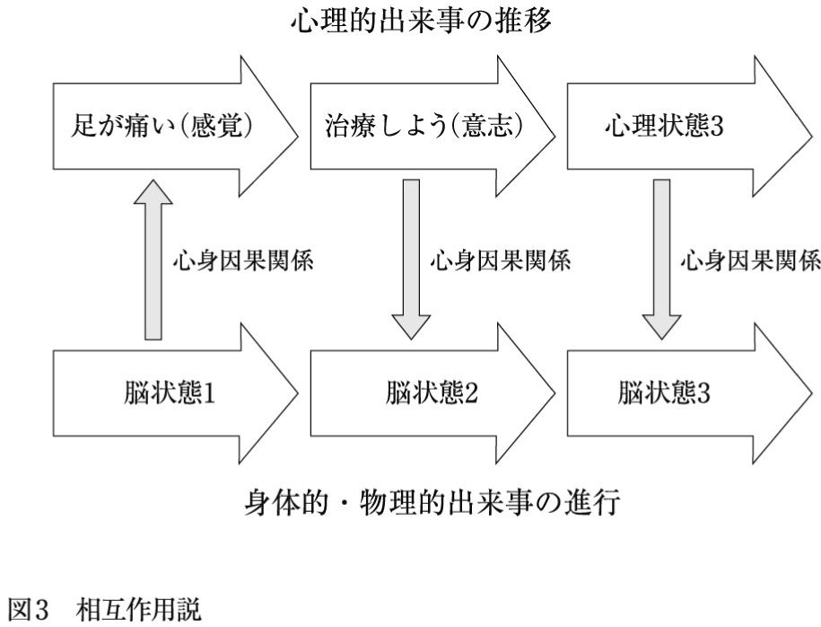
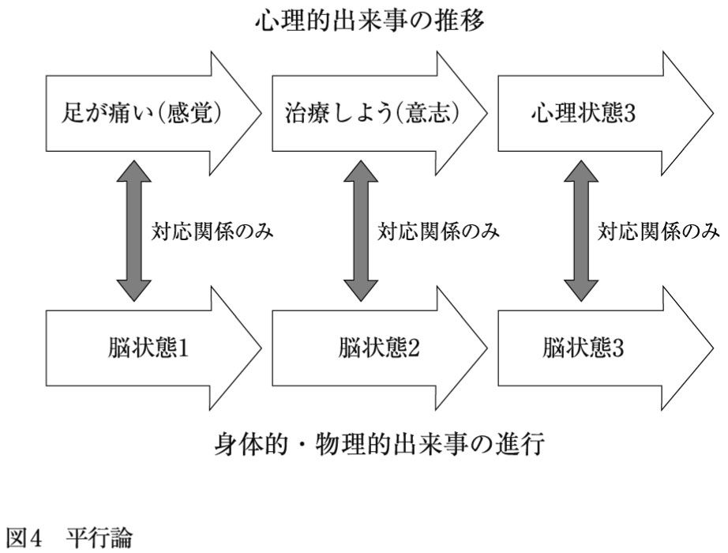
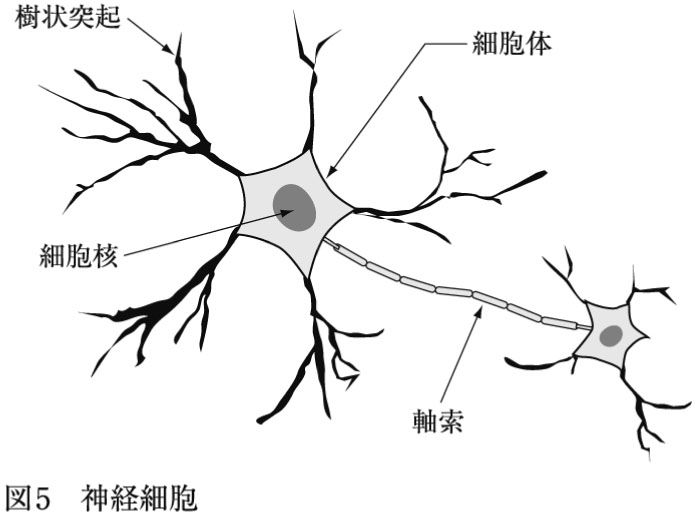
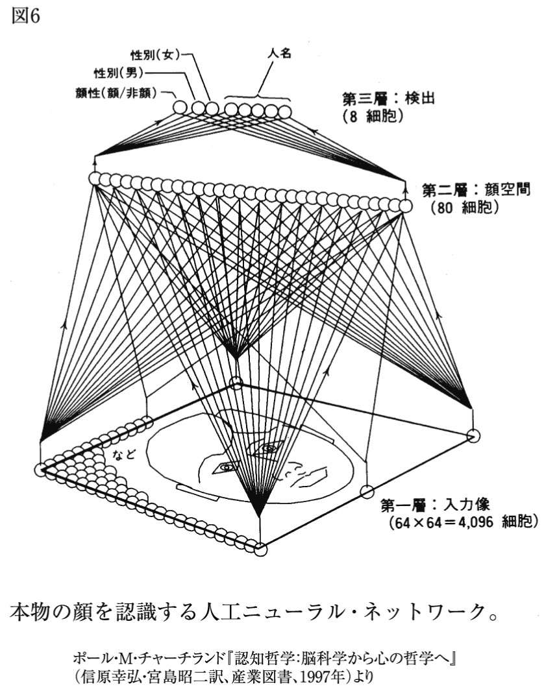
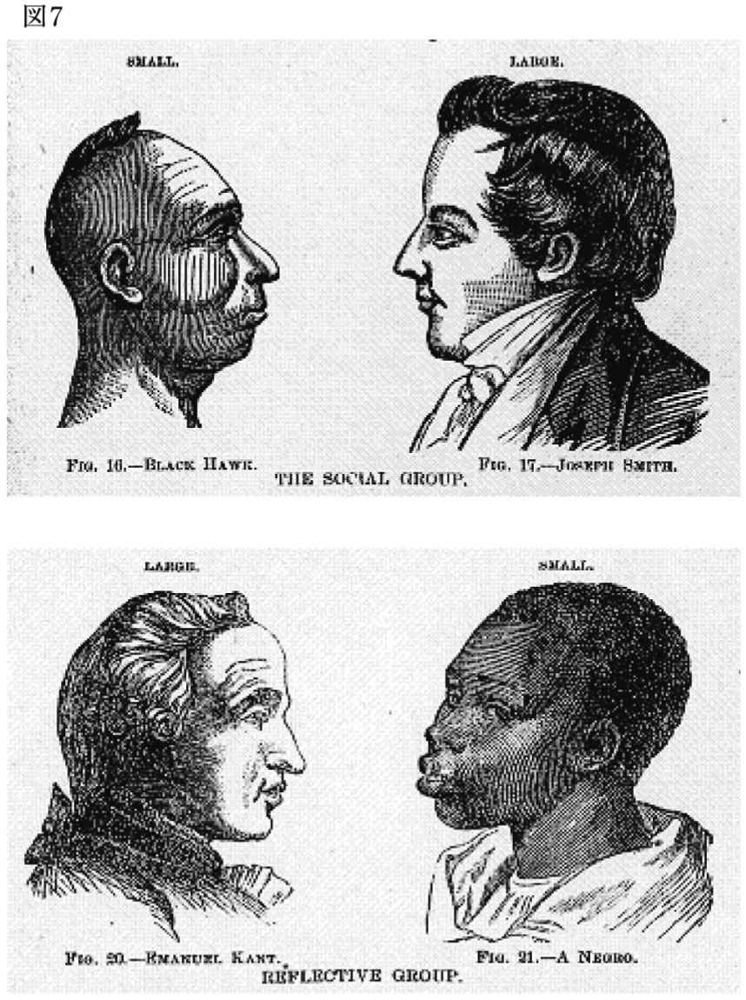
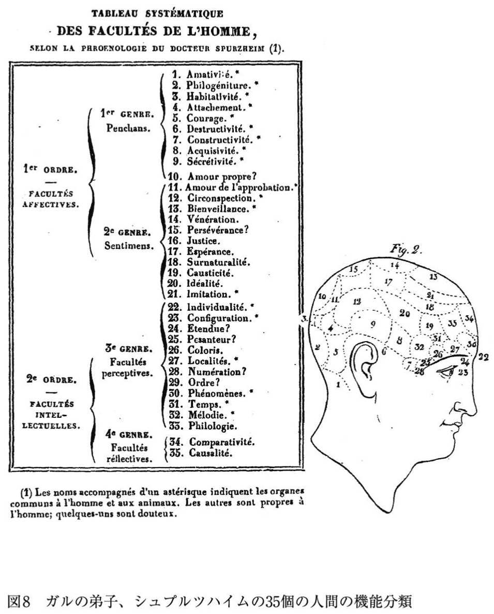
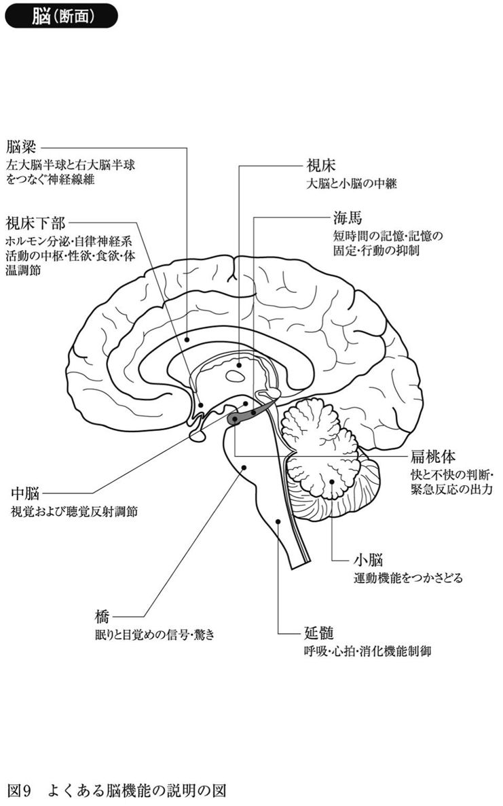
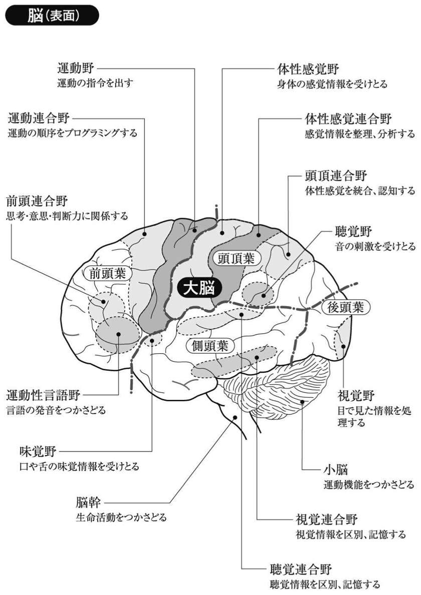
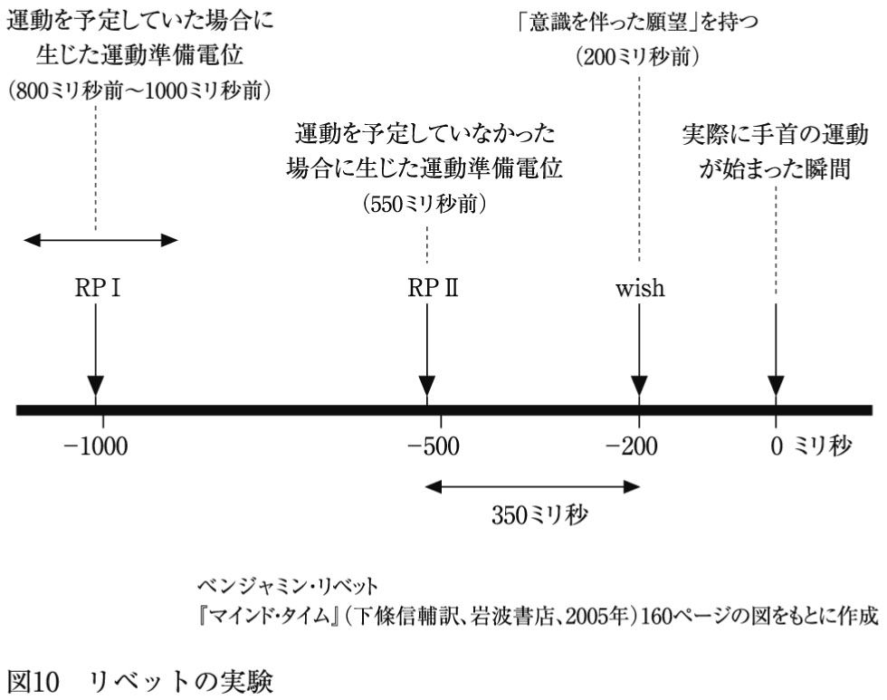
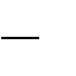

| 暴走する脳科学～哲学・倫理学からの批判的検討～ | |
| 河野 哲也 | |
| (2008) | |
目次
一九九〇年代以降、脳科学は、新しい画像技術の開発によってめざましい進歩を遂げている。
もっとも期待されるのは、筋ジストロフィーやアルツハイマー病など神経系の難病の治療だ。遺伝子の解析と、原因物質とそのメカニズムの解明によっては、これまで治療の困難だった神経疾患や精神疾患に対して有効な治療法や薬物を生み出せるかもしれない。これは私たちにとって光明である。しかし、現在の脳科学が注目されているのは、実は、治療にとどまらない、治療を超え出た分野にも進出してきているからである。
人間の平均や標準を超えて能力向上をすることを「エンハンスメント（能力増強）」と呼ぶ。脳科学の発展によって脳機能のエンハンスメントが可能となるかもしれない。つまり、知性の向上や記憶力の昂進、性格の改変などといった新しい自己コントロール方法ができるかもしれないのだ。
治療（トリートメント）は、人間を健常の状態へともどそうとするものである限り、私たちの生活の枠や価値観までを変えてしまうものではないだろう。しかし、エンハンスメントは、私たちのこれまでの常識や社会のあり方を根底から変えてしまいかねないものである（上田昌文・渡部麻衣子編『エンハンスメント論争――身体・精神の増強と先端科学技術』社会評論社、二〇〇八年、参考）。
コンピュータの専門家であり、バイオやナノテクにも詳しい科学者であるナムは、脳・ＩＴ・遺伝子技術の総合によって、能力的に人間をはるかに超えた超人類が生まれてくる可能性を示唆している（『超人類へ！――バイオとサイボーグ技術がひらく衝撃の近未来社会』河出書房新社、西尾香苗訳、二〇〇六年）。とくに、脳と機械の接続（ブレイン‐マシン・インターフェイス、〝ＢＭＩ〟と略される）に関する報告は興味深い。
たとえば、一九九七年に神経外科医ベイレイが、首以下の身体全体が運動マヒに陥った患者に対して行った実験は印象的である。
ベイレイは、患者の大脳皮質の運動野の左腕の動きをつかさどる部位に、電極を一本差し入れて信号を取り出し、この信号をコンピュータ・モニター上のカーソルの動きに連合させた。左腕を動かそうとするとその部位に興奮が生じるのでカーソルが動く。相当な努力と訓練の後に、この患者はついにカーソルを使ってうまく文章が打てるようになったのである。
注目すべきは、最終的に患者は「腕を動かそう」と思わないでも、直接にカーソルを動かして文字を打てるようになったことである。それは、患者の身体がコンピュータを自己の一部として取り込んだことを意味している。しかしこれは、驚くべきことではあっても、異常なことではない。私たちの身体のもっているごく当たり前の性能なのだ。
たとえば、自動車の運転に慣れた人は、足がどれくらいアクセルを踏んでいるか、いちいち意識せずに、直接に自動車のスピードを上げ下げしようとする。私たちは、足を動かそうと意図するのではなく、スピードを変えようと意図する。そのときに、私たちの身体は、自動車の大きさにまで膨らみ、生身の足やその中の筋肉や神経は自動車という大きな身体の一部として統合されている。あるいは、私たちは、テニス・ラケットをもつ腕の角度を変えようと意図するのではなく、相手のコーナーぎりぎりにレシーブを打ち込もうと意図する。そのときにラケットは、文字通り私の腕の延長なのである。
ベイレイの患者に起こったことは、これと同じである。
ここからナムは、脳による機械の直接的な遠隔操作、さらに人間の脳どうしを直接接続することの可能性までも示唆している。いわば「考えることで動かせる」究極の機械ができるかもしれないというわけである。
こうした実験と未来予想は、私たちに、自分の能力を飛躍的に向上させてくれる期待を抱かせるが、同時にいいようもない不安もかきたてる。科学知識は、誤った使用をすることによって、これまでいくつもの災厄をもたらしてきた。脳についての知識も同様ではないか。
哲学者のマラブーが指摘するように、「『脳』という言葉自体がわたしたちを怖がらせる。というのも、わたしたちは脳のあらゆる現象・襞・層・機能局在について何も理解していないからだ」（Ｃ・マラブー『わたしたちの脳をどうするか――ニューロサイエンスとグローバル資本主義』桑田光平・増田文一朗訳、春秋社、二〇〇五年、九頁）。
五つの疑問
このような脳科学の発展を前にして、私たちには以下のような素朴な疑問が次々に湧いてくるのではないだろうか。
①脳科学者がいうように、脳研究は、本当に心の働き（知性、記憶、道徳心など）の解明をもたらすのだろうか。
②それ以前に、そもそも、心と脳とは同じものなのだろうか。脳イコール心といってよいのだろうか。
③脳を調べることで心の状態を読むこと、いわゆるマインド・リーディングは可能だろうか。
④脳研究から得られる知識は、心に関するこれまでの考え方や自己観にどのような変更をもたらすのだろうか。人間の行動は脳のメカニズムによって決定されていて、自由などは幻想にすぎないのだろうか。
⑤脳研究が、医療・教育・司法（犯罪捜査、裁判）などの分野に応用されると、どのような社会的インパクトをもち、どのような倫理的問題が生じるのだろうか。
私たちは、専門家ではなくともそれらのことを知りたいのだし、専門家でないからこそ、それらのことを問う権利をもっているのである。
本書は、脳科学と対話しながら、この五つの素朴な問題に解答しようとする試みである。
哲学とは何だろうか。そのひとつの重要な役割は、専門知識の批判的検討にある。哲学が行う批判的検討とは、専門家の立場からなされる専門家のための知識の検証や追試ではない。哲学の任務は、ある専門知識が本当に妥当なものであるかどうか、人間に有益なものであるかどうかについて、一般的な視点から素朴だが根本的な問いを立てて検討することにある。
本書では、現代の脳科学が提起する諸問題を、哲学的・倫理学的観点（倫理学とは道徳の哲学である）から考察することを目的とする。それによって、非専門家である市民と専門家である科学者の対話を促し、脳科学と心の研究のより良い発展に寄与しようとするものである。
本書は、脳と心の関係に関心がある人、脳科学を勉強している人、心理学や人工知能研究に関心のある人、脳科学の発展に危惧を抱いている人など、一般の読者を広く対象としている。
理工学の簡潔で明快な論述になれた人の目には、哲学の議論はややもすると、くどくて、言葉の使用に慎重すぎ、重苦しく思えるかもしれないが、最後までお付き合いしてくださることを希望している。
「脳の十年」
一九九〇年代のアメリカやヨーロッパでは、脳科学の推進が議会や政府によって支援されはじめた。米国では連邦議会が一九九〇年代を「脳の十年」と定める決議を行い、当時のブッシュ大統領（父）がこれに署名した。これらの政治による推進は、精神・神経疾患に関する研究を主眼に据えたものであった。脳科学は、遺伝子科学などの生命科学に次ぐ、ビッグ・サイエンスとなったのである。
これにやや（あるいは、見かたによっては、かなり）遅れて、日本でも、一九九六（平成八）年に、日本学術会議が「脳科学研究の推進について」という勧告を行い、翌年には、科学技術会議ライフサイエンス部会脳科学委員会が「脳に関する研究開発についての長期的な考え方」を表明した。
平成八年の『厚生白書』では、現代が「脳の時代」であり、「脳機能の解明は、医学や工学の分野に多大な貢献をもたらす」と宣言されている。
そこでは、とくに重点化されるべき研究分野として、統合失調症、躁うつ病、高齢者の精神障害、精神発達障害のような精神疾患の研究と、筋ジストロフィー、アルツハイマー病、パーキンソン病、筋委縮性側索硬化症、脊髄小脳変性症などといった神経・筋疾患の病態解明と治療の研究があげられている。
この一〇年間に、ニューラル・ネットワーク（神経回路網）形成に関わる新規遺伝子の同定・解析、アルツハイマー病の原因物質（βアミロイド）の蓄積と分解メカニズムの解明、パーキンソン病遺伝子の特定などの成果がもたらされた。これをさらに推進しようということである。
非侵襲的脳機能計測手法の発展
脳研究は、これまでおもに医療分野において展開してきた。しかし注目すべきは、この二〇年ほどの非侵襲的脳機能計測手法（外側から組織を傷つけずに計測する方法）の発展、たとえば、八〇年代に急速に発展したＰＥＴ（１）（陽電子放射断層撮影法）や、九〇年代に普及したｆＭＲＩ（２）（機能的核磁気共鳴法）、ＮＩＲＳ（近赤外線分光法）などの方法（３）によって、脳研究は新たな局面を迎えたことである。
こうした測定テクノロジーの発展に伴って、高次脳機能、すなわち、注意、認識、思考（推論、計算、判断）、言語（音声言語と書字言語）、記憶、意図・意志、情動などの心理作用を解明しようとする研究が急速に発展した。つまり、医療的研究に加えて心理学的研究が大きなテーマとなることによって、脳科学は、自然科学と人文社会科学にまたがる複合領野的な研究になったのである。
この数年、Ｊ・Ｍ・エーデルマン、Ａ・Ｒ・ダマシオ、Ｖ・Ｓ・ラマチャンドラン、Ｒ・ペンローズのような脳科学者が、心の本質に迫ろうとする興味深い著作を発表し、一般の知的読者の関心も引いている。脳科学が治療のみならずエンハンスメントに乗り出しはじめたのは、この動きと連動している。
以上のような脳研究の動きは、日本学術会議の「脳科学研究の推進に関する懇談会」（座長：金澤一郎日本学術会議会長）が、二〇〇七（平成一九）年五月に文部科学省研究振興局ライフサイエンス課に報告した『脳科学研究ルネッサンス――新たな発展に向けた推進戦略の提言』にも現れている。
その提言では、「精神神経疾患・心の問題の解明」や「身体機能回復・補完」といった医療的研究とともに、「脳を育む」領域の研究、つまり、子どもの教育への貢献が謳われている。
１ ＰＥＴ（Positron Emission Tomography）：微量の放射線を放出するポジトロン（陽電子）薬剤（トレーサー）を静脈注射し、血流や代謝量から脳活動を分析する方法。（本文へ戻る）
２ ｆＭＲＩ（functional magnetic resonance imaging）：酸素を失った還元ヘモグロビンは磁性をもち、酸化したヘモグロビンは磁性をもたない。何らかの刺激によって脳の特定部分が賦活する（活発化する）と、その局所の血流量は増加し、相対的に還元ヘモグロビンが減少する。還元ヘモグロビンの濃度が低下すれば磁化率も減少し、プロトン（陽子。原子核を構成する素粒子で、正の電荷をもつ）の磁気共鳴（ＭＲ）信号が増加する。この磁気共鳴信号の増加をとらえ、脳内の血流動態反応を見る方法がｆＭＲＩである。時間解像度が低い（つまり、センサの作動が遅く、素速い変化をとらえられない）点に難点がある。（本文へ戻る）
３ ＰＥＴやｆＭＲＩ以外に、ＳＰＥＣＴ（単一光子放射断層撮影、Single photon emission computed tomography）やＮＩＲＳ（Near-Infrared Spectroscopy）という非侵襲的測定法も存在する。ＳＰＥＣＴは、体内に放射性同位元素（同じ元素で中性子の数が違うものを同位体と呼ぶが、その中で放射性崩壊して、放射線を発するものをいう）を投与し、ガンマ線を検出して断層撮影する方法である。
ＮＩＲＳは、脳に近赤外線を投射すると、ヘモグロビンが酸素と結合したときとしないときでは吸光度が異なるので、その散乱・反射光の違いによって成分を算出する方法である。ＮＩＲＳは、ｆＭＲＩとは逆に、時間解像度は高いが空間解像度が低い（つまり、脳の浅い部位しか測れず、対象の位置もあまり細かく映像化できない）。（本文へ戻る）
さて、「脳の十年」のあいだに分かったもっとも重要なことは、脳は、以前に考えられていたよりもはるかに変化しやすく、可塑性に富んだ臓器だということである。
可塑性とは、もとは物性科学の用語だが、ある程度以上の力を加えると連続的に変形し、力を除いても変形したままで元に戻らない性質をいう。脳の可塑性とは、脳が環境に適応して新しい機能を獲得し、それを維持する性質に優れているということである。
従来の定説とは逆に、大人になってからも脳の一定領域は新しい脳細胞を作り出すことができることが判明した。ほとんどの細胞は誕生前に成長するとはいえ、成人の脳でさえ新しい細胞は成長し、とくに記憶や学習にとって重要な海馬において確認済みである。こうした成長に関わる因子やその分泌を促す物質を薬として使えば、さまざまな神経疾患や脳脊髄損傷の治療に役立つ可能性があるだろう。
また、脳内の結合度は絶えず変化しており、新しい学習があるたびに脳内で何かの変化が生じる。これも従来考えられていたよりもずっと容易に、脳のある領域が別の領域に干渉し、その部分が果たしていた役割を引き継ぐことが分かってきた。脳は、環境へ適応する生物の器官として、経験に応じてつねに自らを配線し直しているのである。
これらの事実は、医療分野にとってのみならず、教育にとっても大きな可能性を示唆している。
神経発生や脳機能発達のメカニズム、その障害についての研究は、「子どもの脳を健康に育み」、自閉症やアスペルガー症候群のような発達障害を予防、あるいは治療するために必要であるとされ、さらに、発達に応じた適切な教育カリキュラム作成や、言語・コミュニケーション力などの社会的能力発達の促進方法の開発が期待されている。
医療分野での脳研究
新しい脳研究は、さらにさまざまな試みに着手しつつある。医療分野としては、新しい画像技術による、神経・筋疾患の難病や精神疾患の診断および治療が試みられている。
たとえば、脳を電磁刺激することで、うつ病や躁病、緊張型統合失調症、パーキンソン病、てんかんなどの症状を和らげたり、認知機能を高めたりする治療が行われている（図１）。
この図表は、「日経サイエンス」2003年12月号、49頁の図をもとに作成した。電気刺激に関してはこの時点よりも進展があまりないように思われる。また、この臨床試験の表は、アメリカの現状を中心としたものであり、日本の情勢ではない。たとえば、ECTは日本ではうつ病と緊張型統合失調症を対象に行うことが多く、躁病ではあまり行われないようである。DBS(脳深部刺激療法)は日本でもパーキンソン病で保険適応が通っている。一般に、日本ではうつ病をはじめとした精神疾患治療についての電気刺激療法はまだ進んでいないと思われる。
脳の特定領域にパルス状の磁場をかけて電気刺激を引き起こす経頭蓋磁気刺激（ＴＭＳ： Transcranial Magnetic Stimulation）による療法や、定位脳手術装置を使って脳深部の目標点に刺激電極を埋め込む脳深部刺激療法（ＤＢＳ：Deep Brain Stimulation）がそれである。
後者は、重度のうつ病、パーキンソン病による震顫、強迫性障害、てんかん、遷延性意識障害に効果があるという。
また、運動障害や四肢欠損をハイテク治療で克服しようという試みも存在する。たとえば、生きた脳に微細ワイヤを埋め込んでコンピュータと接続し、動物が自分の手足を動かそうとする運動性の電気信号をひろって、ロボットアームやレッグを動かそうとする実験である。
こうした精巧なブレイン‐マシンのインターフェイスが実現できれば、四肢を失った人が人工義肢を動かしたり、脊髄損傷で手足がマヒした人が機能を取り戻せたりするようになるかもしれない。
※第１相試験は、健康な人を対象とする新薬の小規模な安全性試験。第２相試験は、患者を対象にした安全性と効果を調べるもの。その後、承認を経て、大規模な安全性・効果試験である第３相試験に入る。
この図表は、「日経サイエンス」2003年12月号、36頁の図をもとに作成した。いくつかのデータを現時点(2008年10月)のものに変更した。開発中の薬についての情報の回転は非常に短時間であり、この表に載せられた情報も暫定的なものでしかない。この情報もアメリカのものであり、日本では事情が異なる。アメリカと適応症など違っていることもある。また、インターネットで調べた企業情報には、ネガティブな情報が載っていないので、そのまま受け取るには慎重になった方がよいだろう。試験段階にあるということは、今後実験中止の可能性もあり、確実なのは「未承認の薬」ということである。
モダフィニルは「モディオダール」という名前で日本でも認可された(アルフレッサ・ファーマ社)。リタリンは、日本ではナルコレプシー(睡眠障害を主とする精神疾患)のみに承認が通っている(ADHDの治療薬として使われていない)。メチルフェニデートを含む医薬品としては、リタリンの他にコンサータがヤンセン・ファーマ社から発売されている。ノバルティス・ファーマ社の情報では、リバスチグミンが、ヤンセン・ファーマ社の情報では、ガランタミンが、日本でも治験中のようである。
図１と２の治療や薬の情報については、読者各自に確認していただき、ここでの情報はあくまで哲学・倫理学的議論のための参考程度にとどめておいていただきたい。
あるいは、脳のどの部分が活性化しているか画像化するｆＭＲＩ装置は、「心を読む機械」として利用できるかもしれない。そうすれば、脳科学の成果を防犯や犯罪捜査にもちいることも可能となろう。あまり頼りにならない現在のポリグラフに代わって、ｆＭＲＩが新しい嘘発見器として利用されることがありうる。長い取り調べや野蛮な拷問などに頼らずに、犯罪者やテロリストの脳に、直接、真実を聞き出すことが可能になるかもしれない。この方がむしろ人道的だと考える人がいるかもしれない。
また、精神障害等に関する脳鑑定、証言の妥当性の判定など司法分野にも大きな影響をもたらす可能性もある。
これらの脳科学の司法分野への導入は、社会的・道徳的な観点から大きな論争を巻き起こすに違いない。それは社会の枠組みを変えてしまう可能性があるからだ。
マインド・リーディングがもし信頼できる精度にまで発展したなら、それをマーケティングなどに利用する神経経済学（ニューロエコノミクス）や神経マーケティングがさかんになるかもしれない。個人の消費志向や購買判断の傾向をより正確に解明できるかもしれないし、本人の意識にはのぼらない嗜好を浮かび上がらせることもできるかもしれない。
さらに、配置転換や業績評価、性格診断、精神健康度調査、再教育のための資料など、人事管理にも使えるかもしれない。
脳研究の実用化については、一般社会の側からの関心と期待も高まってきている。しかし他方、一般の人々は、こうした科学の急速な進歩に不安をもつことだろう。それは、一部の専門家に社会進展の趨勢を任せてしまうことへの不安である。
一部の人間が、国民の同意なく社会の趨勢を決めてしまうことは非民主的である。一般市民が科学発展に抱く危惧を、無知ゆえの不安や取り越し苦労として退けることは、科学者の不遜である。
二〇〇八年一月一四日に京都大学で開かれた国際公開シンポジウム「人間改造のエシックス」の報告では、国民が「脳科学に期待はするが、規制も必要になる」と考えていることが統計的に示された。
全国の二〇～六九歳の男女二五〇〇人の調査では、「脳科学の発展は人々を幸福にする」との意見に「賛成」「どちらかといえば賛成」は合わせて四九％、「反対」「どちらかといえば反対」は合わせて七％程度であった。しかし、「脳科学研究は、きびしく規制されなければならない」に対しては、「賛成」「どちらかといえば賛成」が五六％となった。
興味深いのは、その研究内容への評価である。
医療目的に賛成が多くなるのは分かりやすいが、思考や感情を読み取る技術を「犯罪捜査」や「法廷での証言の真偽判定」に利用することは、「望ましい」「どちらかといえば望ましい」は計五四％であり、「企業の人事管理」には「望ましくない」「どちらかといえば望ましくない」が計六五％にのぼった。
同じタイプの技術応用ではあるが、適用分野によって評価にばらつきがあるのだ。
先に、脳科学は文理融合型の新しい研究分野であると述べた。しかし実際には、医療としての脳研究と、脳機能計測を心理研究の方法論として用いる研究の間には、まだかなりのギャップが存在しているように思われる。
医師の中には、脳科学の教育や司法分野などへの応用に、懐疑を表明する人も少なくない。その懐疑は、人間の心を脳計測手法で研究することが妥当かという科学方法論上のものでもあると同時に、それを教育や司法という人間や社会の根幹に関わる事業にすぐさま応用してよいのかという倫理的・道徳的な懐疑でもある。
あるいは、自然科学系の脳科学者の中には、基礎研究の積み上げも不十分なのに、現段階の研究がすぐに社会に貢献できるかのように宣言することは不適切であると指摘する声も大きい。役に立つことを宣伝するのではなく、脳の基本原理を解明するためには基礎研究がもっと必要であると強調するべきだというのである。
脳研究の教育や司法への拙速な実用化に対して危惧を抱く声は、当の脳科学の専門家の間にも存在するのである。
他方で、心理学や教育学など人間科学プロパーの研究者の中にも、心理研究の方法としての脳機能計測を胡散臭く思う人たちがいる。
そうした懐疑を、新しいものへの警戒心や縄張り意識の表れにすぎないと断じることはできない。人間科学の研究者たちは、自分たちの研究対象である人間の心や行動を、自然科学の方法で扱うことがどれくらい困難であるか、日々実感しているからだ。
脳機能計測を心理研究の方法論として用いる研究は、医療的な脳科学者からも、心理学の従来の研究者からも一定の疑問を呈されているのだ。
脳科学の知見に基づいているかのような誤解を与える「脳科学商品」や「脳トレーニング法」がすでに商品化されているが、こうした安易というだけでなく、道徳的・倫理的に問題のある「応用」は、この分野への不信感を不必要に増大させてしまうだろう。
脳科学者たちは、学会の内部に倫理委員会を形成して、これらの商品やサービスが本当にその名前にふさわしい科学根拠があるかどうかを調査し、そうではない場合には、不当表示であることを学会全体として表明する必要があるだろう。
また、脳科学者が、自分の専門性を超えて政治や教育や健康などの分野で無責任な放言を繰り返し、それがあたかも脳科学的な裏付けがあるかのように受け止められている社会現象も見過ごせない。
科学者は、疑似科学や似非科学への注意の喚起を行う社会的義務があるはずである。
神経神話
疑似科学や似非科学は、ときに現代の神話として人々を欺くものになりうる。「三歳までに脳の基礎的能力が決まってしまう」とか、「脳の機能には〝臨界期〟があり、この時期にのみ環境からの入力によって成長する（４）」とか、「脳の大部分は眠ったまま使われない」などといった、科学的根拠に乏しい風聞や誤解は「神経神話」と呼ばれる。
そうした神話が、健康や教育のような分野において科学的な言説として流布してしまっているのが現状である。
とくに教育現場では神経神話がはびこっている。脳科学は、これまでとらえにくかった子どもの心の状態や能力、問題を客観的に測定できるかのような印象を与える。それゆえ、子どもの心をどのようにとらえてよいかについて悩んでいる教師たちは、不確かな情報やいい加減な脳科学の「応用」にも飛びついてしまうのだ。
神経神話は、根拠のない神話として一般社会に害があるだけではなく、いずれは脳科学の信用を失墜させ、健全な進展をも阻害してしまうだろう。
日本の初等中等教育は、与えられた「真理」を鵜呑みにさせる傾向が強く、情報を批判的に検討し利用するリテラシー教育にきわめて乏しい。初等中等教育の教師自身にも、権威となる「正解」を求める傾向がかなりあるといってしまってはいいすぎだろうか。
４ 理化学研究所脳科学総合研究センターの津本忠治によれば、「学習や経験に伴う脳の変化のおこりやすさは、年齢とともに低下する場合も多いが、〝臨界期〟概念が意味するような特殊な時期にのみ変化がおきるわけではない」（「〝臨界期〟概念の成立、展開と誤解」『科学』二〇〇七年三月、二七四～二八〇頁）。津本によれば、現代の脳科学では、「臨界期」ではなく、入力に比較的敏感という意味で「感受性期」という概念を使うべきだと指摘する学者が多い。
また、かりに感受性期というものが存在しても、それぞれの心的機能で時期がまちまちである可能性が高いばかりでなく、そうした時期が存在しない機能も多いと推定されるという。（本文へ戻る）
これまでごく簡単であるが紹介してきた脳の先端的研究は、まだ始まったばかりである。とくに脳の高次機能研究は、この点は専門家にも同意してもらえると思うが、すぐさま教育や司法分野に応用できるような段階にあるわけではない。先の国民へのアンケートも、科学的な内実が不確定なままでの意識調査といってよいだろう。
しかしながら、今日の科学研究は、従来のように専門家の知的関心のままに進行させればよいというものではない。その社会的影響力、その財政的基盤などを考えてみれば、科学研究にも一般社会へのアカウンタビリティ（説明責任）が求められることは常識となりつつある。科学研究も市民とのコミュニケーションを欠いて進めるわけにはいかない。
とくに、医療、生命科学は、個人の生命と直結する分野である。そこで、生命科学に対してと同じく、脳神経科学に関しても倫理的考察と基準作りが求められるだろう。
「ニューロエシックス（神経倫理）」という言葉は、マイケル・ガザニガの『脳のなかの倫理――脳倫理学序説』（梶山あゆみ訳、紀伊國屋書店、二〇〇六年）で一般の人たちに知られるようになったが、そこには意図的に多義的な定義が与えられている。
ひとつには、それは脳科学研究の方法や成果、その応用に関して倫理的・道徳的観点から考察し、できれば法的規制の基準を考えようとする倫理学を意味する。つまり、生命倫理（バイオエシックス）が、生命科学の倫理学であるのと同じ意味で、脳神経科学の倫理学としてのニューロエシックスである。
ガザニガが与えているもうひとつの意味は、ある人の道徳心や道徳判断を脳科学的に研究しようとする、道徳心理の脳神経科学としてのニューロエシックスである。これは、道徳心理学という従来の分野に、脳科学的方法論をもちこんだものと理解することができる。
消費嗜好や購買判断など人間の経済的行動を脳科学的に研究する分野を、前述のように神経経済学＝ニューロエコノミクスと呼ぶが、二番目の意味でのニューロエシックスは、これに近い呼び方である。
本書が論じるのは、第一の意味でのニューロエシックス、すなわち、脳神経倫理学だけである。
以上のように、私たちは、脳科学が花開きつつある時代に生きている。このことに私たち一般人はどのように向き合うべきだろうか。
古代ギリシャで生まれた哲学は、当時の（不完全ではあるが）民主主義社会における市民のための知だった。
専門家と一般市民という分け方をするならば、あるいは、一人の人間のなかに専門家としての側面と素人という側面があるとすると、哲学というのは、一般市民のための学問であり、素人のための知である。
科学は、研究領域も方法論も定まっていて役割分担があり、その専門家は良くも悪くも権威をもっている。しかし、哲学は何を研究してもよいし、特定の方法論もない。哲学とは、一般市民が非専門家の立場から、既存の知識や常識に対して「それは本当に〝正しい〟知識なのですか。それは、吟味された生活に役立つ知識なのですか」と問いかける作業に他ならない。
哲学には特定の専門領域がなく、どんな問題にでも介入するのは、専門家ならぬ一般市民のための知だからである。
脳の高次機能研究は、他のあらゆる科学の分野と同じく、その根本に哲学的な諸問題を抱えている。
たとえば、「心、あるいは意識と脳とはどう関係しているのか」「心と脳とは同一だと考えてよいか」「心が脳の産物であり、脳が自然法則に従っているとするならば、私たちには意志の自由はあるのだろうか」「物体である脳から、私たちの感じている感覚・知覚の世界がどのように生み出されるのだろうか」といった問いがそうである。
当面の具体的な実験の課題については、これらの根本問題に解答をせずとも脳研究を続けることができるだろう。だが、脳科学の究極の目標が人間の心の解明にあるとすれば、最終的にはこれらの問いにも解答しなければならないはずである。
哲学の心身問題と呼ばれる分野では、そうした問題を長らく議論してきた。残念ながら、これまで脳科学と哲学の間には十分な交流がなく、哲学的議論の成果が脳科学者によく知られているとは思われない。
また、先の脳神経倫理で紹介したように、脳研究の応用には重大な倫理的問題がついてまわっている。
「脳機能画像化によるマインド・リーディングは、プライバシーの侵害をもたらすのではないか」「スマートドラッグは使用されてよいものなのか」「脳研究の結果人間の自由意志が幻想であるとすれば、個人の責任や犯罪の償いはどのように追及されるべきか」「脳機能に損傷があり、粗暴な行動を抑制しにくいと判断された人物には、残忍な内容をもつゲームソフトの販売や視聴は規制されるべきであろうか」「ある種の脳障害が原因の一端となって犯罪をおかした場合、刑罰の代わりに、薬物などによる有効な治療が処方されるべきであろうか。またそうした人に対して、予防的な治療措置が用いられるべきだろうか」「心とは脳のことであるならば、これまでの人間の自己観や世界観、宗教心は大幅な変更を余儀なくされるのではないか」。
こうした倫理的な問題は、すべて最初の心身問題に直接間接に関係している。
本書では、脳科学と哲学・倫理学が共有しているこれらの問題について、哲学・倫理学の立場から論じてゆきたい。
もちろん、以下の章で論じるものは、上記のあらゆる問題に解答するものではないし、また、不偏不党の立場から、これまでの哲学の諸説を網羅的に紹介したものでもない。できるかぎりさまざまな立場を考慮に入れたつもりではあるが、多分に、筆者個人の考えを反映した哲学的主張である。脳科学の研究者からも、哲学者・倫理学者からも、多くの疑問や反論が投げかけられることだろう。
本書はひとつの立場の表明であり、公開的な議論のための提題と考えていただければ幸いである。
各章の予告
以下、各章の構成を簡単に紹介しよう。
まず、第二章「脳と拡張した心」では、心と脳の関係性について哲学的な観点から考察する。ここでは近年、哲学や認知科学の世界の中で急速に支持されつつある「拡張した心」という概念・考え方を紹介する。
この考え方によれば、心は脳の中だけに位置付けられるのではなく、脳を含んだ身体とその環境の中に拡散的に実現している。この考え方では、脳はそうした拡散したシステムの一部を担っている臓器にすぎない。「拡張した心」の概念は、これまでの心理概念を覆すものであり、本書の基調をなす立場である。
第三章「マインド・リーディングは可能か」では、脳イメージング技術によって人間の高次の心理過程を解読する試みを検討する。
近年開発されたｆＭＲＩやＰＥＴのような脳活動を画像化する技術によって、その人の心の状態、本人さえも気づかない心の状態を割りだすことができるようになるという。これは本当に可能になるだろうか。マインド・リーディングを応用して、嘘発見器や証言の確証方法が作り出せるだろうか。
脳イメージング技術の可能性と限界がどこにあるのか、哲学的な考察から接近していく。
第四章の「社会的存在としての心」では、心が社会的環境に組み込まれた本質的に社会的な存在であることを、心理学や生理学、骨相学の歴史を振り返りながら示すことにする。
脳が可塑的であるということは、それが社会的な環境にも適応する臓器であることを意味している。心臓や胃腸と異なり、脳は社会的な臓器なのである。
第五章「脳研究は自由意志を否定するか」では、人間が自由意志をもちうるかどうかについて検討する。
脳科学者のベンジャミン・リベットが行った実験は、人間が自分で決意する前に運動がすでにはじまっていること、したがって、決意は行動の引き金でないことを示したと考えられている。すると、私たちが自分の自由意志で行動をしていると思っているのは一種の幻想ではないのだろうか。さらに、心が脳の働きにすぎず、脳が自然法則に従って動く器官のひとつにすぎないならば、人間の意志や思考などは自然のメカニズムによって決定されているのではないだろうか。
リベットの実験と議論は、自由意志に関して多くの問題提起を行った。人間には、本当に自由意志があるのかどうか、拡張した心の観点から考察していく。
第六章「脳神経倫理」では、脳研究そのものと、そのテクノロジー的応用に関する道徳的・倫理的問題を論じる。
脳科学の危険性は、それが個人をコントロールするテクノロジーとして権力によって利用されてしまうことにある。心理学には、本来は社会的次元で問われるべき問題を個人の次元に還元して、指導者の責任を回避し、社会改革を遅らせようとする政治的な操作に利用されてしまう危険性が指摘されている。心理学の中にすでに認められているこの傾向が、脳科学において増強された形で発揮されてしまうこともありうる。
脳科学の健全な発達は、医療をはじめとしたさまざまな分野で望まれている。倫理性がその健全な発展を促す指標であることを指摘して本書を閉じることにする。
「心はどこにあるのか」という問いは、「人が死んだら、その心はどうなってしまうのか」と同じくらいに古くからある問いである。英語では心を「ハート」というし、東洋でも「心」臓という。心は心臓にあるという考えは古今東西、かなり一般的であったし、他の内臓、たとえば、肝にあるという考え方もかつては存在していた。それは、心がどこかで生命力に近いものとして理解されており、心臓や肝が生命を維持する器官として考えられていたからであろう。
現代人の多くは、心は脳に深く関係している、と考えている（このように聞いて当たり前だと思った方には、現在の日本でも意外にも多くの人が、心は心臓にあると考えていることを知っていただきたい。筆者が大学で心はどこにあるのかと問うと、マジョリティとはいえないまでも、相当の割合の学生が「心臓」と答えるのである。これには、医学的知識の不足以外に理由があると思われる）。
脳が損傷すると、思考や記憶力に障害が生じることがあるし、損傷がはなはだしい場合には、同じ人とは思えなくなるほどの人格の変容が生じる。こうした身近な医学的事実から、脳が心の器官であると考えられている。しかし西洋の文脈でいえば、心を司る器官が脳であるという考えが一般に認められたのは、それほど遠い昔ではない。
この章では、心は脳にあると考えてよいものかどうかを哲学的な立場から検討することにしよう。そして、心の哲学や認知科学において近年興隆してきた「拡張した心」の概念を提案する。この考え方によれば、心は脳にあるのではなく、脳と身体とそれを取り巻く環境に実現しているのである。
まず、近代的な心身論を開始したデカルトの脳理論からみることにする。
デカルトの脳理論
デカルト（一五九六～一六五〇）は近代哲学の創始者として知られているが、同時にさまざまな分野の科学の開拓者であった。彼は、解析幾何や近代的宇宙論の創始者であるだけでなく、光学や生理学も研究し、現代の脳理論の基礎を作ったといってよい人物である。
デカルトにとって身体とは、自然法則の通りに動く一種の機械である。脳もそうした時計のように動くメカニズムの一部である。
デカルトは、さまざまな著作で脳について論じているが、代表的な『省察』（井上庄七・森啓訳、中央公論社、一九六七年）では、「精神は身体のすべての部分から直接にはたらきかけられるのではなく、ただ脳からのみ、あるいはおそらく脳のごく小さな一部分、すなわち、そこに共通感覚が宿るといわれている部分〔松果腺〕からのみ、直接のはたらきを受けるのだ」（三〇四頁）と論じている。
デカルトによれば、神経は管であり、その中を気体化した血液である動物精気が行き来して、感覚作用を受けたり筋肉を動かしたりしている。実際には、松果腺は視床後部の一部をなす内分泌器であり、デカルトが信じていたように、感覚を統合する（共通感覚）器官ではない。しかし、対象からの作用の変化が感覚器官の変化をもたらし、それが神経を伝わって脳にまで至り、脳内で精神における感覚や観念が生じるという、現在の脳理論につながる基本的図式を作ったのはデカルトである。
「心の座は脳である」というデカルトの主張はふたつの重要な意味をもっている。
ひとつは、心を脳に結びつけたことである。脳は、感覚器官から外界に関するデータをひきこみ、今度は出力系を通じて身体のすみずみまで指令をいきわたらせてゆく、いわば中央参謀本部のようなものとして想定されている。
心は脳にあるという説は、古代ギリシャのヒポクラテスがすでに唱えていたが、古代哲学の泰斗であるアリストテレスは心臓説をとっていた。
デカルトの時代においても、かならずしも皆が彼と同じ中枢説を取っていたわけではない。デカルトは熱心に「心は心臓にあるのではない」と反論している。それだけ心臓説も有力だったのである。
心理学史をひもといてみれば、魂は脊髄や全身の感覚器官に拡散して存在しているという分散説は、一九世紀中ごろまで中枢説の代替案として存在していた。
たとえば、一八世紀半ばに脊髄反射を発見したエジンバラ大学の医師、Ｒ・ホイットは「脊髄が魂を含んでいなければ、呼吸や心臓の鼓動、性行動などの脊髄の複雑な機能はどのように制御されるのか」と問うている。
また、チャールズ・ダーウィンの祖父であるエラズマス（一七三一～一八〇二）は医師であり、『ゾーノミア』という著作で進化論を唱えていたが、彼も、「感覚（feeling）」は身体全体に分散されているという分散説を唱えていた。
一九世紀では、ドイツの哲学者であり、生理学と心理学を研究したＲ・Ｈ・ロッツェ（一八一七～八一）、イギリスの哲学者であり、生理学や生物学の著作もあるＧ・Ｈ・ルイス（一八一七～七八）など、初期の生理学的心理学者たちも、心が脊髄などの脳以外の神経に分散して存在していると考えていたのである。
しかし一九世紀末には分散説には人気がなくなり、デカルト的な中枢説がすっかり普及する。
脳のどこに心が？
デカルトの主張のもうひとつの重要な意味は、「心の座が脳にある」ということで、心と脳とは独立した区別されるものとしたことである。
たとえば、対象からの作用→神経の変異→脳の変異という一連の過程は、完全に身体的であり、生理学的・生化学的に説明できるだろう。この脳の変化（神経興奮）から、さらに心における観念の変化が生じるとされる。行為をするときはこの逆の過程になる。どちらの場合にも、脳と心の間には一種のジャンプがあるといえるだろう。物質的な過程が、突如として、心的な過程になる（あるいは、その逆）というのだから。
しかし、人間の頭の中を覗いても、神経の興奮は見えても、心の中の観念やイメージが見えるわけではない。脳の興奮から心の観念が生じるといっても、一体、どこに生じているのか。自分が感じている心理的な内容と、神経細胞の塊にすぎない脳との間には、越え難い溝があるように思われる。
デカルトは、この心と脳の異質性をよく理解していた。デカルトにとって、心（彼にとって心イコール意識である）とは脳ではなく、物質とは自立した実体である。身体は機械であり、心はそれとはまったく異なる存在である。デカルトは、心は身体がなくとも存在でき、死後も存続すると信じていた。デカルトは心身を二元論的にとらえた。
しかし、物質性をまったくもたないはずの心が、なぜ脳の中に座をもつことができるのか。どのようにして身体と相互作用するのか。非物質的なものと物質的なものが因果関係にあるならば、エネルギー保存則に反してしまう。「念力」なるものは、エネルギー保存則に抵触する。
いや、そもそも、脳のどこを見ても心の観念などは見当たらないではないか。心はどこにあるのか。デカルトの理論はこれらの根本的な問題を残した。これが「心身問題」である。
心身問題への哲学の取り組み――古典的哲学の場合
心身問題については、一九世紀末までには四つの解答があった。
最初の立場は、デカルトに代表されるように、心身をそれぞれ独立した実体としてとらえたうえで、因果作用を認める「相互作用説」である（図３）。だが、いま述べたように、この立場は多くの問題をはらんでいた。とくに心身という異質なものの間に因果関係を認めることはおかしい。

そこで、心身のあいだには対応関係はあるが因果関係はないと主張する「平行論」が、マールブランシュやライプニッツによって唱えられた（図４）。

つまり、心と身体は、あたかも二つの正確な時計のように、それぞれは独立に進行しているというのである。物理的出来事はその中で閉じて進行し、他方、心理的な出来事もその中で閉じて推移する。この立場は二元論を保持している。心と身体の両者は、並行している二本の線分上の独立の出来事として、時間的に正確に対応しているが、その間には全く因果関係がないとされる。
その後には、二元論を回避しようとする一元論的な傾向が生まれる。
ひとつは、心的なものを物的なものに還元しようとする「唯物論」であり、一七世紀ではホッブズ、一八世紀ではドルバックやラ・メトリなどによって唱えられ、一九世紀のフォイエルバッハやマルクスによって徹底化される。現代哲学は、基本的に唯物論的な心の理解を踏襲しているといってよい。
他方、物的なものを心的なものに還元しようとする立場は「唯心論」と呼ばれる。唯心論はいくつかの例外はあるが、比較的、近代的な主張である。ここには、バークリ、ヘーゲル、ベルクソンなどの名前を含めることができるだろう。
唯心論は、ごく単純化すれば、世界を一種の精神的な存在とみなす立場である。この立場は、宇宙全体を精神的なものとみなす汎神論（自然・宇宙がすなわち神であると考える立場）に重なることが多い。しかし、現代では、以前のままの形で唯心論を唱える哲学者は少ない。「量子脳理論」（脳内の量子的状態が組織化された「客観的収縮」を起こすことによって意識が生じるという説）を唱えるロジャー・ペンローズの考えは、量子力学が意識の解明に本質的な役割を果たすと主張する点において、新しい唯心論とみることもできるかもしれない。
二〇世紀初頭の哲学の世界では心身問題はあまり論じられなくなるが、四〇年代になると、きわめて重要な二つの哲学的著作が発表される。
ひとつはフランスの現象学者、モーリス・メルロ＝ポンティの『行動の構造』で、もうひとつはイギリスの哲学者、ギルバート・ライルの『心の概念』（ともに、みすず書房）である。
この二人の哲学者はそれぞれ現象学（意識によって経験を構成する働きを分析しようとするドイツやフランスで発展した哲学の立場）と分析哲学（言語を分析することで哲学の問題を解決しようとする英語圏を中心に発展した哲学の立場）という異なった現代哲学の潮流を代表しているが、興味深いことに、行動という概念に着目して心身問題を克服しようとする点で共通している。
彼らは、「いかにして物体（身体、脳）から心が生じるか」という問題に解答しようとはしなかった。二人は、心と物という二分割を受け入れた時点で、デカルトの罠にはまってしまうことに気づいていたのである。つまり、心身問題は、誤った形で立てられた問いであり、それには原理的に解答が与えられないと彼らは考えたのである。
メルロ＝ポンティは、私たちが「意識」と呼んでいるものが、現象が生起する内的な舞台や劇場のようなものではなく、環境へと向かう「志向性（intentionality）」という働きであり、その働きは根源的に身体に依存していることを指摘する。私たちは、何より、心を環境へと向かう身体の組織的な振る舞い（すなわち、「構造化された行動」）として理解すべきなのである。
ライルは、『心の概念』の中で、デカルトの精神実体論（身体に依存せずに精神が存在するという考え）は「機械の中の幽霊」を信じるようなものだとして論破する。
心はどこかに存在しているモノ（実体）ではない。心と呼ばれているものは、実は、顕在的・潜在的な行動のパターンのことなのである。「優しさ」というのは、心というモノが優しいという性質をもっていることではない。ある人は、ある条件の下で、「優しい」と呼ばれる行動パターンをとる傾向があるということに他ならない。優しいとか、勇敢とか、賢いという言葉は、心という実体を形容する形容詞ではなく、行動の特徴について述べた副詞なのだ。
こうしたライルの考えは、哲学的（論理的）な行動主義と呼ばれる。
彼の行動主義については賛否が寄せられたが、ライル以降、哲学の世界ではデカルト的な精神実体論が支持されることはほとんどなくなった。
脳科学者の中には、実体としての心（精神）は脳科学によって否定され、心に関する哲学的理論は古臭いものになったという人がいるが、これは現代哲学についての認識の誤りである。精神実体の否定は、哲学自身によってとうの昔になされている。私の個人的印象では、科学者よりも哲学者の方がよほど徹底的に神秘主義を退ける傾向が強い。
ライルの議論を嚆矢として、心身問題は「心の哲学」と呼ばれる分野へと発展した。心の哲学とは、古典的な心身問題に加えて、「心の科学はどのような方法論に則ればよいか」「コンピュータに心はもてるか」「そもそも心とは何か」といった心の定義、心の科学（実験心理学・認知科学・コンピュータ科学・脳科学など心を扱う科学の総称）の基礎や方法論を扱う哲学の総称を指す。
二〇世紀後半はさまざまな心の科学が発展した時代でもあり、その成果を取り込む形で心の哲学は拡張してきた。とくに、心理学に認知革命が起こり、行動主義から認知主義への転換が起こると、実験心理学とコンピュータ科学と脳科学が相互に乗り入れた研究が生まれてきたのである。
心、コンピュータ、脳。端的にいえば、現在の心の哲学の主要テーマはこの三つにあるといえるだろう。
心脳同一説
これまで述べたように、二〇世紀後半では神経生理学が飛躍的に進歩したが、それに伴い、「心とは、行動そのものではなく、その原因となる脳状態のことである」と主張する立場が哲学の中にも現れた。この考えは「心脳同一説」と呼ばれるが、脳科学者のみならず一般の人にもかなり受け入れられている。
この立場によれば、心とは脳という物理的な存在である。心は脳に宿ったり、脳が生み出したりする非物理的なものではなく、心イコール脳なのである。
哲学的立場としては、「ある心的タイプはすべてある脳の物理的タイプと同一である（たとえば、『痛み』にはつねに同じパターンの興奮が生じる）」とする「タイプ同一説」と、「ある個別の心的な出来事は、ある個別の脳の出来事と同一である」とする「トークン同一説」が区別される。
あるひとつの心的タイプは、脳状態としてはさまざまに実現されうる。これを「多重実現性」という。
たとえば、イヌにも人間にも痛みがあるだろうが、そのときのイヌの物理的な脳状態（構造や解剖学的位置など）と人間の脳状態はずいぶん異なるだろう。イヌとヒトではそもそも脳の構造がかなり異なり、脳の同じ箇所が同じように興奮しているとはとてもいえない。
同じことが大なり小なり、人間の間にもいえる。痛みという心的状態は、さまざまな脳状態で実現されている。それゆえ、痛みというひとつのタイプに対して、複数の異なった脳状態が対応しており、同じ心的タイプ（「痛み」）に同じタイプの脳状態が対応しているとはいえない。
現代哲学の立場では、タイプ同一性は誤りだとみなされている。トークン同一説は、それぞれの個別の心的状態に、それぞれ個別の脳状態が対応するだけだと考える説であり、これを支持する哲学者は多い。
古典主義
一方、心の哲学は、コンピュータ科学や人工知能研究など認知科学との関連もきわめて深い。認知科学との対話を通して心身問題や心脳問題に取り組む哲学は、「認知哲学」と呼ばれる。「心はコンピュータ（記号処理をする構文論的プログラム）である」という発想そのものはホッブズにまで遡れるが、近年のコンピュータ・テクノロジーの進歩によってこのアナロジー（類比）は現実味をもつに至った。人間の心を記号計算に比する立場は、「古典主義（古典的計算主義）」と呼ばれる。
しかし古典主義にはさまざまな批判が集まることになる。
ジョン・サールという哲学者は、「中国語の部屋」という思考実験によって古典主義を批判した。まったく中国語が読めない人をある部屋に閉じ込め、右側の窓から中国語の文書を入れる。部屋の中の人は何が書かれているか分からないが、置いてあるマニュアルに従って中国語の応答文を書き（描き？）、左側の窓から出す。マニュアルがしっかりしていれば、中にいる人は、外から見るとあたかも中国語を理解しているかのように思えるだろう。コンピュータもこれと同じことではないだろうか。中国語の部屋のように形式的な操作が行われているだけでは言語の意味が理解されているとはいえない、とサールは論じるのである。
現象学を専門とする哲学者のドレイファスは、『コンピュータには何ができないか』（黒崎政男・村若修訳、産業図書、一九九二年）などの著作の中で、人間の心と人工知能の相違を指摘した。
人間の知能は、人工知能がもちえない柔軟さや融通性、曖昧な状況に対する耐性、直感的な理解を特徴としている。コンピュータは、確定した情報に厳密で融通のきかない反応をするだけである。
フォーダーは古典主義を擁護する哲学者であるが、『精神のモジュール形式――人工知能と心の哲学』（伊藤笏康・信原幸弘訳、産業図書、一九八五年）では、古典主義が引き起こす「フレーム問題」の困難について論じている。
フレーム問題とは、人工知能がある問題を解決しようとする際に、その問題解決に関連する情報と関連しない情報を種別しなければならないが、環境中には無数の情報があるためにその種別に無限の時間がかかってしまうという問題である。
つまり、しらみつぶしの計算を行う古典主義的な人工知能は、チェスのような限られた枠組みの状況の中では力任せのスピードで情報処理を行うことができても、現実世界のような枠組みの与えられていない豊かな環境の中では機能しなくなってしまうのだ。
ある問題をどのような関連性の枠組み（フレーム）や文脈（コンテキスト）で扱ったらよいかという判断が、古典主義的な人工知能にとってはきわめて困難である。ところが、私たち人間は、このフレームや文脈の切り替えをある程度のスムースさで行っている。だから、場所や場面や文脈をわきまえた、臨機応変の行動ができるのである。
「君は偉いな」という表現が、ある文脈では褒め言葉として使われ、別の文脈では皮肉や嫌味として使われることを私たちは知っている。この切り換えがコンピュータには困難なのである。
コネクショニズム
以上のようなさまざまな古典主義の難点が指摘され、少なくとも、デジタル・コンピュータと人間の心の働きの間には大きな違いがあることが明らかになってきた。
そこで、八〇年代になると、古典主義に代わって「コネクショニズム」という立場が現れてくる。この立場は、人間の心の活動をどこまでも記号処理として理解しようとする古典主義とは、まったく異なった発想に基づいている。
コネクショニズムは、人間の神経細胞の結合（ニューラル・ネットワーク）をモデルとした並列分散処理（ＰＤＰ：Parallel Distributed Processing）をコンピュータに実装することで人工知能を作り出そうとする立場である。
神経細胞は、たくさんの樹状突起と一本の軸索からできている（図５）。軸索は枝分かれし、シナプスと呼ばれる部位によって他の神経細胞の樹状突起に接続しており、信号を発信（出力）する。樹上突起の方は、他の軸索から来る信号を受信（入力）する。ひとつの神経細胞は自分の複数ある樹状突起から入力を受けるが、その入力の総和が一定量に達したときに、神経細胞は軸索から出力を出す。神経が発火するかどうかはデジタルであるが、発火に至るまでの総和はアナログ的である。

この脳の神経細胞のつながり方を、人工的なニューラル・ネットワークによってハードウェア的に実現してしまおうというのが、コネクショニズムである。
コネクショニズムは、「記号処理する心」を作ったのではなく、まさしく「人工の脳」を作ったと言えるかもしれない。
ラメルハートたちの『ＰＤＰモデル――認知科学とニューロン回路網の探索』（甘利俊一訳、産業図書、一九八九年）は、コネクショニズムの基本発想を提示している。
彼らは、脳の情報処理の本質は、外部からの刺激に対するネットワークの反応傾向の変化にあると考えた。そこで、人間の中枢神経系を単純化した疑似的な人工ニューロンを層状に集め、それに繰り返し入力を与えた。すると、疑似ニューロン間の結合やその強さは次第に変化し、人工知能は徐々に正しい反応を獲得してゆくのである（図６）。

図６ チャーチランドがここで紹介しているニューラル・ネットワークは、カリフォルニア大学サン・ディエゴ校のガリソン・コットレルのグループが作り出した、三層構造のネットワークである。入力層は64×64画素のグリッドで網膜に相当し、各画素は256の異なる活性化(明度の差異)を示すことができる。このネットワークは本物の顔(写真)をコード化できる。コットレルは、このネットワークを64枚の顔写真と13枚の顔でない写真で訓練した。各入力細胞は、80個の第二層に投射され、第二層は入力された顔を80の次元でコード化する。さらに第三層では、80の出力がたった８つの細胞へと投射される。ここでは、第一に「顔」と「顔でないもの」、次に「男」と「女」、そして顔の名前が識別されるようになる。
古典主義が人間の認識をデジタルな記号処理としてとらえていたのに対して、コネクショニズムにおいては、外界からの情報は入力の加算としてとらえられ、アナログ的に学習される。したがって、コネクショニズムでは、古典主義とは異なって、顔の識別などの非概念・非記号のレベルの知能が可能になるのである。
しかも、コネクショニズムでは、言語理解や計算も可能である（Ｐ・Ｍ・チャーチランド（『認知哲学』信原幸弘・宮島昭二訳、産業図書、一九九七年、一〇六～一一五頁、参考）。
たとえば、ある企業が、視覚障害者のために、文字をスキャナーで読み込むと音声として出力するソフトを開発した。不規則な発音を数多く含む英語を、古典主義に則ってプログラミングするには、さまざまな条件や煩瑣な下位規則をつけねばならず、開発に数年を要したという。
これに対して、セイノフスキー教授（ジョン・ホプキンス大学、当時）はNETalkという同じ目的のニューラルネットを開発した。このネットワークは、文字を入力する「細胞」、中間層、音素を出力する「細胞」の三層からできていて、これを約一〇〇〇語からなる英語テキストで訓練させると、たった一〇時間で九五％の正答率に達したという。
前述のＰ・Ｍ・チャーチランドやＡ・クラーク（『認知の微視的構造』野家伸也・佐藤英明訳、産業図書、一九九七年）は、早くから、この立場の哲学的含意を論じている。
デカルトに始まる合理主義は、人間には生得的に抽象概念が備わっていると考えていた。言語学者のノーム・チョムスキーは、デカルトに発想を得て、人間の脳には生得的に言語の普遍的な基本文法がビルトインされていると主張した。興味深いことに、古典主義は知能を、言語的な文法に従うプログラムのようなものとみなす点で、合理主義の伝統を引き継いでいる。実際に、認知科学はチョムスキーの影響のもとで発展したのである。
これに対して、人工知能に「経験」を重ねさせることで、神経回路のパターン化を形成するコネクショニズムは、あらゆる知識は（抽象概念も含めて）経験に由来すると考えるジョン・ロックに始まる経験論の伝統を引き継いでいる。
心の哲学と脳研究が扱わないもの
以上、駆け足で、心の哲学の展開をみてきたが、他方において、心の哲学（あるいは、これまでの脳研究や認知科学）の議論の俎上にほとんどのぼらなかったテーマ、あるいは分野もあることに注意しなければならない。
たとえば、社会・集団心理、コミュニケーション、人間関係など社会的な相互作用に関わる諸問題は、まず心の哲学では取り上げられない。テーマが文化や制度、あるいは時代精神のような問題も論じられない。つまり、私たちの行動のうちで複数の人間と関わりをもつようなものは、まるきり心の哲学のテーマの範囲外に置かれているのである。
その理由は、おそらく、心の哲学の主流では心と脳がどこかで同一視され、知らず知らずのうちに、脳を扱うという医学的な枠組みの中でテーマが設定されてきたからではないだろうか。（精神医学以外の）医学の対象はあくまで個人の身体であり、複数の人間の相互作用を同時に研究することなど、そもそもありえないからである。
脳科学においても事情は同様かもしれない。
脳科学でも近年、「社会脳」という用語が現れてきているが、そこにおいて扱われているものは、あくまで個人心理における社会性である。つまり、社会化された脳であって、社会的相互作用ではないように思われる。
現在の脳研究では、人間どうしの相互作用としての社会性の研究は困難であろう。というのも、複数の人間の脳の間のインタラクション（相互作用）を継起的に追える非侵襲的な観察装置がいまだ存在しないからである。
しかし、私たちがしばしば日常生活で実感するように、人間の行動はじつに状況に左右される。とくに人間関係において顕著である。どの社会集団の中で行動するか、そこでの役割や位置付けはどのようであるかによって、私たちの行動はまったく異なったものになるだろう。
近年では、ロボット工学や関連する認知科学の分野においては、複数のロボットをインタラクションさせることで、コミュニケーションや社会性の問題を扱うようになっている。動物行動を研究する認知科学の分野では、以前からコミュニケーションや社会性は大きなテーマである。この点において、ロボット工学と脳科学では、人間の認知を扱う仕方がきわめて異なっているのである。
さらに、時代や社会情勢など大局的な環境は、私たちの行動を深いレベルで左右する。興味深いことに、これらの側面は社会学や政治学、歴史学の課題となってしまい、心の科学のテーマとならないことが多い。
心の科学というものは、人間の行動の特定の部分だけを、独自の形で切り出して、自らのテーマとしているのではないだろうか。この点は、後の第三章で検討したい。
生物学では、ある生物の遺伝子型が形質として表現されたものを「表現型（phenotype）」と呼ぶ。それは、生物個体に実際に表れている特徴のことである。
『利己的な遺伝子』（日高敏隆・岸由二・羽田節子・垂水雄二訳、紀伊國屋書店、一九九一年）で著名なドーキンスによれば、動物の身体とは、遺伝子が潜在的に自らを次世代へ続かせるための表現型上の道具としてみることができる。そして、動物の造作物もそうした身体の延長物に他ならないとドーキンスは大胆にも主張する。
つまり、クモの巣やビーバーのダム、シロアリの塚、ヤドカリの貝殻などの造作物は、それらの生物の身体器官とその行動様式の延長物であり、「延長された表現型（extended phenotype）」だというのである。
もちろん、動物の表現型は、遺伝子型だけでなく環境要因の表現でもある。動物の身体は、遺伝子と環境との共同制作物である。同様に、延長された表現型である動物の製作物も、生物の内在的要因と環境要因の共同の産物である。たとえば、クモの巣の形と大きさは、巣を張ろうとしている環境に相対的である。
これと似たような発想が、心に関しても適用できるのではないだろうか。すなわち、心は、脳も含めた身体の内部器官のみならず、その全身の振る舞い、そして人間が作り出した造作物において実現していると考えるのである。心は、身体の内部のみならず、外部環境を含めたトータルなシステムの中に成立しているのであり、脳だけにあるのではない。
これが、九〇年代中頃から、心の哲学や認知科学やロボット工学などで盛んに唱えられるようになった「拡張した心（extended mind）」と呼ばれる考え方である。現在では、多くの支持者を得て、心の哲学や認知哲学の分野でますます普及しつつある考え方だといって過言でない。
二〇〇七年六月にトロントで開催された国際理論心理学会の中心テーマは、「拡張した心」であり、この立場を積極的に推進しているロバート・ウィルソンが主調講演を行った。同年の一〇月には「身体化した心・状況に埋め込まれた心・イナクティブな心・拡張した心（Embodied, Embedded, Enactive, and Extended）についての会議」がセントラル・フロリダ大学で開かれ、クラーク、チャルマーズ、ローランド、ギャラガーといったこの分野の先導的な認知科学者・哲学者が集まった。いずれの学会も盛会であった。
拡張した心の発想のもとは、ひとつには上記の生物学における表現型の拡張解釈にあるだろう。ただし、ここで注意していただきたいのだが、遺伝子は個体レベルでは生涯不変である。これに対して、身体器官は変化し、とくに脳は経験によって成長変化する可塑性と自己形成力をもっていることである。こうした遺伝子と脳の違いは強調されねばならない。
「水槽の中の脳」、志向性
拡張した心の概念には、延長された表現型よりも、もっと直接的に大きな影響を与えた源泉が他にいくつかある。
ひとつは、現代の分析哲学の中心人物、パトナムが提示した「水槽の中の脳」という思考実験である（『理性・真理・歴史』野本和幸ほか訳、法政大学出版局、一九九四年）。
それは、ＳＦ映画のように、培養液に浸されて生きている脳に、神経から人工的に刺激を与えると、普通に世界を経験しているのと同じような正常な心的状態をもてるかという想定である。
パトナムの答えは否定的である。
脳内の表象（この場合には脳に与えられる刺激）は、それ自身が外界の対象へと向かう志向性をもっているわけではない。表象を外界の対象に結びつけるのは、身体的な行為である（「指さす」「手に取る」「扱う」など）。水槽の中の脳は、身体をもたず、環境から切り離されているゆえに、自分に与えられた表象を外界の対象と結びつける能力に欠けているのである。
脳科学者のダマシオも、この思考実験を『生存する脳――心と脳と身体の神秘』（原題は『デカルトの誤り』であり、身体と心を分断したデカルト的二元論の誤りを指摘するという意味である。田中三彦訳、講談社、二〇〇〇年）のなかでとりあげて、環境と相互作用する身体をもたなければ、脳は正常に作動しないはずだとパトナムと同じ結論を出している（三四二～三四三頁）。身体と脳の循環的な刺激関係が、「生きているという感覚の基盤」を構成するのである。ダマシオによれば、人間の脳と身体は分離できない統一体をなしていて、一個の総体として環境と相互作用している。心的現象は、環境中で相互作用している全体的な有機体という文脈でのみ理解可能になるのである。
もうひとつの重要な源泉は、ドレイファスによって認知科学の領域に紹介された現象学である。
ハイデガーやメルロ＝ポンティのような現象学者は、人間の心の本質的な特徴は、外界へと向かう志向性にあることを指摘した。心とは、デカルトが考えたような外側からは接近不可能な内在的領域ではなく、環境中の対象との志向的な関係性にその本質がある。そして、志向性を有するには、身体が不可欠である。心は、身体と環境との相互交流の中に埋め込まれ、文脈づけられているのである。
アフォーダンス
ジェームズ・ギブソン（一九〇四～一九七九）の生態学的心理学も、拡張した心の概念の誕生に貢献した。
ギブソンは、動物の存在を環境との相互関係によってとらえるエコロジーの観点を心理学に導入した。エコロジーによれば、生物の活動が適切に機能するためには、それに見合った「ニッチ（生態学的棲み家、生息環境）」が必要とされる。それと同様に、人間の心理的な諸活動も、その人を取り囲んでいる自然的・人間的・社会的環境から切り離されてはありえない。
ギブソンが提起した「アフォーダンス」という概念は、生態学的心理学のみならず、認知科学や工学の世界でも普及している。
アフォーダンスとは、動物自身の振る舞いが環境に変化を引き起こし、その変化が再帰的に自分に影響を与える循環的過程を表現している概念である（『生態学的視覚論――ヒトの知覚世界を探る』古崎敬他訳、サイエンス社、一九八六年）。
このように、現代の哲学も生態学的心理学も、人間の心を環境との間の相互作用としてとらえた点において、拡張した心の概念を準備したのである。
拡張した心は、これまでの「心とは内面的なものであり、それは外からは隠された脳の内部にあるものだ」という常識を覆す考え方である。容易には受け入れられない人もいるかもしれない。しかし、「心とは内面的なものだ」ということと、「脳は頭蓋骨に隠されていて通常の仕方では外からは見えない」ということとはまったく無関係の命題ではないだろうか。人はこれをしばしば混同している。
脳が頭蓋骨の内部にあることは間違いない。しかし、心は本質的に「内面的なもの」だといえるだろうか。心とは脳の内部で成立する「隠れた」ものなのであろうか。私にはそうは思えない。次のような例を考えてほしい。
「計算する」ことは、人間の心的な能力であることに異存はないだろう。しかし計算は、心＝脳の中で行われるものだろうか。多くの計算は、心の中だけ、脳の内側だけで成立するものではない。たとえば、紙とペンなしに三桁どうしの掛け算ができる人がどれだけいるだろうか。
たしかに、掛け算の九九のような、ごく簡単な計算は自分の脳内で成立可能かもしれない。しかしその場合でも、私たちは、子どものころに声に出して一種の身体的な習慣として獲得したのであり、そのときには脳だけではなく声を出す身体が必要だったはずである。
実際、脳だけで可能になる心理作用など存在するのだろうか。私たちの普段の生活で行われる計算は、それよりはるかに複雑である。小学校の算数でさえ、鉛筆や紙、計算機を利用せずにはできない。どんな小さな小売商にもレジスターは必需品である。企業会計の損益計算や、工業製品開発における計算、建築物の強度や重量計算、船や飛行機の航路計算に至っては、複数の人が共同作業し、さまざまな機器や道具を使ってはじめて達成できる作業のはずである。
私たちは、計算という言葉であまりに単純な場面を思い浮かべてしまうが、現代社会における実際的な計算の多くは、人為的・社会的な環境へと拡張した心によって実現されているのだ。
記憶も内的である必要はまったくない。それどころか、私たちの生活は外部の記憶装置によって維持されている。たとえば、覚えておくべき事柄を手帳やカレンダーに書きこんだり、コンピュータに記憶させておいたりする。実際に、カレンダーを見る、手帳を開く、コンピュータを起動させる、というほぼ毎日のように繰り返す習慣を介して、その都度に覚えておくべき事柄を確認する方が確実だろう。
私たちの社会は、外部の記憶装置を、集団的かつ制度的につくりだしている。社会のなかで集団的に記憶を保持する方法として、図表や指標、文字、絵画、彫刻、写真、都市建造物、記念碑、映画などがあり、私たちは集団的に記憶を保存している。
古代からの集団的記憶がすべて書物のなかに収められ、辞書、百科事典によって万人が記憶を共有するようになる。国家によって図書や古文書が管理されるようになり、国家の名において、集団的な記憶を再確認するための記念日が祝われる。暦と祝日の制定、記念碑の建造、硬貨やメダルの鋳造、切手・絵葉書の発行などのさまざまな文物によって、共有すべき記憶が巨大な社会的システムのなかに書き込まれてきたのである。
これらなしで社会生活は成り立たないほどだ。そして、それらの共有される客観的記憶を通して、実際には縁遠い他人たちとの間にさえ、「私たち」と呼び合う集団性や歴史性が醸成されるのである。
技術的ツールと心理的ツール
ロシアの心理学者のヴィゴツキーは、「拡張した心」概念のもうひとりの先駆者である。
ヴィゴツキーによれば、人間の行動の特徴は、さまざまな媒体に媒介されている点にある。媒体は、「技術的ツール」と「心理的ツール」に分類できる。
技術的ツールとは、自然のさまざまな過程をコントロールするための道具である。たとえば、木を切る斧、地面を掘り起こす鍬、移動手段としての馬や自動車など、複雑さに度合いはあれども、通常の道具を思い出せばよい。
これに対して、心理的ツールは、他者、もしくは自分自身の活動の統御に向けられる道具である。心理的ツールの例として、言語、計数システム、記憶術、数シンボルのシステム、芸術作品、文字、略図、図解、地図、製図、あらゆる種類の記号があげられる。
ヴィゴツキーによれば、高次の心理機能と呼ばれるものは、これらの心理的ツールを介した自己コントロールによって可能になるのである。
これらのツールの使用は、あらゆる心理的操作を根本的に変え、また、心理的機能が働く活動の範囲を限りなく広げる。たとえば、言語は人間に飛躍的に豊富なコミュニケーション手段を与えた。だが反対からいえば、私たちの思考の在り方は、既存の言語の特性の中にとらわれているともいえる。
従来の考えでは、心の機能には階層性があり、低次の過程と高次の過程に区別できるとされてきた。感覚知覚は低次で、思考は高次といったように。
しかしヴィゴツキーの考えでは、高次の心理機能とは、記号などの高次の手段（心理的ツール）を媒介として成立する機能のことである。媒介やツールについて言及することなく心の内部だけを指して、高次だ、低次だと階層分けすることはできない。
高次心理機能の「高次」性とは、ツールと記号の特性によるものである。「高次」なのはツールであって、心の働きの方ではない。実際、高次の現代数学の計算も、高度の心理的ツールと単純な反射運動の組み合わせにすぎないかもしれないのだ。「高次」とは、文明化された手段を使うということ以外ではない。
「愛する」というのは心の働きであろう。しかし、心（脳）の中で愛という思念が生じていることが、愛するということなのだろうか。
「心が愛する」、あるいは「脳が愛する」という表現と、「太郎が愛する」という表現を比べてほしい。「心（脳）が愛する」とはかなり人工的な言い回しに思われるだろう。「太郎が愛する」の表現が、多様で、具体的で、身体を伴った愛のやりとりを思いつかせるのに対して、「心が愛する」の方は抽象化され、無個性化されている。さまざまな行為の集合として愛があるのではなく、あたかも愛するという行為に抽象的な本質があり、心がそれを思念しているかのようである。
相手とのやり取りを含むはずの愛するという行為は、愛するという思惟と同一視される。だが、「愛するという思考」とは何のことをいうのであろうか。「愛しています、愛しています」と内語（発声しない音量を絞った発話）を呟けば、愛していることになるのだろうか。
身体のない愛、対象（この場合、恋人）との一切のやり取りのない愛は、愛の名に値するだろうか。
「考える」についても同様である。たとえば、「売れる新製品を考えなさい」という指示を会社の上司から受けた場合、その問題について何の行動もせずに、ただ空想を繰り返したところで「考えた」ことにはならないだろう。この場合の「考える」とは、試供品を配って調査し、他社の同種製品と比較し、市場のさまざまな情報を集めて最終判断をくだすといった一連の過程を指すはずである。それは、文字通り、額に汗して到達できる実務的な仕事である。
ところが、「この問題について心だけで考えておきなさい」という指示ならばどうだろうか。おそらく、あなたはほとんど何もしなくてよいだろう。もちろん、そうした指示をする上司は、実社会ではいないはずである。
私がここで問いたいのは、対象の性質やそれに向かう行動の性質から完全に独立した「愛すること一般」、あるいは「思考すること一般」というものが存在するだろうか、そして、そうしたものが心＝脳の中に存在するといえるだろうか、ということである。
「愛する」「考える」といったことは、実際には、現実世界との双方向的なやり取りの中で成立する過程であり、対象やそれへの行動から切り離してそれらの行為そのものを抽出することはできないように思われる。愛する心も考える心も、それが働きかける外的環境と、働きかけるための身体を必要とする。愛も思考も拡張した心によって実現する。頭の中でなされていることは、そうした身体と環境をめぐる拡張した心のサイクルの一部なのである。
身体性
拡張した心を主張する哲学者がとくに重視するのが、身体の役割である。これまで述べてきたように、「心」と呼ばれる働きの多くは、環境との相互作用によって成立するが、環境とのやり取りを担っているのが身体だからである。
かりに、身体活動を制御するのが脳であるとしても、脳の制御はすでに一定の身体の特性（サイズ、材質、形状、内部構造、可動範囲）を前提としており、それから独立した制御などありえないであろう。
人間の脳は、身体を原子レベルから再構成するようなプログラムを実行しているのではないし、筋肉の線維一本一本の構成を分子レベルから組み立てるような指令はしていない。骨格をどのように構成するか、筋肉をどの方向に収縮し弛緩するかについてさえ指令していない。身体の特性とその振る舞いの効果については、脳は何の制御も行うことはできない。それらはすべて身体の中に書き込まれている。むしろ、脳が行う制御は、身体の特性や振る舞いが環境に対して一定の効果をもちうることを最初からの前提としている。
したがって、脳が出す指令があるとすれば、そのヴォキャブラリーも文法も、身体という言語で書かれているはずである。単純にいえば、脳の方が、身体の能力、身体がもつ外界への効力に完全に依存しているのである。
極端な想像であるが、もしも人間が昆虫のように変態するとしたら、その身体の変化を考慮せずに脳だけ研究することは無意味なはずだろう。身体こそが環境と交流するのであり、その身体あっての脳である。知覚のような環境の認識においても、身体は探索的に環境を動き回って情報を獲得する。環境の中で活動し、そこに働きかけながら影響を受ける身体なしに、心は成立しないのである。
脳の位置づけ
人類学・言語学・サイバネティックスなど幅広い研究活動を行ったグレゴリー・ベイトソンは、拡張した心の概念を提起した先駆者のひとりである（『精神の生態学』佐藤良明訳、新思索社、二〇〇〇年）。
ベイトソンによれば、あらゆる心的活動を脳状態に還元することは誤りである。たしかに、脳の一部をなしている完結したサーキットを取りだして、そこに心が実現しているといってよい場合もある。たとえば、夢や想像がその例であろう。想起についても、ある場合については、脳内だけで成立するかもしれない。
他方で、脳─身体のシステム全体に心が実現する場合もある。さらには、もっと大きな身体─環境の循環的なシステムに、心が実現しているというべき場合もある。
この三番目のケースが、これまで説明してきた拡張した心である。詳論はしないが、知覚はこの三番目のケースであり、一番目のケースではない。拡張した心の概念では、そもそも「心」なるものは、人間が環境に対して積極的に働きかけ、環境とカップリングを成立させてゆく生存のあり方の一局面を指しているにすぎないと考えるのである。
この観点からみれば、脳は、心の働きの唯一の統御者ではありえない。生物のあらゆる活動は、環境との間で自己調整的な循環システムを形成している。そうしたシステムには、ごく単純な場合でさえ、全体論的（ホーリスティック）な特徴が現れる。つまり、システム全体の働きは、個々の部分の働きの足し算以上の全体的特徴をもつのである。
脳と身体、さらに個体と環境（あるいは、他の個体）とが作り出す循環的関係の中では、すべての部分がそれ以前の動きによって規制を受ける。いかなる部分も他のすべての部分を一方的にコントロールすることはできない。脳も、身体と環境を含めた全体的なシステムの一部をなしているのである。
脳科学においては、脳を司令官のようにみなすホモンキュラス的な発想（脳内にあたかも小さな人間がいるかのように考えること）が見受けられる。「筋肉に指令する」「メッセージが外界から伝わる」「情報をストックしておく」「脳内で画像を眺める」などといった表現は、ホモンキュラス的発想の現れである。
しかし、これらの表現は、かなり問題の多いメタファー（比喩）以上のものではない。それは、脳の中に、それを眺めて動かす小人か幽霊がいるかのように発想を誘導する点で、科学的・哲学的にミスリーディングな比喩である。
さらにいえば、あたかも脳と身体の関係が、司令官と部下のような階層社会の関係にあるかのように思わせる点で問題のある表現である。そこには、「身体・肉体・自然」は、「精神・知性・人工」の支配下に入るものだという隠れた政治的・社会的意味が含まれているからである。
身体と環境を含めたシステムにおいては、ある部分の変化が全体の特性に影響を及ぼす「上方因果（下位のシステムが上位のシステムに対してもつ因果効力）」と、全体の特性がその部分に影響を与える「下方因果（「システム因果」ともいう）」という二つの因果性が存在する。脳内の変化は、身体システムや拡張した心というシステムに対して、上方因果の効力を有している。
以上にみてきたように、拡張した心の概念からみれば、脳研究は心全体の研究とはなりえない。
「心」と呼ばれる身体─環境システムにおいて、脳活動がどのような位置づけをもち、脳内の変化がどのようにシステム全体に影響を及ぼすのか。またその逆に、システムにおける他の構成要素や全体的特性（機能と構造）の変化が、脳にどのような変化をもたらすのか。
脳研究とは、これらのことについて研究する分野として理解されるべきなのである。
私たちは、自分たちの心をしばしば「内面」と言い換えて、あたかも、自室のようなプライベートな空間としてとらえていないだろうか。自分の考えたことは、そのままでは他の人に知られることはないように思えるし、自分の観点からみた過去の風景は、他の人たちには思い出せない。私たちにとって心とは、他人から隠された大切なものであり、人目に触れては価値が減じてしまうような内密なものである。そんな風に私たちは考えている。
しかし、心を「内側」として表現することは、本来、比喩でしかない。しかも私は、拡張した心の概念から、それは誤った比喩だと考えている。
それにしても、自分の心が他人から科学的な方法と技術で覗きこまれたとしたら、どうだろうか。自分のプライバシーが侵されたと思うのではないだろうか。
冒頭で説明したＰＥＴやｆＭＲＩ、ＮＩＲＳのような脳のイメージング技術は、それを可能にすると考えられている。それらの装置を使った研究では、脳の活性化状態を、心に関する情報とみなして解読する。これが「心の読解（マインド・リーディング）」や「脳読解（ブレイン・リーディング）」と呼ばれている研究である。
脳の活動には、必ずしも行動に直接に結びつかないものもあるし、本人にも自覚できない無意識的な働きも含まれていることは確かである。それらの働きも脳によってコード化された情報とみなして解読し、本人の心的状態を推定するのである。そうなれば、本人にも気づかれない心の状態を、脳イメージングで割りだすことができるようになるだろう。
もしもこれが可能になったなら、犯罪調査、法廷証拠、産業や教育への応用ができるはずである。そして、それは同時に、プライバシーの根源に関わる倫理的・道徳的な問題を提起することになるだろう。
マインド・リーディングでは、嘘はつけない
実際に、脳解読をマーケティングに応用した神経経済学（ニューロエコノミクス）や神経マーケティングという研究がはじまっている。
有名な例として、コカコーラとペプシコーラのおいしさの評定値に関する実験がある。
研究協力者にコカコーラのおいしさを評定してもらうのに、ブランド名を明かして飲ませた場合と伏せて飲ませた場合とでは、脳の活動部位が異なったのである（ブランドを見せた場合には、味覚だけでなく、記憶や認知に関わる海馬や前頭連合野の特定個所が興奮した）。しかもペプシでは、そのような変化が起きなかった。つまり、おいしさの評定は、単純に味覚だけの判断ではなく、ブランドについての認識が関わっているということが脳科学的に判明したのである。コカコーラにはブランド効果があり、ペプシには残念ながらブランド効果がなかったことになる。
この実験方法で注目すべきは、従来の心理学的実験法では排除が難しかった嘘の回答やいい加減な回答を排除できる点である。脳科学的手法は、この意味で従来のアンケートやヒアリング調査よりも信頼できる確実なものでありうるし、研究協力者が自覚するに至っていない嗜好や欲求さえも明らかにできるのではないだろうか。
普通の実験では本人が意図的に抑圧してしまう反応も、脳科学的手法ではつまびらかにできるかもしれない。
脳の扁桃核の活性化は嫌悪感と関係しているといわれる。研究協力者に写真を見せるだけで、そこに映った人に対する協力者の脳の反応を計測できるとするならば、その人の愛情の嗜好（たとえば、異性愛者か同性愛者か）や、ある人への嫌悪感、人種や性差について偏見があるかどうか、なども明らかにできるのではないか。
マインド・リーディングでは、嘘はつけないのである。
冒頭で紹介したように、犯罪調査に脳科学を用いることに関しては、世論はあまり強い抵抗感を示しておらず、過半数が許容している。嘘を見抜こうとする脳研究はすでに行われている。
たとえば、脳科学者のラングリーベンたちは、ｆＭＲＩを用いて、意図的に嘘をついて騙すときに賦活する（活発化する）脳領域と正直な反応をしているときに賦活する脳領域を比較した。その結果、嘘をつく場合に限って活性化する領域が存在していることが分かった。
ここから実験者たちは、嘘をつく場合には、正直な反応を抑制する必要があり、その抑制機能を前帯状野（Anterior Cingulate Cortex、「前（部）帯状皮質」とも訳される）と上前頭回が担っているのではないかとの仮説を提示した。
もしも、これらの研究が進展して、解読の正確さを増すならば、脳イメージングを用いた嘘発見器や、犯人のみが知っているはずの情報を提示して脳状態を見る「脳指紋法（５）（Brain Fingerprinting）」を開発できるのではないだろうか。そうすれば、犯罪やテロリズムの捜査に用いることができるだけでなく、冤罪も大幅に減少するはずだろう。これによって、犯罪捜査や裁判の過程をより人道的にすることができるとする立場の人たちもいるのだ。
マインド・リーディングは、こうした応用研究の基礎となるはずだと考えられている。
ここでは、心の読解の基本的な方法論を紹介し、その可能性と社会的な意味について哲学的に考察してみることにする。
５ Ｌ・ファーウェルは、次のような脳指紋法を開発した。研究協力者に写真や質問を提示し、もしその人が写真や質問の中身を見聞きしたことがあるならば、Ｐ３００という特徴的な脳波が検出される。Ｐ３００は不随意に生じてしまい、被験者は制御できない。そこで、真犯人しか知りえない情報を提示して、犯罪者やテロリストの摘発に利用しようと目論まれている。しかし、レヴィによれば実用にはまださまざまな問題がある。（Levy,Neuroethics, Cambridge University Press,2007, ４章参考）(本文へ戻る)
マインド・リーディングの方法
それでは、脳の読解は、実際にどのように行われるのだろうか。
心的機能が脳のどの箇所に局在しているかを研究するための方法は、何種類かに分類できる。
第一に、単一細胞電極によって、ある課題を行っている最中の動物の脳の一個一個のニューロン活動を直接に計測し、記録する電気生理学的な研究方法である。これは通常、動物を対象として行われる。
第二に、脳損傷を受けた患者に何らかの心的機能の問題が出た場合、脳の損傷箇所とその障害の対応を研究する病理学的研究がある。
第三に、非侵襲的な計測方法がある。すでによく知られているものとしては、脳波記録（ＥＥＧ：Electroencephalogram）を使って、頭皮の上からニューロン内で生じた電位の変化を測定する方法がある（ＥＥＧには、脳表電極を使った侵襲的な方法もある）。また、脳磁図（ＭＥＧ：Magnetoencephalography）は、脳内の電流によって起こる微小な磁界を頭外で計測する方法である。
しかし冒頭でふれたように、この二〇～三〇年間で新しい非侵襲的な方法がいくつも開発された。
とくに近年の脳研究を支えているのは、ＰＥＴ（陽電子放射断層撮影法）や、ｆＭＲＩ（機能的核磁気共鳴法）、ＮＩＲＳ（近赤外線分光法）である。
ニューロン活動が盛んな脳部位には、酸素とブドウ糖が必要となるので、それを補うため血液がたくさん供給されるようになる。血流量が増加したということは、それだけその部位の活動が活発になったということである。
これらの装置は、いずれもニューロンの電位そのものではなく、血流の変化をスキャナによって検出する。ＰＥＴでは、放射性物質でラベルされた微量の化学物質（トレーサー）を血液に注入して、トレーサーが陽子を放出するのを追跡する。ｆＭＲＩは、血液中の酸素を供給するヘモグロビンの磁性を検出する断層撮影法である。
これらの装置を使ってどのような実験研究がなされているか、脳科学者のポスナーとレイクルの『脳を観る――認知神経科学が明かす心の謎』（養老孟司・加藤雅子・笠井清登訳、日経サイエンス社、一九九七年、三章）に従ってみてみよう。
実験群と統制群を対比させ、剰余変数を取り除く
脳の読解は、人間がある心的活動を行っているときに、脳のどの部位を使用しているかを明らかにしようとするものである。ここでは、それぞれの心理状態や機能には、それに対応した脳の特定の状態、すなわち、神経相関物（neural correlate）があると想定されている。
この脳読解の考え方は、先の心の哲学の分類でいえば、機能主義的で、心脳のタイプ同一説の立場に立っていることになるだろう。こうした特定の理論的前提に基づいて、脳科学の実験は行われている。
具体的な実験は次のような手順で行われる。研究協力者は、特定の心的活動を必要とするような課題（たとえば、点像が動いているのを凝視してもらうなどの課題）を行うように命じられる。実験者は、そのときに脳に生じる血流の局所的変化を測定する。
そのときの問題は、目的とする活動だけに関わる変化を単離同定しなければならないことである。人間の脳はさまざまな活動を行っており、スキャナが記録する間にも膨大な活動を行っている。これらの多様な活動の中で、研究協力者が行っている課題に関係するものだけを取り出さなくてはならない。
そこで、画像の引き算（サブトラクション）を行うことになる。同じ研究協力者から統制条件（コントロール条件）を注意深く選定して撮影し、その研究協力者が課題を行っているときの画像から引き算するのである。
たとえば、点像が静止したままの画像を見ることを統制条件とし、同じ点像が動いているときの画像を見ることを実験条件として、後者の画像から前者の画像を引き算するのである。これによって、運動視に関わる部分だけを抽出できるというわけである。
しかし、一、二回だけの試行では、課題に関係しないノイズが画像に含まれている可能性がある。そこで、ひとりの研究協力者ではなく、複数の個人から多くのサブトラクション画像を集めて平均化する。
この平均化では「標準脳」といわれるものが設定される。標準脳とは、多くの人の脳の解剖学的構造（幅、高さ、長さ、さまざまな湾曲など）を測定し、標準化したものである。ひとつひとつの脳画像データはそれぞれの個人差があるので、これを標準的脳へと適合させて、活動部位を調整するのである。
さらに、予測的な神経科学としての脳解読（ブレイン・デコーディング）という方法が存在する（神谷之康「脳から心を読む方法」「脳を活かす」研究会編『ブレイン・デコーディング――脳情報を読む』オーム社、二〇〇七年、二～二二頁）。
神谷は、研究協力者にｆＭＲＩの中でさまざまな傾きの縞模様を見せて、研究協力者がどの傾きの縞を見ているかを予測しようとする実験を行った。しかし、同じ縞模様を見せても、脳の活動状態はそのつど異なってしまう。
そこで、脳のデータ画像を集めて、人工ニューラル・ネットワークに入力して、正しい出力（実際に縞模様を見ているならば正解）が出るように学習させていく。こうして人工ニューラル・ネットワークを適切に学習させて、脳活動信号からどの方向の縞を見ているかを予測する統計モデル（デコーダ）を構築するのである。これは、平均化を学習するコネクショニズム・コンピュータに任せた方法といえるだろう。
ごく大まかな紹介ではあるが、以上が脳イメージングの実験方法である。新しい道具立てを用いているが、基本的には、実験群と統制群を対比させて、剰余変数（結果に影響を及ぼしてしまう、実験者が操作できていない因子）を取り除こうとする心理学実験と同じ方法論をとっていると考えてよいだろう。
心理学にも用いられる神経科学的方法
心理学においても、このような神経科学的方法が用いられている。その理由を大平と市川は大きく二つあげている（大平英樹・市川奈穂「第三章 生理学的・神経科学的方法の利用」吉田寿夫編著『心理学研究法の新しいかたち』誠信書房、二〇〇六年）。
ひとつは、すでにふれたように、顕在的な行動に表れない内的現象や、本人にとっても無意識のうちに行われる心的活動に対しても、神経科学的方法ならアプローチできるからである。
もうひとつの重要な理由は、従来の行動的測度や主観的測度に、さらに神経科学的測度を加えることができれば、研究上の情報量を増すことができるからである。
反応時間や正答率、選択率などの行動的測度によって明らかになった現象は、そのままでは何も説明していない。心理学では、これらの行動として表れた現象を、仮説的構成概念を用いた心理的モデルによって解釈する。しかし、ある現象を説明するのに複数のモデルが並列して成り立ってしまい、どれが正しい解釈か確定できない場合が生じうる。
たとえば、記憶における自己参照効果という現象（自分自身に当てはまる課題は、記憶しやすいという現象）が認められる。
この現象がどうして生じるかについては、二つの有力な解釈が存在し、長い間、論争になっていた。ひとつの仮説では、自己認知という特殊な認知機能が存在し、その部分が刺激されるからこそ、自己参照課題は記憶しやすいのだと解釈された。もうひとつの仮説では、自己参照課題は記憶しやすいといっても、それは、特別に自己という特殊な認知に関わったからではなく、ただ単に、課題の意味がさらに精緻化されたから記憶しやすいのだと主張されてきた。
そこで、ｆＭＲＩで測定したところ、意味の精緻化に関わる左側の下前頭回ではなく、自己内省や自己意識に関わると考えられる内側前頭前野が活性化したのである。この結果、記憶の自己参照効果は、自己認知に関わっていたことが分かったのである。
これは、神経科学的測度が、心理学的な仮説の確定に貢献したケースといえるだろう。
以上のような脳イメージング技術を用いて、人間の高次認知機能を脳の活動部位に対応させ、脳の機能地図を作る試みが行われている。しかし、このマインド・リーディングの方法に関しては、脳科学の内外から問題点や課題が指摘されている（『ブレイン・デコーディング――脳情報を読む』二～二二頁、参考）。それらを列挙してみよう。
【①脳画像の技術的問題】
画像の解像度は十分なレベルか。これは機械の性能の問題である。機械の性能の問題としては、脳波記録や脳磁図は、時間解像度が高いものの空間解像度が低く、ｆＭＲＩなどは逆に、空間解像度は高いが時間解像度が低い（つまり測定が遅い）という点があげられる。
しかし神谷によれば、確かに現時点で得られる解像度は限られているとはいえ、かならずしも微細な構造を可視化できなくても、脳から活動の情報を得られさえすればよいという。
【②脳の部位をどのように選定するか】
比較的単純な機能に関しては、これまでの解剖学的知識から特定部位をあらかじめ選ぶことができたが、より複雑な課題の場合には、脳のどの部位が使われるのか見当もつかないことさえある。
【③平均化の問題】
脳の構造が、指紋のように個人個人で異なるとすると、本来は、心理状態と脳状態の対応は、個々人で異なるもののはずである。しかし、現状では、人間の脳活動はだいたい同じものだろうと想定して、複数の研究協力者の画像を平均化している。その意味で、やや荒っぽい方法論である。
さらに、脳の可塑性を考えるならば、ひとりの脳も通時的に変化すると考えるべきである。すると、個人の脳状態の読解についても、厳密にいえば、そのときのものでしかないという制約があるといえよう。
【④心的機能のカテゴリー（ラベリング）の恣意性】
心的機能や状態と脳状態との対応関係を調べるのに、まずは、特定の心的状態を切り出さなければならない。この切り出し方、選びだし方は、実験者に任されていて、恣意性がある。
神谷の視覚実験では、さまざまな傾きを「まっすぐ（縦・横）」と「斜め」にラベル付けして、高い精度でコードできた。だからといって、視覚野が「まっすぐ」と「斜め」というカテゴリーで構成されているとは結論できない、と神谷自身が述べている。
高次の心的状態はさらに恣意的になるだろう。取り出し、ラベリングする心理状態を「怒り」とするのか、「激怒」とするのか、それとも「憎しみ」なのか。ある人の脳状態は、歌番組を見ているときのものか、女性歌手の歌を聞いているときのものか、絶頂のさびの部分を聞いているときのものか。怒りに関連する感情が三つのカテゴリーで構成されているという保証はないし、歌番組の切り取り方についてはなおさらである。
このような恣意的な分類項目に脳活動を対応させているとするならば、それはどのようなことを意味しているのだろうか。
【⑤分離性の問題】
複数の心的機能や心的状態が同時に生起することは、私たちにとってまったく通常の状態である。それらの状態に対応する神経相関物は、個々独立に存在するのではなく、脳の共通部位に重ね合わされて存在すると考えられるだろう。
しかし電気生理学の目的は、あるニューロンがどのような刺激に反応し、どのような刺激に反応しないのかという反応選択性を決定することである。あるニューロンが特定の刺激に対して反応し、他の刺激に対しては反応しないということを、どのように定めればよいのだろうか。
人間が引き受ける状況は無限に多様である。そこから、特定の反応だけを導く「引き算」は、本当に、適切に行われているのだろうか。一般に、高次の心的機能に関われば関わるほど、ニューロンの反応選択性を操作的に決定することは難しくなるはずである。
前述のコネクショニズム的な考え方によれば、記憶や学習は、シナプスの重みづけの配置として理解される。膨大な量の記憶は、独立した局所的な活動と相関しているのではなく、かなり広範なシナプスの重み配置（刺激を繰り返し受けることによって、そのシナプスの結合が強くなること）と相関しているのではないだろうか。
もしそうであるならば、脳を局所的に操作して、特定の心的機能や状態に変化させるということは、かなり難しいことになるだろう（信原幸弘「脳科学と心の機械化」『哲学』五九号、二〇〇八年、九七～一一四頁、参考）。
【⑥自然な心理状態をどうやって作りだすか】
視覚刺激のような物理的変数で記述できる刺激については、実験群と統制群の対比を作り出すのは比較的容易である。しかし、怒りのような感情状態を、現在のｆＭＲＩ実験室の中で生じさせることができるだろうか。
「激怒」や「憎しみ」など、長い文脈が必要な感情などとても作れそうにないし、「絶望」とか「遠望」とか複雑な認知が絡んだ感情はもっと困難だ。ポータブルなスキャナを開発して、研究協力者に常に装着してもらい、その人が絶望したときの画像を記録して、他の状態と比較するということになるのだろうか。現実的ではない話である。
それに、「絶望」をどう同定するかという④の問題が付きまとう。
【⑦現段階では、脳イメージングは心と脳の対応関係以上のものを表してはいない】
心の神経相関物とは、ある心的な機能や状態が生じているときに脳内で活動している部位のことを意味する。したがって、神経相関物という概念には、対応関係以上の意味は含まれていない。
だが、心とその脳相関物とは、もっと正確にいえば、どのような関係にあるのだろうか。脳科学者たちは、この重要な哲学的な問題にあまり深く突っ込まずに、あるいは留保したままで研究を進めている。
脳から得られる信号と、その活動の場所や度合いには、心的状態の内容を再構成できるほどの情報が含まれていない。たとえば、ある人が自分の過去の経験を想起しているときに、脳のどの部分が活動しているかを見ることはできても、その思い出している内容や詳細さ、意味などについては分からない。また、ある心の機能や状態は、他のさまざまな心の状態や機能との複雑な関係をもっている。
脳科学は、ある脳状態が生起するときには、それが外界からのどのような刺激によって引き起こされるのか（あるいは、他のどのような脳状態によって引き起こされるのか）、今度はそれがどのような他の脳状態を引き起こし、最終的にどのような行動となるのかについて研究しなければならないはずである。現在の脳イメージングを用いた研究では、これらのことは十分に扱われていない。
絶望状態にある人が、実験に協力するか
先に述べたように、脳イメージング研究は、機能主義と心脳のタイプ同一説を理論的前提としている。これらの問題、とくに③～⑥は、タイプ同一説のもつ理論的前提から生じてくる困難である。
③の平均化の問題は、個々人の脳の個別性（個性）が、他の人の脳との共通性あるいは均一性からの「誤差」として解消できるかどうか、あるいは、脳内の神経の接続の構造が経験によってどの程度まで変化するものなのかという問題につながるだろう。
⑥の「自然な心理状態をどうやって作りだすか」も、単なる技術的な問題ではない。実験室自体が、測定の社会的な設定（研究協力者が同意して、限られた空間の中で、学術研究という文脈で行われる）のなかで成立しており、そこで扱える心的機能や心的状態は原理的に制限されていることを示しているのではないだろうか。その設定の中では、原理的に扱えないような心理状態があるのではないだろうか。
先に紹介した「拡張した心」の考え方では、心の多くの機能や状態は、外的環境とのインタラクションに本質がある。
「絶望」は、単純な内的な感情状態ではない。絶望とはいかなる希望ももてない状態のことである。それは、特定の行為の可能性が見失われることではない。自分がまったく無力になったり、死に直面してさえも、なお何かの希望をもつことはできる（来世を信じる、他の人に希望を託す、現実に何かの貢献や痕跡を残す、など）。
絶望とは、世界に対する一切の信頼が失われた状態である。絶望とは内的な感情である以上に、世界と自分とのある種の関係性を意味している。絶望は、自分を拒絶するものとしての世界にとりかこまれることであり、世界に拒絶されたものとしての自己を認識することである。それは、一回的な世界との関係によって形成されるのではなく、時間的・歴史的に築かれた、世界に対するある種の病んだ志向性なのである。
絶望状態にある人は、決して心理学の実験に協力しないだろう。
さらに「拡張した心」における脳の役割について考えてみよう。
私たちは複雑な計算をするときには、紙にメモをする。この作業は身体的でもあり、それを支える脳活動は複雑なものであろう。
思考という言葉はきわめてさまざまな動作を包含している。「作文」という行為にも思考は含まれている。その場合には、ペンやワープロである程度の長さの文を書き、自分で書いた文を読む、という一連のプロセスのなかで考えるということである。
この場合の「考える」とは、自己との筆談である。そこでは、私の思考の在り方は、言語によって、その文法や語彙、文体や形式、書くべき内容と種類（どのような文章を書かなければならないか、手紙か、事務文書か、文学か、メモか）によって拘束されている。
作文の内容には、他の著者からの引用があるかもしれない。そうすれば、それはその著者との間接的な対話といえるだろう。
これらの心的機能や状態は、すべて、自己と身体と物理的・社会的環境という脳を超えたシステムの上に実現している。脳の状態は、このシステムの一部をなしているにすぎない。脳だけ調べても、計算や作文という比較的個人的な作業でさえ理解できないだろう。
作文を理解するには、システム全体を理解する人間が、それぞれの脳活動が、環境に拡がる作文システムのなかでどのような役割を担うのかを割り当てなければならないはずである。
さらに注目に値するのは、④と⑤のラベリング（分類）の問題である。
先にも触れたように、心的機能や状態を分類し単位化する（すなわち、機能的なモジュールに分ける）ラベリング作業には、本質的に不確定性や揺らぎ、曖昧さ、恣意性が付きまとっている。
機能主義は、人間の心の機能はカウントできる独立した機能からできているという前提の上に成立している。だが、人間の心とは、コンピュータ・モジュールのような機械ではなく、生物的な構造をしているはずである。つまり、人間の心は、植物の根や枝のように、成長することがすなわち分岐することであり、最初から確定的な数の機能によって構成されているのではない、と考えられないだろうか。
言い換えれば、人間の心は、自己分節化する生きたシステムととらえるべきなのではないだろうか。
たとえば、私たちは言葉を習うのに、ひとつひとつ独立した意味の単語を足し算するように覚えるのではない。ひとつの言葉を覚えた場合には、類似語や同意語、反意語などの他の多くの単語の関係性や布置に影響を及ぼすはずである。
ちょうどチームスポーツで選手の数が増えたり減ったりすれば全員のポジションが変わってしまうように、言語も部分が緊密に絡みあい、一部の変化が他の部分の意味に影響を及ぼす全体をなしているのである。
こうした言語の特性にこそ、脳という生物器官の特性が表れているのであり、それこそが脳がコンピュータなどのデジタル機械と違うところだとはいえないだろうか。
さらに私が指摘したいのは、ラベリング作業はただ単に曖昧だというだけでなく、社会的だということである。
脳研究でのラベリングは、実験者が実験の目的や設計に応じて定める。しかし実験者は、自分が確定しようとしている脳状態や機能を、社会で認められている範疇とかけ離れた形で定めることはしないだろう。
心的機能や状態の分類は、自然の区分によって定まっているのではなく、最終的に、人間社会によって規範的に、ルールとして、定められているのではないだろうか。この点を次章で検討しよう。
さて、以上の考察から考えるならば、少なくとも高次脳機能の正確なマインド・リーディングについては、技術的のみならず原理的な困難があることが分かるだろう。
だが、おそらくは、大まかなマインド・リーディングなら可能だろうし、現に一定範囲内で成果があがっている。
たとえば、カーネギーメロン大学のジャストは、ｆＭＲＩを用いて、一二種類の概念について、研究協力者がそのうちどれを考えているかを八〇～九〇％の正解率で特定できたと報告している。
また、曖昧な文章と明確な文章を読んでいるときの違いや、名詞と動詞の区別も脳画像から解読できたという（Ｐ・ロス「心を読む機械」『日経サイエンス 特集 脳力増強の科学』二〇〇三年一二月号、六〇～六三頁）。限られた単語数とはいえ、興味深い結果である。
先に述べたように、従来の行動的測度や主観的測度に、神経科学的測度が加われば、研究上の情報量を増すことができる。脳イメージングが、心理学的仮説の確定に貢献する可能性は大いにあるといえるだろう。
前章では、脳解読の問題点のひとつとして、心的機能や状態のラベリングが曖昧さや恣意性を含んでいることを論じた。
本章では、心的機能（心のモジュール）の分類が、そもそもどのようになされるのかについて考察しよう。
第二章では、心は環境へと広がったシステムであり、脳はその一部を担っているという「拡張した心」の考え方を紹介した。本章では、心は社会的環境にも拡張し、その中に組み込まれた本質的に社会的な存在であり、心的機能も社会的に構成されることを指摘したい。
ここでいう「社会的構成」とは、単に社会的に意味づけられたということではなく、社会的相互作用で実際に心の機能が形成されることをいう。
心にはさまざまな機能がある。古典的には、思考、感情、知覚、記憶、意志などがそうだと考えられている。これらの心の機能がそれぞれ脳の一定の部位に局在するという考え方が脳の局在説である。
局在説を科学的な言説としてはじめて主張したのは、骨相学（phrenology）の創始者、ガル（一七五八～一八二八）である。
ガルは、脳は心的活動に対応する複数の器官の集合体であり、その器官の活動の違いが、頭蓋骨の形状や大きさに表れると主張した。たとえば、前頭葉には人間固有の心的機能を担う器官があり、そこが活発に働いている人はその部分の脳の分量も大きく、額の骨も広くなっているというのである。
もちろん、こうした考えは、現在からみればかなり滑稽な誤りだろう。当時の研究方法には統計学的な発想はまだ存在せず、今からみれば、頼りない数の解剖学的事例や病理学的事例、動物との比較（比較行動学）、偏見に満ちた民族学的なエピソードなどに基づいて、心的機能と頭部の形の相関を科学的ではない方法で推断しているにすぎない。
骨相学では、しばしば、ヨーロッパ系とアフリカ系の人々の頭部の形状の違いを人種差別的な見方で説明していたり、ある人種の頭部はサルなどの動物に近いなどという根拠のない断定をしたりしていた（図７）。

図７ ネイティブ・アメリカンと白人の頭部が比較され、前者では社交性を表す部位が小さいとされる(上)。アフリカ系住民と白人の頭部が比較され、前者では反省的思考能力を表す部位が小さいとされている(下)。
『いかにして性格を読むか――骨相学図解ハンドブック』(New York: Fowler & Wells, 1890) 31、33頁より
骨相学者が集めたデータは、現在の科学的吟味には耐えられない。しかし脳の機能局在をはじめて主張した点において、ガルの果たした科学史的な役割は小さくないのである。
大流行した骨相学
ガルは、ストラスブール、ウィーンで学んだ医者である。彼はドイツでは骨相学が禁止されたため、パリに活躍の場を求めた。
ガルは、心（精神）を非物質的な魂としてとらえる宗教的な考えを排し、唯物論的な精神観を主張した。精神は人間の独占物ではなく、動物と共通の部分をもっている。脳を脊髄の延長とみなし、皮質は脳の高度な部分と考えた。精神の高度な部分は、皮質に宿っている。
ガルの主張に特徴的な点は、「心も脳も統一的な実体ではなく、心的機能は三十程に分かれ、それぞれの器官に関係している」と考えたことである。脳機能はそれぞれ独立であるが、行動のときにはそれらが協働して機能するという。こうした考えは、精神実体や自我の統一を否定するものである。
ガルは、弟子のシュプルツハイム（一七七六～一八三二）とともに、機能局在を探究し、共同で『一般神経系と脳の解剖学と生理学』や『脳とその部位の機能について』といった一連の著作を発表する。
シュプルツハイムはガルの死後、一八三一年にパリ骨相学会を発足、パリ人類学会などで活躍し、アメリカやイギリスに骨相学を知らしめた。一八四〇年頃まで骨相学は科学的な言説と認められていた。
骨相学の最終目的は、彼らが編集した雑誌の副題（『骨相学――正確な観察による動物生理学の社会生理学への応用』）が示すとおり、脳研究の社会科学への応用である。
ガルとシュプルツハイムは、音楽家、詩人、数学家たちのさまざまな能力を脳の中に特定し、教育へ応用しようとした。骨相学は、犯罪者の知能や性格の判断に用いることも期待された。かつても、今と同じく、脳研究の応用分野としては教育と犯罪防止がまず思いつかれたのである。
さらに骨相学は、精神の特徴が骨の外見に現れるという分かりやすさによって、大衆にも熱狂的に受け入れられた。頭蓋骨を計測し、骨相図をもとにして知能や性格を判断する催しがヨーロッパ各地で流行となり、有名人の頭蓋骨が墓から掘り出される事件まで起きた。遅れて導入されたアメリカでも骨相学は歓迎され、科学的骨相学よりももっと大衆的な骨相学が大流行し、性格判断のみならず、健康診断や運勢占いへと応用（？）された。
ところで、こうした骨相学の流行は、何か現在の日本における血液型性格占いに似ていないだろうか。統計学的とはとてもいえない少数のエピソード的な事例を使って、身体の特徴と性格の相関を断定するところもよく似ている。複雑なはずの人間の行動を、とらえやすい外見の特徴で簡単に割り切ってしまおうというのである。
心理学史を専門にしているカナダの友人に日本の血液型占いの話をすると、「それは現代の骨相学だね。北米にはない日本独特の流行だと思う」といって社会学的な興味を示した。
繰り返しになるが、日本においては、初等中等教育における科学技術リテラシー教育と同時に、流行を批判的に受け止めるマスメディア・リテラシー教育が強く求められている。
高まる批判と骨相学の衰退
しかし次第に、ヨーロッパでもアメリカでも、骨相学への批判は高まっていった。
批判のひとつの理由は宗教的・政治的なものである。骨相学は唯物論的な帰結をもたらしがちであるため、カトリック勢力やそれに結びついた保守的な政治的勢力からの反発を呼んだ。
批判は、宗教的・政治的なものにとどまらなかった。一九世紀初頭のパリ医学会では、知的能力は環境に依存すると考える経験論が優勢であり、骨相学の生得主義は論難された。当代一流の知識人、たとえば、フルーランやレリュといった生理学者、ピネルのような医者、メーヌ・ド・ビラン、ヘーゲル、クザンのような哲学者は、それぞれの観点から骨相学を批判した。
こうしてしばらくは好評を博した骨相学であるが、頭蓋骨と人間の心的機能の間に骨相学が主張するような相関関係がないことが事例的・実証的に示されるようになると急速に信頼を失い、一九世紀後半には衰退していく。
だが、歴史的にみれば、骨相学は、現在までにつながる脳研究に一定の基盤を与えた。
ガルの弟子の骨相学者のブイヤールは、失語症を局在論で説明したのだが、それに影響を受けたブローカ（一八二四～八〇）は、一八六一年にパリ人類学会で脳損傷による運動性失語について報告する。ブローカは、骨相学にとらわれず、大脳皮質に心的機能を定位する考えを示した。ブローカこそが、科学的な脳局在説の真の創始者である。
こうして科学的な脳研究が開始されるのであり、骨相学は脳局在説の先駆としての役割を果たしたのである。
ガルの心的機能の分類
ガルの理論をもう少し詳しくみてみよう。
ガルによれば、精神の能力はそれぞれ脳器官に依存して独立しており、生得的である。器官は完成するまで発達するが、その比率と秩序は自然によって設定されている。ガルは、この考え方に立って、人間の能力は経験によって向上するという経験論哲学に対立した。また、人間は自分の器官を変えられないという理由から、人間は無限に進歩するという当時の啓蒙主義的な考え方も認めなかった。
それゆえ彼は、運命論者として批判されてしまう。もし器官の働きによって私たちの行動の傾向性が決定されているならば、私たちに自由はないはずである。あらゆる行為が決定されているならば、私たちは自分の行為に関しても責任を取る必要はないことになるだろう。ガルは道徳的な無責任論を流布していると批判されたのである。
こうした批判に対して、ガルは次のように人間には自由の可能性があると主張する。彼によれば、脳は複数の器官の集合体であり、それぞれの器官は独立に動いている。そこで、人間にはひとつの器官を他の器官に対抗させるように働かせる余地が残されており、それによって比較的に自由なのだと反論した。つまり、人間は動機を選択する自由の可能性があり、この可能性は、器官の複数性によって説明されるというのである。
もっとも興味深いのは、心的機能に関するガルの分類である。それは以下のようになる。
まず一〇個の低次の機能は、人間と下等動物に共通であり、頭蓋骨の底にある。
①性的本能（繁殖本能）、②子孫への愛、③愛着（attachement）と友情（amitié）、④自己防衛本能と喧嘩と攻撃本能、⑤肉食の本能（殺害への傾向）、⑥策略、⑦所有感情と盗み傾向、⑧高慢と誇り、⑨虚栄（あるいは野望）、⑩慎重さ（circonspection）と先見の明（prévoyance）。
九つのより高度な機能は前頭葉の下部にある。
①事物と行為の記憶、②場所と空間関係の感覚、③人物の感覚と人物の記憶、④言葉と名前の感覚、⑤言語と発話の感覚、⑥色の感覚と絵を描く才能、⑦音の関係の感覚と音楽の才能、⑧数の関係の感覚、⑨メカニックと構築の感覚。
もっとも高度な八つの機能は、前頭葉の上部にある。
①比較の賢明さの器官（ゲーテにおいて発達している器官）、②形而上学と深さの精神の器官（カントにおいて発達している器官）、③才気ある精神の器官（ヴォルテールにおいて発達している器官）、④詩作才能の器官、⑤善意・好意・優しさの器官、⑥模倣能力の器官、⑦信心の器官（この器官は頭頂部にあり、その周辺の道徳的感情の器官によって解体するという）、⑧意志の強さ、根気、不屈の器官。
ガルの分類を、現代人は笑えるか
このガルの心的機能の分類を見て、読者はどのように感じただろうか（弟子のシュプルツハイムはこれを三五個までに増やしている。図８）。「所有感情と盗み傾向」「慎重さ」「殺害傾向」「策略」「高慢」「詩作の才」「信心」「メカニックと構築の感覚」などを、心的機能と呼ぶことに奇妙さを覚えたのではないだろうか。「一体、ガルはどういう基準で心的機能を選び出したのだろうか。そのような恣意的な分類に対応した中枢が脳内にあるとは思えない」という疑問が生じるのではないだろうか。

しかも興味深いというか、やや滑稽なのは、ガルは人間のこれらの心的機能は生得的であり、自然に定まっていると考えていたことである。
本論では、なぜガルがこのような分類にしたのかを詳しく分析できない。しかし、次のことは指摘できるだろう。すなわち、ゲーテやヴォルテール、カントといった当時の一流の知識人をモデルとして精神の機能が特徴づけられていることから、これらの分類がその時代の評価や価値を反映した社会的な範疇であること、そして、骨相学の普及から判断して、これらの心的機能の分類が、当時の一般の人にも受け入れられていたことである。
実際に、著名人の頭部の形状を図解で比較しながら、「人の性格を読む」といったタイトルの骨相学の概説書や入門書がいくつも出版されたのである。
現代の観点から、骨相学に見られる心的機能の分類を、科学的には無根拠で恣意的だと断じることは簡単である。だが翻ってみるならば、私たちの心的機能の分類は、どれほどに「科学的」だといえるだろうか。
現在の脳の地形図は、解剖学的な分別と機能的な分別が混淆したものになっている（６）（図９）。


これらの図に表れている分類のうち、体内環境を整える自律神経系、ホルモン調整に関わる内分泌系、呼吸・摂食・睡眠のコントロールに関わるものなどの区別は生理学的であり、分かりやすい。
あるいは、視覚・聴覚・嗅覚・味覚・体性感覚（触覚、痛覚、深部感覚）などの末梢器官と結びついた五感の区別などは異論の余地がないように思われるかもしれない。
しかし、「より高次」と考えられている心の機能については、どうだろうか。
もちろん、現在の脳科学者は、「脳の機能は完全に独立した解剖学的モジュールで遂行されているのではない」と指摘するだろう。脳という限られた素材で、きわめて多様な機能を実現するために、同一部位は他の部位とのネットワークのなかで多重的に利用されている、と指摘されることだろう。確かにその通りだろうが、ここで私が問題としているのは、心的機能がどのように分類されているのかである。
現在の高次機能に関する脳科学は、たとえば、注意、認識、思考（推論、計算、判断）、言語、意図・意志、情動、さまざまな記憶だけではなく、対人関係の意識、道徳意識、嘘やだまし、経済的判断などの意思決定を対象とした研究を行っている。
脳信号をデコーディングする（変換する）には、それらの対象、つまり、心的機能や内容を分類して、ラベリングする必要がある。
そして、これらの心的機能の分類そのものは、特別に脳の神経生理学的研究の中から生まれてきたものではない。それらの分類は、私たちの常識的分類、あるいは、従来の心理学の分類など外部のリソースを反映している。脳科学者は、それらの常識的分類を脳の活動と対応づけるという研究手法をとっている。
ここでの問題は、脳のさまざまな物質的メカニズム（神経細胞活動の仕組みや伝達物質の働きなど）が自然科学的に確証されているのに対して、心的機能の分類は、どれほど自然で必然性があるものなのか、ということである。
６ たとえば、辺縁系は解剖学的というよりは、機能的に重要な結びつきと考えられているまとまりである。そこには、通常、視床下部を中心として、視床の一部、扁桃体と海馬、脳弓、乳頭体、中隔、前脳基底部核群、前帯状回を含んでいるとされている。しかし神経科学者によって、辺縁系に何を含めるのか（つまり何が重要な機能的結びつきなのか）に関して意見が異なってしまっているし、辺縁系という概念の有用性そのものを疑問視する研究者さえもいるのである。（本文へ戻る）
「真の愛」は存在しない
たとえば、中原裕之（理化学研究所脳科学総合研究センター編『脳研究の最前線』下巻、講談社、二〇〇七年、二八六～二八八頁）は、ｆＭＲＩを使って、ひとが愛する人の写真を見たときと、まったく見知らぬ人の写真を見たときを比較して、脳の興奮部位に変化があるかどうかを調べる実験をおこなった。
すると、前者では、大脳基底核の回路の線条体の一部（尾状体）やドーパミン神経細胞が豊富にある腹側被蓋野での活動がとくに高くなっていたという。
さらに中原は、「同じ愛するといっても、燃え上がるような愛と、もっと長期的に確かに根付きながら抱き続ける愛、この二つの愛のありようは同じだろうか」と自問し、長期的な愛の場合では、尾状体と腹側被蓋野に加えて大脳皮質の中で島皮質と呼ばれる部位と、前頭葉内壁にある帯状回前部が活動していたことを確かめたという。つまり、脳活動の点からみても、二つの愛には違いがあることが確認できたというのである。
これは、もっともな実験結果だが、さらにこの論理を延長することができるだろう。つまり、愛にはもっとさまざまな形があり、その愛の形は愛する対象の特徴と深く関係しているということである。
年下の恋人への愛は、どこか子どもを庇護するような意味合いが含まれていないだろうか。包容力のある恋人への愛は、自分が子どものころ保護者に求めたような安心感を含んでいないだろうか。友情、同志意識、尊敬などを含んでいる愛もあるだろうし、そうでないものもあろう。さらに、親への愛、兄弟姉妹愛（同性か異性かで異なることだろう）、親友への愛情、人類愛、動物への愛など、愛はあまりに多様である。
ヴィトゲンシュタインという哲学者は、家族的類似性という概念を提案し、これまでの哲学に強い衝撃を与えた。
哲学はしばしば物事の本質を追究しようとしてきた。「真の愛とは何か。あらゆる愛に本質的な特徴とは何か」「人間とは何か。あらゆる人間がもつ共通の特徴とは何か」。哲学はこうしたことを探究してきたのであるが、そこにはひとつの前提がある。すなわち、ひとつの言葉でまとめられている事柄には共通の性質があるという前提である。ヴィトゲンシュタインはこれを疑った。
コウノ家といった家族を見ると、私と母親とはどこか似ており、私と長男もどこかが似ている。しかし、私の母と私の長男はまるで似ていない。類似はチェーン状につながっていて、その端と端とは何の性質も共有していないことがある。
ヴィトゲンシュタインは、「愛」という範疇に入れられる事柄も、コウノ家のような形で類似しているだけであり、じつはそのすべてのメンバーに共通の性質などないのではないかと指摘したのである。
厳密にいうならば、ひとつとして同じ愛などないのではないだろうか。真に存在しているのは、ある人のある人に対する個々の態度であり、行動である。それを描き出すために、文学作品ではしばしば、これまでにない愛のかたちが追求され、表現されているのではないだろうか。それを無理にひとつの範疇に収めようとすると、現実から離れたどこにもないような「真の愛」という抽象物が捻出されるのではないだろうか。
心的カテゴリーの歴史性
認めたがらない心理学者や脳科学者もいるかもしれないが、多くの心理学的カテゴリーは、比較的最近の時代に、ある特定の社会で形成された分類である。
たとえば、知（認識）、情（感情）、意（意志）という私たちが当然のものとして受け止めている心的機能の三分類は、じつはそれほど古いものではない。
哲学と心理学の歴史をひもとけば、心的機能をはじめて知・情・意の三つに分類したのは、一八世紀のドイツの哲学者のテーテンス（一七三六～一八〇七）であることが分かる。
彼は、経験を内観する仕方によって、心的活動を受動的と能動的に二分して、受動的なものが感情、能動的なものが思考と意志であるとした。この分類は、カント（一七二四～一八〇四）に影響を与え、知識界一般に広まるのである。
テーテンス以前の、アリストテレスやヴォルフによる分類は、知覚（認識）と意欲の二つだけだった。フランスをみれば、デカルトは感受性、想像力、知性、意志の四分類であり、情念は身体の作用とされた。デカルト派のマールブランシュ（一六三八～一七一五）も知と意の二つである。英語圏では、ハミルトン（一七八八～一八五六）がはじめて三分類を採用した。
現在の脳の高次機能研究をみると、情動（感情）が人間の行動を引き起こす動因となっているという主張をしばしばみかける。情動がエンジンであり、知能はハンドルである。こうした分類は、哲学でいえば、一八世紀の代表的経験論哲学者、デヴィッド・ヒュームの考えに近いだろうし、情動を行動の動力とみた点でフロイト的な考えだということもできるかもしれない。
しかし、そうなると、意（意志、意欲）はどこにいってしまうのだろう。情動と知性の組み合わせが意なのだろうか。また、知は一切、行動の動因になることはないのだろうか。いろいろ疑問が湧いてくる。
現在の私たちの心的機能の分類は、原子の周期表の発見のように、自然の中にもともと存在した規則を発見したというべきなのだろうか。それは、膵臓や肝臓の機能のように、昔はよく分からなかったものが、科学の進歩のおかげで明確になったということなのだろうか。それとも、職業や社会的役割の分類のように、あるいは、士農工商といった階級分類のように、その時代の社会が作り出した構成物なのだろうか。
知能と知性・理性の違い
近年の心理学史の成果をみれば、心的機能は社会的に構成された側面があることを否定できない。
たとえば、心理学では、知能（intelligence）は中心的なテーマのひとつであるが、他方で、「知性（intellect）の心理学」や「理性（reason）の心理学」など聞いたことがないであろう（合理的判断といった用語は、社会的な意思決定論のなかで論じられることがあるが、どちらかといえば、社会学や経済学などの分野である）。
知能や知性や理性などは大同小異の概念であって、そのような細かい違いは無視してよいのだろうか。
そう考えるべきではない。心理学史家のダンジガーによれば、知能、知性、理性のうち知能のみが心理学のテーマとなったのは必然的な理由がある（『心を名づけること――心理学の社会的構成』上下、河野哲也ほか訳、勁草書房、二〇〇五年）。
知能、知性、理性には、明確な意味の違いがある。たとえば、「動物の知能」とはいえても、「動物の知性」とか「動物の理性」という言い方は、どこかおかしいだろう。知性や理性という言葉は動物を形容するのにそぐわないのだ。
なぜなら、知性という概念は、実践的なものに対比して、理論的・学術的という意味があるからだ。肉体を使った作業には、「高い知能を要する」という形容詞は当てはまっても、「知性的」という言葉は当てはまらないであろう。「知性的」とは、その良し悪しは別にして、机に向かい、肘掛椅子に座っている人の行動にふさわしい形容詞だからである。
また、理性という言葉には、個人主観を超えた客観的な道理や社会的常識という意味が含まれている。人類を破滅させる研究をしているマッド・サイエンティストは、知能が高いことはあっても、理性的ではあり得ない。理性とは、客観的で社会的に合意が得られる秩序を生みだす能力のことを指すからである。ギリシャ哲学では、理性（ギリシャ語で「ロゴス」と呼ばれる）は人間の行動を導く目的としての原因であった。
しかし心理学では、世界の秩序に適合するロゴスや、社会的に承認される合理性などは問題にならず、あくまで個人に帰属する「知能」という能力だけが問題とされる。
二〇世紀初頭に知能だけが心理学用語として残ったのは、じつはダーウィニズムの影響による。心理学史の教科書が示すように、心理学は、動物の行動を進化論的にとらえようとする一九世紀末の生物学や反射学に影響を受けて成立してきた。ここから、動物と人間の知的能力は程度の差にすぎないものとされるようになる。
それゆえ、動物と連続性をもった能力について語るのに、人間特有という含意を帯びた「知性」や、客観的・集団的な道理である「理性」といったカテゴリーは不適格であり、「知能」が採用されていったのである。知能は、生物学から相続したカテゴリーなのである。
知能が生物学的な概念であるならば、その能力差についても生物学的・遺伝学的に説明しようとするのは自然な成り行きである。ここから知能は遺伝的に決定されている能力であり、その成長には生得的な限界があるという考え方が生まれていった。
知能検査（ＩＱテスト）の開発と応用も、そうした知能観の普及に一役買っている。「理性指数」や「知性テスト」（これらでは、心理学のテストではなく、教養クイズのようなものになってしまうそうだ）などは形容矛盾していて、ありえないことは、すぐにお分かりだろう。
情念と情動の違い
もうひとつダンジガーの研究に従って、情念（passion）という概念の変遷をみてみよう。
現在の心理学や認知科学の本をみても、情動（emotion）という言葉は出てきても、情念という言葉は、学術用語としては使われない（臨床心理学では用いられることもある）。しかし、一七世紀中頃に、デカルトは『情念論les passions de l'âme』（一六四九）という重要な著作を残していた。「情念」はそれ以後の概念の再編成によって使用されなくなってしまった概念なのである。
なぜ、情念という言葉は科学の中で用いられなくなったのか。その原因は、当時の経済思想からの影響にある。
近代資本主義社会が形成されつつあったその時代、それまでのキリスト教的倫理では悪徳とされてきた自己の利益追求を肯定しようとする思想が現れる。たとえば、マンドヴィル（一六七〇～一七三三）は、『蜂の寓話』（一七一四）という有名な著作において、「私人の利益追求の情念が公共の利益をもたらす」と現在の資本主義思想の先駆となるような主張をした。
しかし時代に先んじたこの主張は物議をかもし、同時代の知識人からの反論を呼んだ。アダム・スミスの師であったスコットランド啓蒙学派のハッチソン（一六九四～一七四六）は、マンドヴィルの主張に制限を与えようとした。
ハッチソンは、目的意識をもった富や権力を追求する静かな欲望と、その場かぎりの激しい情動を区別すべきだというのである。公共の利益を生みだすのは軽率な激情ではなく、合理性を携えた自己利益である。こうした区別は、ヒュームにおいて「動機（motive）」と「情動（あるいは、感情。emotion）」という概念へと整理され、現在まで受け継がれていくのである。
このように、情念という概念は、当時の経済や社会にかんする思想を触媒として、「動機」と「情動」へと概念的に分岐したのである。情念はもはや基本的なカテゴリーではなく、両者の混合物とみなされるようになる。
そして現在でも、情動や感情は、衝動的で無益な心的状態であるのに対して、動機は有益な行動のためのエンジンとされる。教育心理や産業心理のテーマはモチベーションであり、これを高めることは良いことだとされる。しかし、中世のキリスト教社会であれば、金を儲けて立身出世をたくらむことなど、自己中心的な悪しき情念だとみなされたのではないだろうか。
そうした欲求が肯定されるのは、近代社会が確立した後であるが、モチベーションと情動とは、そんなに明確に異なるものなのか疑ってよいだろう。この違いをどのように脳内にマッピングすればよいのだろうか。
心理学の研究対象は所与のものではなく、社会的なコンテキストに取り囲まれた実験状況のなかで構成されてくる、とダンジガーは指摘する。
たとえば、「思う」と「思考する」の違いは何だろうか。
「ぼんやりと故郷を思う」ことはあっても「思考する」ことはない。「考える」や「思考する」が、ただ単に「思い浮かべる」こととは異なり、問題解決に向けた態度であることはすでに述べた。問題が解決したかどうかを定めるのは、私個人の主観ではない。客観的な結果が重要だからだ。それゆえに、「思う」と「思考する」の違いは、私たちが主観的に感じる区別である以前に、社会的にその意味が定められているのだ。
記憶も同様である。
「記憶したもの」を思い出す場合には、正確でなければならない。しかし「幸せだった子ども時代を記憶して、想起する」などというだろうか。幸せだった時代は「思い出す」ものであり、その場合には正確さなど問題とはならない。
私たちは、ある老人が語る思い出ばなしを、その正確さを吟味しながら聞いたりはしないだろう。そのエピソードが正確であるかどうかなど問題にせずに、むしろ、エピソードの中のその人の価値観や人生の意味付けを聞きとるに違いない。
いうまでもないが、人間も含めて動物の学習能力は、そもそも歴史年表を正確に暗記するためにできているのではない。
人間が「思い出して語る」ことにはさまざまな意味がある。想起とは、ある種の教訓を語る一種のケーススタディかもしれないし、物事の来歴を語り、現在を意味づける行為かもしれないし、楽しい思い出を人々と共有し、社会的紐帯を強めるための行為であるかもしれない。
これらの想起行為には、暗記試験のような正確さは要求されないし、そうしたものは、そもそも無意味でさえある。
これらの社会的な想起行為は、臨床心理学の一部を除くと、心理学の研究対象とはなっていない。
記銘されたものが正確に取り出せるかといった倉庫のような記憶観は、正確な記録を求められる社会のあり方や要請を反映していないだろうか。もしも無文字社会に心理学者がいたとすれば、その人が、かりに立派な実験室を与えられても、過去を正確に再現できるかどうかという研究には最初から関心をもたないだろう。そのような類いの正確な記録は、無文字社会ではおそらく要求されないからである。
つまり、記録という社会的・文化的な行為が生まれたからこそ、そして記録においてはつねに真実性が要求されていたからこそ、その代替物として「正確に記憶する」という個人の能力が要求されるようになったのである。
個人的能力としての記憶は、記録や記念という社会的な実践から派生したものであるはずだ。
感情もまた社会性を帯びている。
感情社会学が示すとおりに、いらだちやフラストレーションと、怒りとは、大同小異だと済ませるわけにはいかない。確かに、内的な身体感覚としては同じようなものであっても、フラストレーションの爆発と、怒りとは、明らかに異なる心的状態である。後者は、その感覚を引き起こした対象への志向性をもち、その対象の振る舞いが不正だと感じなければ生じない。
満員電車で足を踏まれても、済まなさそうな顔で謝罪されれば、痛みと不快感（「ついてないなぁ」とか）は残っても怒りは急速に収まっていくだろう。不正に関して怒りを感じた場合、その原因となった不正が正されなければ、かりに一時的な興奮状態が収まっても、怒りは持続していくのではないだろうか。「静かな怒り」というものがあるのだ。
感情とは内的状態であるよりは、むしろ対象への態度の一種ではないだろうか。
心理は社会的なもの
これらのことから分かるのは、心理的なカテゴリーが社会的な意味を担っていることだ。
何が怒りであり、何が愛であるのか、何が記憶であり、何が言語表現であるのかは、私たちが主観的に判断する以前に、言葉の意味のように社会的に規範化（コード化）されている。私たちは、そのルールを学んで、それにしたがって自分の行動をある種の感情として分類し、判断する。心の機能を分類し、それを脳にラベリングする心理学者や脳科学者も、暗黙のうちにその社会的ルールにしたがっているのである。
心的機能分類に社会的にバイアスがかかっていても、それは心理学者や脳科学者ひとりのバイアスではない。それは社会が共有しているバイアスであり、科学者もその社会に取り込まれているにすぎないのだ。
科学が客観的であること（データに批判的に基づいていること）と、それがある特定の視点や関心から対象に関わっていることは矛盾せずに、両立する。いかなる科学であっても最初に扱う対象を一定の仕方で限定し、対象集合を確定する。このコレクションの仕方に、その科学が対象を扱う際の根本的な視点や関心が反映されている。その視点や関心が、特定の社会的関心を表現していることもありうるのだ。
たとえば、「知能は脳のどこの働きか」ということに関心をもつ脳科学研究はたくさんあるが、「解脱や悟りの中枢はどこか」を問う研究は寡聞にして聞かない（そうした研究もあるかもしれないが、それを発表した研究者は、そのデータや研究の手続きがしっかりしていても、「変わり者」とみなされるだろう）。
科学が客観的であることと、それが、ある社会的な関心を代表していて、その意味でバイアスが掛かっていることとは矛盾しない。ちょうどニュースの映像が事実を映し出していても、編集のやり方次第で偏った見方を生み出し、世論を誘導できるのと同様である。
したがって、私たちには、骨相学における心的機能の分類を笑い飛ばす資格はない。
一九世紀前半に実証主義哲学を打ち出したオーギュスト・コントは、骨相学に関して興味深い判断を下している。
それによれば、骨相学は神秘的な霊魂論を退け、脳機能の生理学的で実証的な研究を開始した点は高く評価できる。しかし、より複雑な人間固有の心的機能を探究するには社会学が必要となる。というのも、人間は個人としてではなく社会的に存在しており、心理と呼ばれているものは、実は社会的なものだからである。脳は人間と社会の中に位置づけられており、脳が社会的であることを示すことによってはじめて骨相学は完成する、とコントはいうのである。
鋭い洞察ではないだろうか。
第二章で私たちは拡張した心の概念をみてきた。心は環境へと広がったシステムであり、脳はその一部を担っている。しかし、そのシステムは社会的環境へも広がっており、システムは社会に適応することで、社会からの規範的な規定を受けるのである。
ループ効果
心的機能が社会的に構成されたものだということは、それらが無力な虚構だということでは決してない。知能や記憶などの心理学カテゴリーはいったん社会に受け入れられると、今度は、人々の心の理解の仕方や人間観に影響を与えるようになる。
知能とはこういうものだ、記憶とはこういうものだと規定されると、私たちはそれに合わせて自分の知的能力を作り上げ、想起の仕方を訓練していく。
「心とはコンピュータだ」という考えが社会に広まれば、コンピュータをモデルとして人間の心を理解するだけではなく、それに近づけようと自分の心を改造し、それに合わせようとして子どもを教育するのである。正確で誤りのない、感情を交えない計算機であるように、自分たちをシェイプアップしてしまうのだ。
心は他人には決して分からない秘密の小部屋のようなものだという心の概念が社会的に共有されれば、心とはそうしたものであり、コミュニケーションは最終的に無力だという態度が生まれてくるであろう。
このように、社会的ラベリングがその対象を実際に形成していってしまう現象を、哲学者のイアン・ハッキングは、「ループ効果」と呼んだ。ブーメランが戻ってくるように、自分たちで規定した意味が、自分たちのあり方を規定するようになるのである。
この意味において、心は現実的に社会的に構成されるのである。
肺や心臓は臓器である。それらの機能は呼吸や血液循環に限定され、まったく社会性と関係のない自然的な環境のなかで、純粋に身体的な機能をはたしている。
それとは異なり、脳は臓器のひとつでありながら、その機能が社会化・歴史化されている点に特徴がある。脳は来歴をもつ。それは個人的な来歴であるとともに、社会的な来歴である。
別の角度からみれば、心は社会によりコントロールされているともいえるだろう。私たちは、自分から社会を変革する手段をもたない限り、社会からコントロールされるだけの存在となってしまう。私たちは、自分が属している社会を変える手段をもたない限り、その一部としての役割を社会の側から付与されるだけの受け身な存在になるだろう。
ガルは、心を独立した機能の集合体と考えた。コントやブルセのように、この考えに支持を表明する学者がいる一方で、心的「機能（faculté、英語でいえばfunction）」という概念そのものを疑問視する学者も多かった。
たとえば、ソルボンヌの哲学者であったガルニエ（一八〇〇～六四）は、『心理学と比較骨相学』（一八三一）の中で、ガルの考えを、①新しい心的機能が発見されるたびに局在説を変更しなければならない、②機能分類に合意が得られていない、という二点において批判した。
フルーラン（一七九四～一八六七）は、『骨相学の検討』（一八四二）の中で、脳は分解不可能な全体をなしており、脳機能は局在化できないと反論した。（７）
また、フランス実験心理学の創始者のひとりであるテーヌ（一八二八～九三）は、次のように機能概念を批判する。すなわち、人は、一定の心理現象のグループがあると、すぐにそれを動かしている固有の動力を仮定しがちであり、機能概念は、それぞれの心理現象の背後に小さな魂を置いてまわっているようなものだ、というのである。
さらに興味深いのは、時代はやや下るが、ピエール・ジャネ（一八五九～一九四七）による「心的機能」概念への批判である。
ジャネは、ソルボンヌ、コレージュ・ド・フランスの教授を務めた臨床心理学の創始者のひとりであり、フロイトのライバルとしても有名である。
ジャネによれば、心的機能という概念は、もともと心理現象を範疇化し分類するためのものであるにもかかわらず、一般的にはあたかも機能が独立した実在する動力であるかのように実体化されがちであると批判する。そうした機能の実体化は、反復される現象の背後には同じ力が働いているかのような幻想を与えるものなのだ。同じ現象であってもそれを生み出すメカニズムは複合的で、単一の機能から生み出されるとはかぎらない。
たとえば、人間は労働するが、「労働能力」とか「労働機能」とかいう単一の機能があるわけではないだろう。心的機能の概念は、すべての心的現象に対して、あたかもそれらが、それぞれ動力をもっているかのような「意志」的な含意を与えてしまうと指摘する。
現在の脳科学でも社会性についての研究が行われているが、「社会性」という単一の機能が脳のどこかに存在すると仮定することは滑稽な誤りだろう。「社会性」をどのように定義するにしても、それは恐ろしく複雑な人間の心理すべてが関わっているような現象だからである。ジャネの批判は現在でも有効であろう。
一九世紀の機能概念批判の一般的な論点は、機能という概念が、人間や人格という全体的なものを断片化してしまうというものだった。
これらは、少なくとも高次の心的機能に関してならば、今でも古びていない批判ではなかろうか。
私たちの心は、カウント可能な、弁別された機能の集合なのだろうか。そのような区切りが、私たちの心に実在しているのだろうか。
先に論じた言語習得の場面を思い出してほしい。ヴォキャブラリーをもつとは、相互に分離した単語を倉庫にしまいこんでいるような状態ではない。ひとつの言葉を学習するということは他の言葉の使い方にも影響を与え、大げさにいえば、私たちの言語使用の全体に影響を及ぼすものである。ヴォキャブラリーとは自己増殖するひとつのシステムなのである。
他の心的機能に関しても同様のことがいえるのではないだろうか。心的機能同士にも、そうした相互依存性があるのではないだろうか。つまり、心はひとつの全体をなしており、ある機能の変化は他の機能にも影響を及ぼすのではないだろうか。ちょうど、サッカーのポジショニングのように、である。
脳が、他の臓器よりもはるかに可塑的なシステムであることに力点を置いて理解するならば、これまでの研究方法と成果をふまえながらも、新しい脳のイメージが生まれるのではないだろうか。
それは、固定的な機能（モジュール）の集積としての脳ではなく、環境に適応的に自己を変化させ、自己を再組織化し、それにより固有の歴史をもつ臓器としての脳というイメージである。
７ フルーランは全体論を唱えたが、それは脳の各部分は機能的に全く等価だという現在からみれば極端な主張であり、後にブローカの運動性言語野の発見によって批判された。だがその後も、サルの運動野の体部位局在を見出して機能局在を唱えるフェリエと、それに反対するゴルツの論争など、全体論と局在論の論争は続いた。しかし現在では、どちらの立場も極端な主張はできないように思われる。全体か局在かという二者択一の問題設定を変えるべきであろう。（本文へ戻る）
冒頭で、脳にコンピュータ操作機械を接続したブレイン‐マシン・インターフェイスの例をみたが、さらに興味深い報告もあがっている。
アカゲザルを訓練してジョイスティックを使ってロボットアームを動かせるようにする。そして、サルの運動野に七〇〇本の電極を埋め込み、その信号をロボットアームに送って連動するようにする。それから、ジョイスティックとロボットアームのケーブルを切るのである。すると、ジョイスティックを動かそうとする信号が、手を介さずに、ロボットアームを直接に動かすことになる。
サルは、当初は、自分の手でジョイスティックを動かしながら、ロボットアームを動かしていたが、ある時点で自分の腕を動かさずにロボットアームを動かせることに気づく。すると、驚いたことに、ジョイスティックに触らずに、直接にロボットアームを動かし始めたのである。
このサルは、文字通り、自分の二本の腕に加えて三本目の機械の腕を手に入れたわけである（『超人類へ！――バイオとサイボーグ技術がひらく衝撃の近未来社会』二〇四～二〇五頁）。
内耳インプラント技術に関する報告にも驚くべきものがある。
内耳インプラントとは、音をひろうマイクに二二本の電極を付けて、その電極を脳に埋め込み、聴神経を直接に刺激する装置である。刺激される神経線維は三万本にも及ぶが、そこにたった二二本の電極を埋め込んだだけで、二音節の単語の九割以上を聞き取れるようになるのだ（同上、二〇七～二〇八頁）。
ロボットアームを動かしたサルや、内耳インプラントの事例の示していることは、人間の技術力の優秀さであるよりも、生物器官としての脳の驚くべき適応能力である。
生物は、外部の機械を自分の身体の一部に取り込み、粗雑な機械の信号も繊細に弁別するように再学習する。
中途失聴に陥り、内耳インプラント手術を受けたコロストという人が自己の体験をつづった著作『サイボーグとして生きる』（椿正晴訳、ソフトバンククリエイティブ、二〇〇六年）では、身体の内部に埋め込まれた機械とその刺激に対して、相当の努力をしながらも、見事に適応してゆくさまがリアルに描かれている。彼自身がコンピュータの専門家で、博士号をもつ科学ライターであり、叙述は綿密で明快である。
このノンフィクションから理解できるのは、脳の可塑性とは、環境への適応能力の現れだということである。ブレイン‐マシン・インターフェイスもまた、拡張した心の現れなのである。
とするならば、私たちが讃嘆、あるいは、恐怖しているのは、脳科学やロボット工学そのものであるよりも、それらが提供するものをも飲み込み、吸収して、ついには別の生物になってしまいかねない自分たちに潜在している変身の力なのではないだろうか。豊かな可塑性をもった脳は、それを象徴する臓器なのだ。
先に述べたように、ガルは、脳の機能は固定的で、生得的に決定されていると考えていた。現在においても、脳が身体器官であることを理由に、その機能は遺伝的に決定されていると想定している人がいるかもしれない。しかし実際にはその逆に、脳とは、最も可変的で、環境適応的な臓器なのである。
意志の自由は存在するか
近年の脳科学研究で、ベンジャミン・リベットの自由意志に関する実験と議論ほど哲学的な論争を巻き起こしたものはないだろう。
ここでいう自由意志とは、私たちが何か物事を行うのに先立って、「よし、やろう」と決意する意志のことをいう。私たちは、通常、この意志が自分の行為を始動させていると考えている。
脳科学者のリベットの実験が明らかにした驚くべき事実とは、私たちが意識的に何かをしようと意志する際には、つねにその五五〇ミリ秒前に脳の運動領域が活動を開始しているということである。
これは何を意味するのだろうか。
もしこの事実が、私たちが決意するよりも前に、運動が無意識的に開始されていることを意味するのであるとすれば、次のような疑問がわいてこないだろうか。すなわち、私たちの決意は効果のないもので、自分で自由に意志して行為しているというのは主観的な思い込みや幻想のたぐいにすぎないのではないか、という疑問である。
私たちは、もしかすると落下する岩石のように、引力などの自然法則にしたがって動いているだけの存在かもしれない。しかし、その岩石に意識があったならば、〝私は、自分の意志で下に移動しているのだ〟などと思っているかもしれないのだ。
私たちの身体は物理的な存在であり、自然法則にしたがっている。もしも私たちの心がすなわち脳であるとするならば、脳も身体の一部である以上、自然法則の命じるメカニズムに従って動くに違いない。とするならば、私たちには本来、自由意志などないのではないか。こうした疑惑は近代科学の発展と並行してつねに存在していた。
リベットの実験は、この議論を蒸し返したのだが、現代の哲学は、リベットの問いかけに対してどのように返答すればよいだろうか。
もしも私たちが自由意志をもちえないとすれば、私たちの社会生活は、根本からその前提がゆらぐことになるだろう。あらゆる行為は、犯罪も含めて、心神喪失状態になされたものと同じく、当人に帰責できないものとなってしまう。
そうであれば、行為の責任と関わる契約や処罰や褒章などのあり方は、抜本的に見直されなければならない。現在の法律は、自由意志の存在を前提として作られている。これが誤りなら、法は根源的に組み替えられねばならない。いや、法律そのものが存立基盤を失い、無効化するのではあるまいか。
本章では、脳科学研究が自由意志を否定することになるのかどうか、考察してみよう。
そこで、まずリベットの実験と自由意志についての主張をより詳しくみてみよう。
リベットの実験は次のようなものである。
研究協力者は、自分で選んだ任意の時間に、手首（あるいは、指）をすばやく急激に動かすように求められる。協力者は、針の代わりに光点が動いて時刻を指す時計を見つめて、自分が手首を動かそうとしたときに、その光点がどこにあるかを正確に覚えておくように求められる。
この実験の結果、協力者は、平均して、実際に手首の運動が始まる約二〇〇ミリ秒前（〇・二秒前）に「意識を伴った願望（８）（wish）」をもったと報告したのである（ここには、五〇ミリ秒の報告の遅れがあるので、運動の始まる約一五〇ミリ秒前に願望をもったと解釈できる）。
同時に、リベットは、これらの協力者の「運動準備電位」を計測した。
運動準備電位（Readiness Potential）とは、随意運動（意識的な運動）に先立って生じるとされる脳内の電位変化のことである。それは運動の制御に関わる補足運動野に生じる活動記録によって示される。
準備電位は、協力者がその運動を「予定していた（planned）」場合には、実際の運動が行われる平均八〇〇～一〇〇〇ミリ秒前に生じ（図10のＲＰⅠ）、「予定していなかった」場合にも、五五〇ミリ秒前（図10のＲＰⅡ）に生じていることが示された。

したがって、運動を生み出す脳内事象は、協力者が自分で決定を下したと気付く約三五〇ミリ秒前に、すでに起こっていることになる（五五〇ミリ秒前－二〇〇ミリ秒前）。
ここから、リベットは、「自発的な行為に繋がるプロセスは、行為を促す意識を伴った意志が現れるずっと前に脳で無意識に起動します。これは、もし自由意志というものがあるとしても、自由意志が自発的な行為を起動しているのではないことを意味します」（『マインド・タイム脳と意識の時間』下條信輔訳、岩波書店、二〇〇五年、一五九頁）と述べるのである。
８ リベットは、「意図（intention）」「決定（decision）」「衝動（urge）」「欲求（desire）」という言葉を、あまり注意深く区別せずに用いている。これらの意味するところは、哲学的・心理学的意味としてはまったく異なるのだが、とくにリベットは気にしていない。こうした概念的区別のおおらかさは、哲学者を戸惑わせるものである。（本文へ戻る）
自由意志擁護論
リベットによれば、意志決定の意識とは、運動にいたる因果連鎖の起動点ではなくて、むしろ、運動を行う脳過程の結果と考えるべきである。
そうであるならば、人間の自由意志は、実際に運動を引き起こす力はなく、すでに始まっている脳内の運動過程を遅ればせにモニターするだけの無力な映像のようなものになるのではないだろうか。
ところが、リベットは、脳の準備電位に三〇〇ミリ秒以上遅れて、意図が意識されたとしても、それで意識的意図に何の役割もなくなったわけではないと主張する。
運動開始までには、まだ一五〇～二〇〇ミリ秒残っている。この短い時間に、私たちの意識が介入する余地が残されているのだ。発動し始めている運動をそのまま行うか、それとも脳内運動過程に介入して「拒否権」を行使することで運動を中断させるか、どちらかの決断を与える時間的猶予が、〇・二秒のあいだに存在するからである。
リベットは、これを自由の「拒否権仮説」と呼んでいる。確かに、私たちの意図の発生は、それに先立つ無意識的な過程から生じており、意識的な決意によってはじまるわけではない。しかし、私たちはこの開始した運動の過程を、そのままに行使するか、あるいは抑制するかについて決断する自由があるというのである。意識は、いわば「すべからず」という形で自由を行使するのだ。
リベットの議論は、彼のユダヤ教の信仰心も絡んだ、かなり独特のものである（ユダヤ教の戒律のように、禁止の形で示される倫理こそが現実的だと、リベットは考えているようである）。
脳研究者や心理学者、哲学者の間では、一般的にいえば、彼の拒否権仮説に立った自由意志論よりも、実験そのものの方が注目されている。多くの研究者は、リベットの実験は、主観的な決意が、脳内の生理学的過程に付随する二次的なものにすぎないことを示したと解釈している。
この解釈をめぐってさまざまな議論が重ねられた。
ハーバード大学心理学教授であるウェグナーは、『意識的意志の幻想』（ケンブリッジ、二〇〇二年）で、リベットの実験を参照しながら、意識的意志は行為に何の因果作用ももたないのであり、行為を起動させる意志が存在するという私たちの常識は幻想だと断じている。
ドイツでもリベットの研究は議論を呼び、Ｗ・ジンガーやＧ・ロートといったドイツの代表的な脳科学者は、「私ではなく、脳が決断するのであり、意志の自由という感情は幻想である」と主張している。
哲学における決定論と自由意志の対立
以上がリベットの実験と解釈である。そこから生まれてきたのは、リベットの趣旨とは逆に、人間の自由意志を否定する議論であった。
自由意志を認めるか退けるかは、中世の神学論争にまで遡れる哲学のテーマである。しかし、これがより深刻な形で問われるようになったのは、自然法則が見出されると同時に、社会的には個人の責任が重く問われるようになった近代以降である。
以下、ごく簡単に哲学における自由意志をめぐる論争を振り返っておこう。
近代科学が発展し、さまざまな自然法則が発見され始めると、自然とは法則性に従って動くだけの一種の機械のようなものであるとする機械論的自然観が生まれてきた。ガリレイやニュートンに代表される近代の科学者は、自然は因果律に支配されているとの想定にたって自然を探究した。
因果律とは、すべての現象には原因があり、ある原因からどのような結果が生じるかは、自然法則によって必然的かつ一義的に定められているという原理である。デカルトもこうした自然観をもっていた代表的人物である。
自然が法則的な機械であり、身体もその一部にすぎないなら、精神の自由はどこへいってしまうのか。科学的発見によって、人間の自由意志が脅かされはじめたのである。
以降、哲学では決定論と、自由意志を擁護する立場に分かれて議論がなされてきた。
決定論とは、宇宙の動き方の規則は完全に決まっていて、偶然の入りこむ余地がなく、ある時点の状態（初期値）が決まれば、その後の状態は原理的にはすべて決定されている、という考えである。一九世紀前半に活躍した物理学者にして数学者であるピエール＝シモン・ラプラスは、明確に決定論の原理を表現したことでよく知られている。
哲学における決定論は、この物理学的な決定論を受け入れるのだが、人間の自由をどうとらえるかに関して、硬い決定論と柔らかい決定論のふたつのタイプに分けることができる。
硬い決定論とは、人間のあらゆる行為は因果律によって必然的に決定されているので、自由は存在しない、と主張する立場である。自由なるものは単なる主観的な幻想であり、無意味な概念だとみなされる。この立場の代表として、一八世紀のフランス唯物論者、たとえば、ラ・メトリやドルバックがあげられる。
他方、柔らかい決定論と呼ばれる立場は、決定論を認めながらも、決定論における必然性と人間の自由とは両立可能であり、自由という概念には意味があると主張する。
私たちが自由という場合、その自由とは、他人や社会などの外部からの強制や拘束、束縛がないこと、つまり、自分が欲したままに振る舞えることを意味している。したがって、私たちのもっている欲求や行動が、脳を含めた私たちの内部のメカニズムからの必然であったとしても、その必然にしたがっていること自体は決して「不自由」なことではない。むしろ、自分の内部の必然にしたがって振る舞い、自分以外のものからの強制や拘束が存在しない状態こそが自由なのだというのである。
この立場は、ホッブズやヒュームのような一七～一八世紀の哲学者のみならず、エイヤーやシュリックといった現代の哲学者によっても唱えられている。
これらの決定論に反対して、人間に自由意志を認めるのが自由意志論者である。
自由意志論者は、人間の思考や行動には自由があり、私たちは自分の行為を自発的に行えると考える。多くの哲学者がこの立場をとっている。これらのさまざまに異なった主張をすべて視野に入れながら、議論を進めることは分厚い専門書一冊でもたりない。
先に述べたように、リベットの実験を証拠として、自由意志を否定する議論が二〇〇〇年以降、立て続けに現れた。これに対抗して、たとえば、ドイツの社会哲学の泰斗であるユルゲン・ハーバーマスは、ジンガーやロートの決定論を批判する論陣を張った。（９）
ハーバーマスは、二〇〇四年に哲学の分野で京都賞を受賞したが、その記念ワークショップでの発表タイトルは、まさに「自由と決定論――自由意志は幻想か？」というものだった。
ハーバーマスは、「決定論者たちは自由を過度に狭い意味で概念化しており、実験の設計が不完全なものになっている」「生物進化の観点から見れば、自分の意志で行動を選択できるという行為者の自己理解が行動に何の因果的な影響も及ぼさないというのはかえって奇妙である」などと論じている。
二〇〇五年一二月に脳科学者のジンガーはフランクフルト大学で「物質は精神を支配するのか」といったシンポジウム講演を行い、列席したハーバーマスは、ジンガーと激論を交わしたという。
英語圏でも、リベットの研究への疑義や反論が、脳科学者や哲学者のあいだから生まれ、『意識研究（Journal of Consciousness Studies）』（二〇〇一年）、『意識と認知（Consciousness and Cognition）』（二〇〇二年）といった専門誌で特集が組まれている。
数理物理学者であり、脳研究者でもあるペンローズは、リベットのいうとおりであるとすれば、意識的な随意運動にはいつも一秒程度の遅れが伴うことになるが、これは日常的な経験と一致しない、と実験結果そのものに疑義を呈している。（10）
ここでは、これらの議論のすべてを詳細に論じることはせず、従来の理論を踏まえながらも、本書の立場である「拡張した心」の立場から自由意志について独自の議論を展開してみよう。
９ ドイツでの自由意志をめぐる議論については、中山剛史「現代の『脳神話』への哲学的批判――『意志の自由』は幻想か」『脳科学と哲学の出会い――脳・生命・心』中山剛史・坂上雅道編著、玉川大学出版部、二〇〇八年、一三九～一五四頁。（本文へ戻る）
10 以下の論文は、リベット実験の反響をうまくまとめている。深尾憲二朗「自己・意図・意識――ベンジャミン・リベットの実験と理論をめぐって」『講座 生命』（Vol.7）中村雄二郎・木村敏監修、河合文化研究所、二〇〇四年、二三八～二六八頁。近藤智彦「脳神経科学からの自由意志論――リベットの実験とその解釈を中心に」『ＵＴＣＰ研究論集』二〇〇七年第八号、九九～一〇八頁。(本文へ戻る)
決定論と自由意志
まず、決定論について考えてみよう。
現代科学論においては、ラプラスが想定したような決定論は二つの観点から否定されている。
ひとつは周知の不確定性原理である。
決定論はラプラスのように、ニュートン的な古典物理学の枠内で論じられてきた。しかし、量子力学が物理学に確率論的な法則性を認めた時点で、ミクロ物理学において決定論は支持されなくなった。現在では、粒子の運動量と位置を同時に正確には測ることができないのは、人間の観測の問題ではなく、元々不確定だからであると主張するコペンハーゲン解釈が支配的である。
「非決定性は、放射性原素などのミクロ物理学のレベルだけの話であり、古典物理学が支配するマクロのレベルはほぼ決定論的である」という反論もあるが、それはどうだろうか。
本論では詳しく論じられないが、科学哲学者のカール・ポパーは『確定性の世界』（田島裕訳、信山社出版、一九九五年）のなかで、日本の福井謙一の研究を引きながら、化学的反応のような古典的質量効果の確率も非決定論の影響を受けるのであり、マクロのレベルでも決定論は成り立たないと主張している。この本のなかでポパーは綿密に決定論に反駁している。もっと読まれるべき著作であろう。
もうひとつは複雑系の科学の示す予測不可能性である。複雑系の科学の示すところでは、多数の因子が相互作用するシステムにおいては、システムの振る舞いは予測困難なものになる。
ラプラスが想定していた宇宙は、加算性と比例、重ね合わせの原理によって記述可能な線形的な秩序を保った宇宙である。しかし実際に私たちの身の回りに存在する世界は、線形性が保たれない非線形現象で満ち溢れている。非線形は、ときに安定した秩序や周期性を示すが、ときに予測不能なカオスを生み出す。複雑系とは、このような複雑な振る舞いをする世界の特徴である。
複雑系は、非平衡物理学、非線形数学、自己組織システム論、それを応用した生物学や経済学ですでに大きな分野を形成している。
脳は約一千億個の神経細胞が相互作用する複雑系である。これをラプラス的に予測するということは不可能だろう。
世界が予測可能でない部分をふくんでおり、人間の行為もそうした非決定論的な状況で行われるかぎり、その完全な予測は不可能である。たとえば、経済は複雑系をなしていて、株の価格の完全な予想はできない。よって、ある株価になったときに手持ちの株を売却しようとしている人物の行動もやはり予想できないだろう。
しかし、こうした行動の予測不可能性を、意志の自由とは呼ばない。あらゆることが確率的に生起し、自分の行動に関しても確率論的に決定される世界があったとしたら、そこにもやはり意志の自由はないだろう。
決定論の世界でも確率論的世界でも、私は世界のなすがままにふりまわされてしまうからである。
意図的な行為に、必ずしも決意は必要ない
しかし、以上のことから、人間の自由意志が存在しないことを導き出すのは早計である。リベットの実験を振り返りつつ、自由意志とは何かについて考察しよう。
リベットの実験の根底には、人間の自由な行動は、その人の「よし、やろう」といった決意（あるいは、発意や決断）のもとに開始されるという前提があるといえるだろう（以後、「よし、やろう」といった心理的な掛け声のようなものを「決意」と呼ぶことにしよう）。心の意志の発揮が身体運動をもたらすという考えである。
しかし、現代の行為論の哲学者の多くは、この仮定そのものをデカルト的な誤りであると判断する。意図的な行為は、決意によって始まるものではないからである。
私たちの身体は、さまざまに動いている。足を踏み外してプールに落ちたときなどは、引力の法則にしたがっているだけの物体として落下する。だが、生物は自発的で固有の運動を行う。私たちの普段の行動の多くは、自分の自発的な意図をもって行われる随意的な運動である。一方、腸の蠕動運動、心臓の鼓動、血流、反射運動などは生物の自発的な運動ではあるが、本人の意図とは独立に生じる不随意な運動である。
随意的運動と不随意的運動、言い換えれば、意図的な行為と非意図的な運動とは、どのように区別できるだろうか。
古典的な考え方、たとえば、デカルトやロックの考えによれば、意図的な行為とは、決意によってひき起こされた身体行動のことである。リベットなどの脳科学者も同じ前提を共有していることは、いまみたとおりである。しかし現代の哲学では、この考え方は、もはや、ほとんど支持されていないといってよい。
というのも、決意がなくとも意図的な行為が行われるからである。
たとえば、習慣的な行為は、意図的であっても、意識的な決意を伴っていないことはしばしばである。
顔を洗うという行為はあきらかに意図的になされているが、朝起きてから寝ぼけ眼で顔を洗うまでのあいだ、どこかの時点ではっきりした決意や決心をしたわけではないことが多いだろう。あるいは、自動車を運転していて急ブレーキを踏むのは意図的な行為だが、その行為はすばやくなされており、どの時点で意志作用が起きたとはとうてい指定できない。
あなたの日常の動作を一つひとつチェックすれば分かるように、ほとんどの行為は「よし、やろう」という決意がなくなされているのである。
「さあ、やろう」という決意は、身体を動かすときに私たちが発する「どっこらしょ」のような掛け声や気合いのようなものであり、意図的な行為が発動するのに、そのような決意などあってもなくてもよいのだ。つまり、決意は、意図的な行為にとって非本質的であり、デカルトやロックのような古典的な意志理論は誤りなのである。
実際、私たちは、あることをするのに、それを決意した瞬間を特定できるだろうか。
ある企業の株価が千円より下がったときに、手持ちの株を売却しようとしている人物の例を考えてみよう。
その人物が株を売却しようと決意したのは、テレビの株価情報でＡ社の株が千円を切ったのを見た、そのときだろうか、それとも、「千円より下がったら売る」と数日前に決定したときだろうか、それとも、「もうＡ社は利益の見込みがないな」と判断し、いくらくらいで売るべきか情報を集めていた一カ月ほど前だろうか。そのどれでもあるのではないだろうか。
あるいは、あなたは税理士資格を取る勉強をしようと決意したとしよう。それは、たったいま、自宅から近くて信頼できそうな予備校のパンフレットを見つけたときだろうか。それとも、現在の会社勤めを辞めて独立した事業を営みたい、と本気で考えるようになり、自分に向いた職種をひそかに探していた数カ月前だろうか。それとも、企業で与えられた仕事にそれほど関心をもてず、大学で勉強した経営学を活かした仕事がやりたいと考えていた二年前だろうか。それとも、経営学が好きになり、こうしたことにずっと携わっていきたいと感じた、あの学生時代のときだろうか。いや、そもそも自分の勉強好きは、遠い子ども時代に動機づけられていたのではないだろうか。
これらの二つの例で気付いてほしいのは、これらの行為が引き起こされた直接の原因は、「よし、やろう」という決意ではなく、「株価が千円を切りました」というテレビ中継であり、「この予備校の卒業者の税理士試験合格率は八〇％です」などといったパンフレットを読んだことだという点である。車のブレーキを踏んだのは、自分が決意したからではなく、前の車の急停車を知覚したからである。
これらの行為は意図的だが、ある情報の取得や知覚が行為のトリガーになっている。ここからも、意図的な行為が決意とともに始まるという前提が誤りであることが分かるだろう。
以上の考察から理解されるように、行為は、何の文脈も背景もなしに突然に形成されるわけではない。もしもそのような行為があったとしても、反射運動のように唐突で、本人にとっては意味のない運動になってしまうはずだ。
行為の動機は、時間的にも空間的にも広がりをもって醸し出されていく。行為の動機となるような文脈や背景が徐々に形成され、その文脈の中における自分の内外のさまざまな事柄がきっかけとなって、ある行為が生じるのである。
朝歯磨きをする習慣は、普段の代わり映えのない日常生活の中で形成され、そこでの（「朝、自宅や宿泊先のベッドで目が覚めた」といった）状況の中で発動する。山で遭難して命からがら朝を迎えたときに、「歯を磨こう」などと誰が思うだろうか。遭難時には、歯を磨くことを意図する文脈が欠けているのである。
リベットの実験で研究協力者が腕を上げようと意図したのは、どの時点だろうか。実験装置の点滅を見て「ハッ、今だ」と思った瞬間だろうか。それとも、彼の研究室で説明を聞き、「腕を上げればいいんだな」と納得したときだろうか。それとも、脳生理学の実験に協力しようと、彼の研究室のドアをくぐったときだろうか。そのどの時だといってもよい。
しかも考えてみれば、腕をあげたのは研究協力者の意志ではなく、実験者の意志によってではないだろうか。
心の哲学の第一人者であるダニエル・デネットは、『自由は進化する』（山形浩生訳、ＮＴＴ出版、二〇〇五年）の第八章でリベットの実験の解釈を詳細に批判している。
そこで彼はこう結論している。「人が意思決定を行うのは、いつ、どこでのことだろう？ 人の意識的な意思決定を細かく見ると、時空間的な厳密性を追究しようとしたらそれが崩壊して、孤立した無力な自己という幻想が生み出されることがわかる。意思決定の作業が脳内で時間的にも空間的にも広がりを持って分布しているんだということを認識すれば、自己の力も復活するし、道徳的責任の可能性も生まれる」（三五五頁）。
デネットは、意志的な決断が起こる瞬間が存在するというのは一種の神話であり、したがって、一〇〇ミリ秒の拒否権発動時間というリベットの発見も消えると論じている。意志は他の精神の力と同じく、時間の幅をもって分布しているのであり、その瞬間を計測できるたぐいのものではない。
リベットの問題は、デカルト的な前提に立ったときに初めて生まれるのであり、そもそも最初の前提が誤りだったのだ。
私たちの行為は、時間的にも空間的にも幅をもって動機づけられる。この動機づけにいたる時空間の幅の中に、自由の余地が生まれるのである。
意図的な行為とは
決意の有無が行為の意図性を決めるのではないとするならば、ある行為が意図的かどうかはどこで決まるのであろうか。
現代の哲学では、意図的な行為と意図的でない行動を区別するのに、古典理論とはまったく異なる基準をもちいる。
ヴィトゲンシュタインの弟子で、現代の行為論の先駆であるアンスコムは、意図的な行為とは「なぜ」という問いに対して、理由や目的をもって答えられる行為だと指摘した。
私たちは決意なく寝ぼけたまま歯磨きをしていても、「なぜ歯を磨いているのですか」と問われれば、「磨かないと虫歯になるし、口が臭くて人に嫌がられるから」といった理由を回答するだろう。
私たちは、自動車を運転中にとっさに急ブレーキをかけるときがあるが、緊急事態の前に決意などしている暇はない。しかし「なぜ」という問いには、「衝突を避けるために決まっているじゃないか！」いう目的を述べた回答が得られることだろう。
他方、自分の心臓の鼓動や消化器の動き、反射運動に関しては、「なぜ、あなたの心臓は動いているのですか」と問われても困惑するはずである。「心臓は自分で勝手に動いているのです」「固有心筋が電気パルスに反応しているのです」「生物学的にいえば、生命維持のためでしょう」などと回答するのがせいぜいだろう。
心臓が動いている生理的原因の説明やその進化論的な解釈はできても、自分の行為としての理由づけや目的を語ることはできない。それは生物学的な自動運動の一種であり、その運動には物理的な原因はあっても、私自身はその運動に関する理由も目的ももっていないからである。そもそも、医学や生物学が発達したのは近代以降であり、そうした知識をもたなかった昔の人たちは自分の心臓が動いている原因すら分からなかっただろう。
しかしその過去の時代でも、朝に顔を洗う理由や、人からお金を借りる目的には即座に回答できたのである。行為の物理的な原因を知るには知識が必要であるが、行為の理由や目的を語るには知識はいらない。
ある人が、バスの停留所のベンチに座っているとしよう。その人に「何をしているのですか」と尋ねると、「バスを座って待っているのです」と答えるだろう。その人にとって、バスを待っていることも、座っていることも意図的である。しかし、「なぜハンカチを踏んでいるのですか」と指摘すると、その人は自分の足元を確認して、「ハンカチを踏んでいるとは、気づきませんでした」と答える。その人のハンカチを踏むという振る舞いは意図的ではなかった。
このことから分かることは、意図とはむしろ認識に関わるということである。自分の行動がどのような文脈のなかで行われ、それが周囲の世界にどのような影響を及ぼすか知っていながら行うということが、「意図的」ということなのである。（11）
たとえば、ある大統領が殺され、大統領が目論んでいた某国との停戦協定が頓挫したとしよう。もし、その犯人が大統領の財産を奪うことだけに関心があり、停戦協定のことなど知らなかったとすれば、その犯人は戦争の泥沼化を意図していたわけではないことになる。結果、そうなっただけである。
しかし、犯人が戦争の長期化を目論む某国のスパイだったならば、そのスパイは、大統領の死が国際情勢にもたらす因果関係を認識していたはずである。意図的な行為は、その行為が引き起こすだろう因果関係を認識しながら行うものである。
したがって、意志するとは、行為を発する決意のことではなくて、ある目的を達成するように（あるいは、理由に沿うように）自分の行動を調整することなのである。
強い意志とは、いくつかの失敗にもめげずに、さまざまな仕方で目的を達成する試みをしようとする粘り強い態度を指す。強い意志は強い決意や強い心のエネルギーを意味する、と考えるのはやや素朴な発想である。
11 したがって、環境のアフォーダンスを知覚することは、自分の意図を形成することに等しい。というのも、環境のアフォーダンスとは、前述のとおり、動物の振る舞いによって引き起こされ、再帰的に動物に影響を与えるような環境の特性のことを指しているからである。環境のアフォーダンスを知覚することは、自分の行為と環境との関係を知ることである。それによって、私たちは自分の意図を形成できるのである。（本文へ戻る）
それでは、自由はどこにあるのだろうか。
自由があるとは、ある仕方とは別の仕方で行動できること、すなわち、行為の選択がある場合をいう。自由意志とは、決意によって行為が開始されることではなく、行為の選択の自由があるときをいう。
先に述べたように、私たちが意志決定を行うのに、いつ、どこで、という特権的な地点があるわけではない。行為が行われる文脈は時間的・空間的に幅をもっており、そこに人間の自由がある。その幅があるために、行為の選択も可能になるのである。
しかし、行為の選択はどのようにして可能なのだろうか。ここにこそ、知覚と認識による「知る」ということの役割が存在する。
知ることは探索的な行為である。それは環境中に存在する情報を取得しようとする試みである。知るという行為の特徴は、これまでの自分を変更してくれるような何かを外部に求めている点にある。
移動について考えてみよう。ある生き物が移動するとき、たとえば、昆虫が暖かい場所をめがけて直進してくるように、まったく他の選択がなく行われる機械的な反射行動には自由はない、といえるだろう（しかし、本当は、昆虫が機械的な行動しかできないかどうかについては常識を疑ってみるべきである。ダーウィンの観察によれば、ミミズの行動も選択的である）。
しかしより高等な動物は、ある目的を達成するのにさまざまな手段の選択ができる。哺乳類は暖かいところに移動するにしても、探索的な行為によってさまざまな到達ルートを発見できる。人間はこの手段の選択がじつに柔軟である。それは、高度の探索能力をもつからである。
私たちは、ある目的を達成するのに従来の手段に満足できずに、「もっとよい移動の手段はないか」といったように、よりよい新たな手段を見出そうと努力することがある。
こうした場合、私がいかなる手段を見つけることができるかについては、私の心や脳のなかをいくら覗いても見つからないだろう。
私たちは、他の人に尋ねたり、メディアのようなリソースから情報を得たり、自分で工夫して試行錯誤したりすることで、自分の外部に新たな手段を見出す。何が新たな手段として発見されるかは、私たちを取り巻いている環境や条件によってさまざまに異なってくる。
このように、何かを求めながらも、そこにどのような項目が代入されるか、本人にも分からない点が「知る」という行為の特徴である。
範疇化と一般化
手段の選択が可能なのは、私たちがある物事をさまざまな形で範疇化することができ、さまざまな文脈でその物事を理解することができるからである。
たとえば、私は沖縄に旅行に行きたいが、飛行機がちょうど満席で、チケットが手に入らなかったとしよう。沖縄旅行は不可能になった。ここで私は、沖縄旅行の代替となるものを考えることができる。美しい海でダイビングがしたかったのであれば、オーストラリアやグアムのいくつかの海岸が選択肢になるだろう。うまい酒と料理が食べたかったのであれば、都心の本格的な沖縄料理店に行くだろう。その固有の歴史と文化を体験したいのであれば、季節を代えて再び沖縄旅行を計画するしかない。
要点は、私たちは、沖縄という場所をさまざまな分類と文脈に置けるということである。沖縄はダイビングに良い場所としての範疇に入れることができるし、酒と食べ物のうまい場所という範疇に入れることも可能である。より抽象的な範疇や、より一般的な文脈の中でとらえることによって、沖縄の代替となる旅行地が見出せるのである。
この範疇化と一般化が、目的─手段という目的論的な行動を形成するための必要条件だろう。（12）
12 ただし、私はこの範疇化の作用が言語とともに始まるとは思えない。言語的でない範疇化と一般化が存在すると思われる。たとえば、マーク・ジョンソンの『心のなかの身体――想像力へのパラダイム変換』（菅野盾樹・中村雅之訳、紀伊國屋書店、二〇〇一年）は身体的な範疇化について論じている。(本文へ戻る)
いま、私は目的を達成するための手段の選択について述べていたのだが、目的そのものの選択についてはどうだろうか。
目的を選択するということは、「もっと目指すべき目的が他にあるのではないか」といった問いかけからはじまる。それは、それまでの自分の価値観や選好基準を見直すことである。
「学生時代は音楽活動に力を注いできたが、これでプロになれるわけではない。これからどうすればよいだろうか」とか、「これまで社会での地位向上を目指して生きてきたが、それが何なのか分からなくなった。他にもっと人生には価値のある目的があるのではないか」といった、重大な人生の目的の変換や再選択を迫られる場面もあるだろう。
しかし目的の選択も、結局は、手段の選択と本質的に変わらないのではないだろうか。というのも、人間の人生が、よりよく生きることを目指したものであるならば、あらゆるものがそのための手段や方法であるといいうるからである。
プラグマティズム（実用主義）の哲学者、ジョン・デューイによれば、人間の目的とは定まった最終地点にまっしぐらに向かうことではない。目的を見出すことは最初から実験的な試みであり、状況の発展につれて目的は修正されていく。目的そのものが、私たちの生活の航路のなかで試され、成長していくのである。
デューイの言葉を使えば、「個人にとっての自由とは、成長のことであり、修正が必要とあれば直ちに行なわれるような変化のことである」（『哲学の改造』清水幾太郎・清水礼子訳、岩波書店、一九六八年、一八〇頁）。
私たちは、「よりよく生きる」といったきわめて漠然とした最終目的のために、日々、大なり小なり、さまざまな選択肢をもとめているのではないだろうか。「よりよい人生とは何か」「何が幸せなのか」といった人生の問いは、目的を生成するための探索的な行為なのである。
何かを真に知ろうとしている人は、自分のそれまでの行動パターンを変えようとしているのである。どのような情報が手に入るかは予見できないが、私たちにはその未知の情報を受け入れ、それに合わせて自分の行動はもちろん、これまでの価値や選好を変える準備がある。
知ることとは変化することであり、変化がないところには知は存在していない。知覚・認識とは、自己を制御して変えるための因子を環境中に見出すことである。知覚・認識は拡張した心の本質的な働きである。
固定的な内的プログラムを実行するだけの機械には自由は存在しない。自由は、自分を情報による成長へと開いている者のみがもちうる性質である。探索的行為によって新たな情報を得て、それによって自分を学習させる能力をもつもののみに自由がある。それまでの自分の目的や価値観や選好までも、新しく得られた経験と知識に準じて変更してゆくことは、最も自由な者のとれる態度である。
結論すれば、自由とは、自分を教育し成長させることに存する。「真理は私たちを自由にする」という古代ギリシャの箴言は、認識と自由の強いつながりについて示唆したものだったのだ。
私はこのことは脳が可塑的だという事実に符合するものだと思う。
可塑性とは、いつでも元に戻るという意味での柔軟性とは異なる。可塑性は、一度変形をこうむってしまえば二度と元の形には戻れないことを含意している。しかし、脳が、外界との交渉によって被った刻印（変形）は固定的で閉じたものではない。可塑性をもった存在は、自分自身を分化させることで、その刻印の位置づけを新しい配置の中でずらしてしまい、その刻印に異なった位置をあてがい、その刻印をさらに変形する。そうして、ある刻印のもつ決定力や影響力を変えてしまうのである。
マラブーは、「可塑性は一般的に運命を変える能力、その軌道を曲げる能力、別な仕方で航行する能力、みずからの形をつくり直す能力を指し示す」と述べている（『わたしたちの脳をどうするか――ニューロサイエンスとグローバル資本主義』三〇頁）。
脳の可塑性は、私たちが自由な存在であることの神経生理学的表現なのである。
科学倫理学の必要性
知は力である。科学も力であり、科学知識に基づいた技術であるテクノロジーは、世界に秩序を作る方法である。それはこれまで何度となく、さまざまな分野で私たちの生活を一変させてきたし、これからもそうだろう。
近代社会においてテクノロジーは、それ自身がひとつの重大な権力であり、多くの領域において、政治システムそれ自身より科学技術の方が大きな力をもっている。
大企業や官僚組織の指導者、医者や研究者、技術者といったテクノロジー・システムを司る人々は、健康や安全のあり方、都市の発展様式、住居や交通システムのデザイン、技術革新に関する選択、被雇用者・患者・消費者としての生活のあり方に対して、大きな支配力をもっている。科学的活動は、科学者が好むと好まざるとにかかわらず、政治性を逃れることはできない。
私たち現代人は、公共性のある活動に関しては説明と情報の開示を求め、ときにその意志決定過程そのものに参与することを求める。民主主義社会においては、政治家は選挙によって市民の審判を受ける。行政に関しても、近年では、情報公開性と説明責任が厳しく求められるようになった。
科学も政治や行政と同じく公的な活動である。現在の科学のほぼすべての試みは、大学であれ、研究所であれ、何らかの形で公的な財源を得ている。私企業の行う研究であっても、法人としての活動という公共性のある枠組みの中で行われ、消費者に対して責任が問われている。科学が政治性と公共性を伴う活動であるならば、科学にも政治や行政と同じような市民に対する義務が課されるべきではないだろうか。
つまり、市民は、その導入が自分たちの生活を大きく変貌させる可能性のある科学研究に関しては、民主的な情報開示と参加を求める権利があるといえるのだ。科学研究とその応用に関しても、他の政治的な課題と同様に、市民が議論できる場を作りだす必要がある。
脳科学研究とその応用は、私たちの将来の医療や福祉、教育、司法の分野に大きな影響を与えるだろうことは、これまでの考察から明らかである。しかも脳科学は、私たち一人ひとりの心と身体に直接に影響を及ぼす知識とテクノロジーをもっている。したがって、脳科学の研究成果が私たちの生活に導入されるその前に、その倫理性を議論するニューロエシックスの確立は緊急の要請である。
ニューロエシックスは、脳科学の発展とともに必要性を唱える声が大きくなってきた。まず、ニューロエシックスが求められるようになった経緯をみてみよう。
香川の綿密な研究（香川知晶「神経倫理学の歴史的展開」『科学基礎論研究』三五巻、二〇〇七年、四一～四六頁）が報告しているように、ニューロエシックスという言葉がはじめて使用されたのは、一九七三年に『知覚・運動スキル』誌に掲載されたＡ・ポンティウスの論文「新生児における《歩行》のニューロエシックス」においてであろう。
ポンティウスの論文は、前年に『サイエンス』誌に掲載されたハーバード大学のゼラゾたちの研究を倫理学的な観点から批判したものだった。
ゼラゾたちは、その論文の中で、新生児の自動歩行反射（原始反射のひとつで、新生児の足を床につけると、歩き出すように足を動かすこと）を二週～八週齢まで繰り返し、その結果、一人歩きの開始時期が早まることを示した。
この論文を読んだポンティウスは、新生児の人権擁護の観点からゼラゾの実験を非難する。
歩行反射は通常は八週齢では消失する。この時期を越えて過度に反射運動を強制することは、新生児たちの認知機能や複雑な運動に発達阻害をもたらす可能性がある。ゼラゾたちは、自分たちの実験が新生児の神経学的発達に及ぼす影響に配慮していない。
ポンティウスは、当時の人体を使った神経学や行動科学の実験に警鐘を鳴らし、研究倫理の必要性を訴えたのである。
こうした先駆的な主張はあったものの、ニューロエシックスが本格化したのはつい最近のことだといってよい。
現在のニューロエシックスの興隆は、二〇〇二年五月一三～一四日にサンフランシスコで行われた「ニューロエシックス――研究領域の地図作り」という会議を嚆矢とする。
この会議には、ガザニガ、ダマシオをはじめとする著名な脳科学者と、チャーチランドのような哲学・倫理学の専門家、心理学、法学、行政学の専門、ジャーナリストを含めて、総勢一五〇名以上が参加している。会議の議長をつとめたＷ・サファイアは、ピュリツァー賞を受賞した『ニューヨークタイムズ』の政治ジャーナリストであり、現在のニューロエシックスの一般への普及に大きな役割を果たした人物である。
アメリカでは、二〇〇四年に、大統領生命倫理評議会において脳神経倫理専門委員会が開催された。
本書の冒頭で紹介したガザニガの『脳のなかの倫理』は、この委員会での議論を踏まえて書かれたものである。ヨーロッパや日本でも、同様の委員会や会議、講習プログラムが企画されている。
福士と佐倉の報告（福士珠美・佐倉統「脳をめぐる倫理――脳神経倫理学を構成する事象」『科学』七六号、二〇〇六年八月、七七八～七八二頁）によれば、二〇〇五年二月に、科学技術振興機構・社会技術研究開発センター・「脳科学と社会」研究開発領域によって、日本で初めての「脳神経科学と倫理」のワークショップが開催された。
翌年の三月には「脳を活かす」研究会が発足したが、ここでも「脳と社会――神経倫理の問題」が緊急のテーマにあげられている。
そして、本書の冒頭で紹介した、日本学術会議「脳科学研究の推進に関する懇談会」による二〇〇七（平成一九）年五月の報告、『脳科学研究ルネッサンス――新たな発展に向けた推進戦略の提言』、及び、文部科学省研究振興局ライフサイエンス課による「脳科学研究を取り巻く現状について」の報告（平成一九年一一月）においても、「社会との調和――［脳科学研究の］倫理的・社会的側面の検討、一般の人々と研究者の双方向コミュニケーション」の必要性と「脳神経倫理学の確立」が謳われている。
脳研究には、相当の倫理性が求められることについては、専門家と行政のあいだでもコンセンサスが得られているといえるだろう。
この数年で、国内外の大学でニューロエシックスの学会や会議が頻繁に開かれるようになり、英語圏を中心に出版点数も増えている。
日本でも、ガザニガの『脳のなかの倫理』の他、Ｃ・マラブー『わたしたちの脳をどうするか――ニューロサイエンスとグローバル資本主義』、Ｂ・ガーランド編『脳科学と倫理と法――神経倫理学入門』（古谷和仁・久村典子訳、みすず書房、二〇〇七年）などが翻訳出版されている。
さらに、日本人執筆者による本格的で充実したアンソロジーが、二〇〇八年に出版された。信原幸弘・原塑編著『脳神経倫理学の展望』（勁草書房）では、脳科学の倫理学を歴史的展望の中に据えながら、脳科学の応用が現にもたらしているさまざまな問題、あるいは、その進展が将来もたらすであろう社会的影響を哲学・倫理学の立場から検討している。
脳神経倫理学の課題――研究倫理
二〇〇二年五月サンフランシスコのニューロエシックス会議については、講演要録（デイナ出版）が出版されていて、この分野ではどのような問題が問われるべきかテーマが提出されている。
本書の冒頭で述べたように、ニューロエシックスという分野においては、脳神経科学の倫理学と道徳心理の脳神経科学というまったく異なった二つの研究テーマが混在している。サンフランシスコ会議でも、二つのテーマが並列して取り上げられている。
会議の議長であったサファイアは、ニューロエシックスを「人間の脳をめぐる治療や強化、あるいは歓迎されない侵襲や当惑させられるような操作について、何が正しく、何が間違っているのか、何が善くて、何が悪いのかを吟味すること」だと、第一の意味で定義している。
哲学的に区別するならば、前者は、脳科学研究に関わる倫理的基準、さらには法的基準がどうあるべきかを議論し、その同意を社会的に形成していこうとする規範学である。後者は、個人の道徳判断や道徳行動が現にどのように行われているのかを脳神経科学の観点から明らかにしようとする事実学である。
規範と事実は、無自覚に混同されるべきではない。たとえば、現在の経済がどのような状態なのかという事実を知ることと、この経済状態をどのようにしていくべきなのかという政策を立ち上げることとはまるで別のことである。
以下では、脳神経科学の倫理学としてのニューロエシックスに限って議論する。
サファイアは、脳神経倫理学が、生命倫理学の独立した一分野であると述べている。生命倫理学とは、医療や生物学、生理学など生命に関わる研究と実践の中で生じるさまざまな倫理的問題を論じる応用倫理学の一分野である。生命倫理は、この三〇年ほどの議論によってかなりの成熟度に達した分野だといってよい。
脳神経科学は、医学的・生理学的な知識と方法論の上に成り立っている。それ故、脳神経倫理学は生命倫理の一部をなすと考えて間違いではない。
しかし、これまでみてきたように、近年の高次認知機能の研究は、医学的というよりは、心理学的なテーマを探究している分野である。それゆえ、自己・自我、意識、人格などといったこれまでの生命倫理では扱われなかった問題も俎上に上がることになるだろう。
さて、脳神経倫理学には、他の科学倫理と同じく、二つの側面が含まれている。
ひとつは、研究や臨床の場面そのものに関わる研究倫理である。もうひとつは、研究の応用やテクノロジー化がどのような影響を社会に及ぼすかとか、一般社会とどのような関係を築くことが脳科学の健全な進展をもたらすかといった、科学と社会のインターフェイスに関わる科学技術社会論的問題である。
第一の研究倫理は、すでにポンティウスが問題にしていたものでもある。研究倫理に関して、日本神経科学学会の研究倫理委員会は、二〇〇一年一月に「『ヒト脳機能の非侵襲的研究』の倫理問題等に関する指針」を発表した。（13）
生命倫理では、自律性（Autonomy）、無危害（Nonmaleficence）、善行（Beneficence）、公正（Justice）が四原則として取り上げられるが、ポンティウスがゼラゾたちの研究を問題視したのは、無危害原則に反するからである。
日本神経科学学会の指針では、研究協力者への説明とインフォームド・コンセントを得ることが必要とされ、非侵襲的各方法に分けてガイドラインが設けられている。ここでの基準の基本は、自律性と無危害の原則にあるといえるだろう。
しかし、近年の脳科学が医学だけではなく心理学的なテーマを扱っている以上、心理学の研究倫理もあてはめられなければならない。
アメリカ心理学会は、「心理学者のための倫理綱領および行動規範」のなかで、倫理原則として、「Ａ、善行と無危害」「Ｂ、忠実と責任（Fidelity and Responsibility）」「Ｃ、誠実さ（Integrity）」「Ｄ、公正」の四つをあげている。ここには、生命倫理と共通の項目が多いことは明らかである。
また、日本発達心理学会監修の『心理学・倫理ガイドブック――リサーチと臨床』（古澤頼雄・斉藤こずゑ・都筑学編著、有斐閣、二〇〇〇年）や日本行動心理学会倫理綱領では、以下の六つの配慮を求めている。
【①インフォームド・コンセント】
研究者は、研究協力者に研究の手続きについて完全に説明し、協力への同意を取ること。
【②自由の保証】
協力者は罰を恐れずに、自由に研究協力を辞退したり、中断できたりしなければならない。
【③危害の除去】
協力者に対して身体的・心理的苦痛や危険を与えないこと。やむを得ずそのような研究を行う場合には、最小限にすること。
【④欺かないこと】
研究者と協力者の関係は正直でなければならず、研究の意図を隠したり偽ったりして、協力者を欺いてはならない。それが許されるのは、それ以外にデータを取る方法がなく、かつ研究から見込まれる利益が協力者のリスクを越える場合に限られる。また、協力者をやむなく欺いた場合には、以下のディブリーフィングが必要である。
【⑤ディブリーフィング】
研究者はデータを収集した後で、研究全体の目的について協力者に知らせなければならない。できれば研究成果を公表すべきである。
【⑥守秘義務】
研究者は、研究中に得られた協力者に関するいかなる情報についても完全に守秘義務を果たさなければならない。
脳科学でもこれと同じ基準が用いられるべきだろう。
しかし脳科学は心理学的な研究を行っている場合でも、その手法ゆえに医学的な問題も発生する。
たとえば、心理学的研究のために脳イメージングを行ったときに、研究とはまったく無関係に、何らかの疾患（たとえば脳腫瘍）が見つかった場合には、どうすべきか。医療行為ではないためそれを述べてはならないのか。しかしそのことで重大な病気の進行を許してしまうかもしれない。協力者に研究とは無関係の身体の健康状態を告げるのは、進めるべき善行なのか、それとも資格のない似非医療行為であり、本人の承諾も得ずに行われるプライバシーの侵害なのか。
この問題については、研究協力者の自律性とインフォームド・コンセントを重んじた基準を、公開的な議論によって作り出してゆくべきだろう。
13 日本神経科学学会のホームページ http://www.jnss.org/より。（本文へ戻る）
次に、科学倫理の第二の問題、すなわち、研究の応用やテクノロジー化がどのような影響を社会に及ぼすかという科学技術社会論の問題について考えてみよう。
テクノロジーとは、科学知識に基づいた技術のことである。技術とは、ある目的を達成するために用いられる手段・手法のことであり、テクノロジーは、科学知識に基づいて設計・構築された技術のこと、言い換えれば、エンジニアリングによって生み出された技術のことである。
現代においては、科学と技術は分かちがたく結びついており、科学的探究自体がテクノロジーなしにはあり得ない。だがそれでも、科学的探究とテクノロジー開発の違いは強調されてよい。
科学的探究では、発見されるものが何であり、どのような応用が可能なのかについては事前に分からない。科学的探究は、いわば発見の旅であり、知的冒険である。
これに対して、テクノロジー開発はまず先に目的がある。開発によって得られた知的成果を、何のために、どのように使うかは最初から予定に組み入れられており、そのために出資がなされている。それゆえに、テクノロジーが生み出した結果には、開発した科学者に強い責任がある。
脳科学は、生命科学であると同時に心の科学であり、個々の人間を研究対象とする。脳科学研究の成果に基づいた脳テクノロジーは、私たち個々人を操作対象とする科学技術である。物理学から生じたテクノロジーが物理的自然をコントロールするための技術であるとすれば、脳テクノロジーは、人間をコントロールするための技術である。
先に述べたように、脳テクノロジーは、医療・健康、教育、司法（犯罪調査、法廷での証拠など）、人事管理（配置転換や業績評価、性格診断、精神健康度調査、再教育資料など）の分野で用いられる可能性がある。問題は、テクノロジーが技術であるならば、それは何のための、誰のための技術であるかという点にある。
ここにおいて、第二の問題、つまり、科学と社会のインターフェイスに関わる問題が生じるのである。
医療・健康について考えてみよう。
本書の冒頭で、一般の人に脳研究についてアンケートを取った結果、医療目的には多くの人が賛成したことをみた。たしかに、筋ジストロフィー、アルツハイマー病、パーキンソン病、筋委縮性側索硬化症、脊髄小脳変性症などといった神経・筋疾患の病態解明と治療のために脳研究が行われるのは、自然であり、その目的に反対する理由はないだろう。
では、運動マヒに陥った患者が、ブレイン‐マシン・インターフェイス（ＢＭＩ）技術を使って脳活動から直接にロボットアームを動かすようにする、といった治療テクノロジーはどうだろうか。
私たちは、患者の安全性の確保（無危害原則）に注意を喚起しても、目的そのものには強く反対する理由はないように思われる。
それでは、こうした治療を超えてエンハンスメントを行うことはどうだろうか。エンハンスメントとは、人間の平均や標準を超えて能力増強することである。治療ではなく、強力なロボットアームを動かすために、脳に電極を差し込むといったＢＭＩは、どう判断されるだろうか。
あるいは、先にあげたように、スマートドラッグは、本来は治療用に用いられていた薬剤が、記憶増進や覚醒状態の維持などのために使用されたものである。もちろん、薬物については副作用が真っ先に問題となる。あらゆる薬剤は厳しく安全性が問われるべきである。しかし、もし副作用の問題がクリアされれば、エンハンスメントのためのスマートドラッグ利用は許されるのだろうか。
私たちは判断に迷う。
だが考えてみれば、コーヒーや茶のような嗜好品は、リフレッシュや眠気覚ましという一種のエンハンスメントのために飲まれる。
自然な状態では疲れているのに、仕事を続けるために飲む健康ドリンク、自然に生じる車酔いや船酔いを止めるための酔い止め、消化を促進するための薬などはエンハンスメント用の薬剤だとはいえないだろうか。
治療とエンハンスメントの線引きは明確でないだけでなく、エンハンスメントの薬剤はすでにずいぶん市場に出回っているのではないだろうか。
さらに、教育とはエンハンスメントそのものである。この分野に脳科学の成果がもち込まれるのは、みやすい流れである。
これまで議論してきたように、高次脳機能の正確なマインド・リーディングについては、技術的・原理的な困難もある。だが、大まかなマインド・リーディングは可能かもしれないし、従来の行動的測度や主観的測度に、神経科学的測度が加われば、研究上の情報量を増すことができる可能性はある。
もちろん、マインド・リーディングがどれだけ信用に足るものであるかは、厳しい科学的な検証と反証によって確かめられねばならない。
しかし、もし脳研究が他の心理学実験と同程度の確かさをもった場合、これを教育学や教育心理学に用いてはいけない理由は存在しないのではないだろうか。
人間の管理と自律性
以上のように、治療とエンハンスメントの境界は曖昧であり、実際に私たちは、すでにエンハンスメントのためにテクノロジーを利用している。人間が何かの向上を目指す存在である限り、このことは必然の流れに思われる。
しかし、私たちが、脳科学のエンハンスメントの使用に――それが仮に安全だと確認されても――躊躇や戸惑い、ある種の嫌悪感をもつのは、それが不自然だからである。
ここで、私が「エンハンスメントが不自然だ」ということは、それが天然自然に対立しているといいたいのではない。ここでの「不自然さ」とは、エンハンスメントが社会からの暗黙の強制であり、個人の自由を奪い、自己決定を阻害するものだという意味である。
フランス啓蒙期の哲学者にして教育学者であるジャン・ジャック・ルソーが「自然に帰れ」と叫んだときには、大衆が望んでもいない「文明」を彼らに強制し、彼らから自発性と自主性を奪っていることを糾弾した。
人間に奉仕するはずの文明はいつのまにか自己目的化し、それをどの程度身につけたかで人を選別し差別するようになる。文明や文化は、人間を選別し拘束するための政治的な道具になる。文明や文化と呼ばれるもののうちどれだけのものが、本当に人間に必要だろうか。人を支配し、優位を得るという虚栄のために、自己を捧げるのは空しい。ルソーは教育を受ける側の子どもに視点を置いて、このように問うたのである。
現在のエンハンスメントにも、ルソーの文明批判が当てはまるのではないだろうか。
身体の障害は、ＢＭＩのような脳テクノロジーを導入してまで、個人の努力で克服しなければならないものだろうか。障害が障害のままでも、環境を改善することで人間の活動を補うことはできよう。安全とはいえ、薬剤を使ってまで仕事や勉強をしなければならない理由は何か。誰がそれを望んでいるのか。
エンハンスメントで本当に問題となっているのは、自律性である。脳という個人の臓器にまで侵入し、エンハンスしなければならない社会的要請とは何だろうか。そもそも「社会」とは一体、誰のことを指しているのか。社会に属する人の総意から、そうした社会的要請が生まれてきているとは到底思えない。一部の人々が自分の都合のよいことを、他の人に押しつけているだけではないだろうか。いや、そもそも、そのような要請を他人に課す権利など誰にあるのか。
冒頭でのアンケート結果に戻ると、脳テクノロジーの利用に関して、犯罪捜査への利用（脳指紋法などのウソ発見法など）では賛成が上回り、人事管理では反対が三分の二になっていた。
しかし、このアンケートに答えた人は、自分をどの立場に置いて回答したのだろうか。犯罪捜査への利用に賛成と回答したときに、回答者は自分を捜査する側に置いていたのか、それとも捜査される側に置いていたのだろうか。人事管理に対して反対が強いのは、自分が管理される側に身を置いて考えたからであろう。このアンケートに答えた人々の多くは、自分が犯罪者とみなされる可能性があると想像できないほどに、善良であり、かつ、異質な他者には冷淡なのではないだろうか。
科学は、直感的な印象を問うような統計によってではなく、できるだけ多様な人々との十分に時間をかけた対話によって市民と接触すべきである。
これまで論じてきたように、現在の脳イメージングによって、個人の心的内容やそのメカニズムが簡単に解明されるようになるとは思えない。また、リベットの実験結果から、人間に自由意志がないと断ずるのも早計である。
しかしながら問題は、高次の人間心理の研究が、いともたやすく、何らかの社会的利害に結びついたテクノロジーに利用されることである。
脳テクノロジーはつねに個人を操作の対象とした専門性のある技術である。仕事の能率をあげなければならないときには、これまでは、自分で自分の行動や思考をコントロールするように求められた。しかし自分の行動ではなく、自分の脳が操作対象ならば、私たち一般人はそれに携わることができない。脳科学者ならぬ私たち一般人は、自分の脳を操作することなどできないからである。
そうなれば、誰かが、特定の人々の利益にすぎないものを「社会的要請」と称して私たちに押し付けたい場合、脳科学者に人間をコントロールする役割を担わせるという事態が生じてしまうかもしれない。
たとえば、遺伝子と脳イメージングの研究が進み、子どもの知能、学習能力、情緒の安定性、運動能力、顕著な障害の有無などが分かれば、その検査結果に基づいて教育方針が定められてしまうかもしれない。
そこには、子ども本人ではなく、誰かの目論みに沿った形で子どもが選別され、その進学先や就職の選択肢が定められるようなことが生じる可能性もある。自律性や自己決定が、専門家による科学的決定に置き換わってしまうのである。
科学は、その専門性ゆえに閉鎖的で階層的な秩序を生みやすい。ときにそれは、民主主義に対立してしまうほどである。このことを忘れてはならないだろう。
脳神経倫理学の問題
脳神経倫理学の主要なテーマはすでに出そろっており、ガザニガの著作の章立てが示すように、「遺伝子と脳科学」「エンハンスメントに伴う問題（脳科学を使った教育やトレーニング、スマートドラッグ）」「自由意志と法的責任、刑罰の問題」「反社会的な思想とプライバシー」「脳と記憶の正確性の問題」「精神疾患や障害の発見と治療」「信念や信仰と脳」「道徳意識の脳科学」が中心問題となっている。
本書では、すでにこれらの問題のいくつかに一定の解答を試みたつもりである。
脳神経倫理学では、もう少し具体的に、次のようなケーススタディが問われてくる。
【ケーススタディ１】
ある種の遺伝子の活動が弱い人々は、神経伝達物質（セロトニン、ドーパミン、ノルエピネフリン）を適切に代謝させることができないことが分かったとしよう。このタイプの遺伝子型をもつ男性が、幼児期に虐待されると、粗暴で反社会的な行動を示す傾向にあることも統計的に示されたとしよう。
問①こうした人が粗暴な犯罪をおかした場合、刑罰の代わりに、薬物などによる有効な治療を処方されるべきだろうか。またそうした人に対して、予防的な治療措置を用いるべきだろうか。
問②そうした予防的措置がより広い社会的問題に適用されるべきだろうか。暴力的傾向や衝動的な乱費浪費を改善するために、脳科学的予防措置が用いられるべきだろうか。
【ケーススタディ２】
現在の研究では、大脳には衝動的行動や自動行動を抑制するシステムが存在すると想定されている。このような自律的な行動制御は、前頭前野の機能に依拠していると想定される。この部位に損傷をもつ患者にとって、他者が行う行動を観察した際に、その模倣を抑制することは困難である。他方で、メディア暴力視聴に関する認知科学理論によれば、メディアから流される暴力表現を繰り返し聴取した場合に、視聴者の自動行動抑制システムが馴化によって機能低下し、結果、暴力的行為の模倣や自動的に解発される暴力行動を熟慮的にコントロールする自律能力が減退すると考えられている。この仮説は実験的に検証されてはいないが、統計的に支持する証拠はある。
問③これらの研究から残忍な内容をもつゲームソフトの販売や視聴は規制されるべきだろうか。
問④もしもソフトの内容を規制するとしたら、一般的に規制すべきか、それとも、前頭前野の自己抑制機能に欠陥があると分かった人にのみ規制すべきか。
これらのきわめて判断の難しい問題に、本書では解答を与えることはできない。
この二つの設問で問われているのは、無危害原則（人を傷つけてはならない）と、自律性尊重原則（自由はできるかぎり認められるべきである）という社会的価値の、どちらが優先されるべきかである。
これらの二つの価値のどちらもが、私たちにとって重要な価値である。したがって、簡単にその一方を絶対視すれば済む問題ではない。両方の価値のバランスに関して社会的な合意を形成し、個々のケースを分析し、硬直した原則の適用に陥らないための方法論が議論されなければならない。
脳神経倫理学は、このための継続的な議論を行う場なのである。
心理主義の危険
脳テクノロジーは、脳に働きかけることで個体をコントロールするものである。問題は、誰が、誰を、何のためにコントロールするかである。
私たちは、医師にコレステロールが高すぎると指摘されると、自分の健康を気にかけ、コレステロールを下げるために、食事に気をつけ、運動をして、薬を飲み、自己コントロールをする。
これに不満を感じる人がいないのは、コレステロールのコントロールは誰にも強制されているわけではなく、その結果も自分自身の健康に跳ね返るだけのものだからである。
しかし、自己コントロールはいつも健全なものであるとは限らない。
近年は、現代社会における心理主義化が問題視されている。心理主義とは、自分の行動に関わる問題が生じたときに、つねに自分の内面へと注意が向き、自分の意識や心的内容こそを改変しようとする傾向をいう。
心理主義の問題は、自分の目の前にある困難を生じさせたのが自分の心理（態度、性格、考え方など）であると考え、その心理を生じさせている環境因、とくに人間関係的・社会的・政治的な状況に目が向かないことである。
社会学者の森によれば、心理主義とは、「心理学や精神医学の知識や技法が多くの人に受け入れられることによって、社会から個人の内面へと人々の関心が移行する傾向、社会現象を社会からではなく個々人の性格や内面から理解しようとする傾向、および、『共感』や相手の『きもち』あるいは『自己実現』を最重視する傾向、である」（森真一『自己コントロールの檻――感情マネジメント社会の現実』講談社選書メチエ、二〇〇〇年、九頁）。
心理主義は、心理学だけがもたらした社会的傾向ではないが、心理学は、暗黙のうちに、それに加担し強化してきたといわれる。それは、内面化という手段によって、それと気づかずに人々を統治する支配方法なのである。
心理主義は、あらゆる問題を内面の問題として、不健全な形で人々を自己コントロールに向かわせる。私たちは、それが、誰かに、社会的・政治的な何かに強いられた内面化であることに気づかないままに、自己を操作しようとする。
たとえば、数年前、ニートが社会問題となった。無就学・無就労状態の若年層が増えると、その原因は、若者の怠惰、やる気のなさ、コミュニケーション・スキルの不足などに原因が求められた。これは典型的な心理主義の発想である。多くの若者は就職しないのではなく、就職のポストがないのであり、その主な原因は、不況下で中高年の雇用を維持し、新規採用を増やさなかった経済運営にある。
あるいは、業績不振で、労働環境も悪く、法に抵触するような行為も行われるような職場に、カウンセラーを入れて、人々の問題を心理的に解消しようとする企業があるかもしれない。そこでは本来、正すべきは職場環境であり、変えるべきは経営者や指導者である。にもかかわらず、心理主義は、本来は社会的・政治的な問題を心理的な問題に置き換えて、特定の個人へ転嫁させてしまうのだ。
心理主義の発想にとらわれた人々は、眼前の問題に立ち向かい、社会的現実に働きかけるべきときに、自分のなかに閉じこもって自分を責め、意味のない消耗を繰り返してしまう。
たしかに、自己をコントロールすることによって解決すべき問題は存在するだろう。
たとえば、友人と対等な関係で付き合い、結果、自分の態度が相手を傷つけたなら、変えるべきは自分の態度である。職場自身はまっとうなものであるが、仕事の内容が自分の期待していたものと異なった場合、職を変えるか気持ちを切り替えるかは、やはり自分の問題だろう。
しかし、先のニートや不正企業の場合には自分の問題としてはならない。変えるべきは環境や組織、政治の方である。何を変化させるべきか、その基準を与えるのは、心理学ではなく、倫理であり道徳でなければならない。正義や平等、人権、他者への配慮といった倫理的・道徳的な基準に立って、自己と社会環境のどちらを変えるのが正当であるかを問うべきである。
しかし、心理主義は、どのような問題であっても、心理的な対処法を求め、結局は、環境や社会を変革する機会を失わせてしまう。これは人々を管理しようとする側にとって、とても都合のよいことだろう。そして、外部からの管理と監視に適応して自己コントロールを行うようになった人々は、その外部の権力を自己自身に内在化させることになる。権力側の要請に応えることに成功した人々は、そのことで権力に従順な自己へ陶酔する傾向を深めていき、他人にも心理主義を押し付けるようになるのである。
先に私たちは、中途失聴に陥り、内耳インプラント手術を受けたコロストという人を、ブレインマシン・インターフェイスの事例としてとりあげた。
彼は、生体の中に制御された機械を埋め込んだサイボーグなのだが、サイボーグ技術をかなり誇張して宣伝しているレディング大学のＫ・ウォーリックの主張には強い疑義を呈している。
ウォーリックは、神経インターフェイスの専門家で、肩から指にいたる正中神経のインパルスを送信できる電極を自分の手首に埋め込み、これを使って、離れたところにあるロボットハンドや電動車椅子を動かすことに成功した。この成功からウォーリックは、人間の脳とコンピュータを接続することで記憶力を高め、数学的能力を向上させ、知識ベースを大幅に拡充するといったＳＦ映画のようなことを主張している。
これに対してコロストは、正中神経と脳とはまったく異なる組織であり、複雑な脳に膨大な量の電極を差し込み、膨大な量の情報選別と処理を行うなど荒唐無稽な話にすぎないと指摘する。
コロストは述べる。
脳は、モジュールを追加することによってアップグレードできるコンピュータとは違う。人工の臓器はもとの生体臓器と同程度の機能をもつことは絶対にない。百歩譲ってそのようなテクノロジーが開発されたとしても、そのテクノロジーを活用することができるようにユーザーに対して集中的なトレーニングをする必要がある。赤外線暗視機能を備えた人工の眼をつけてもらうことはできるかもしれない。しかし、その高価な人工の眼は生体と同等の機能をもつことはないだろう。それ以前に、サイボーグ化よりもずっと安価な赤外線暗視ゴーグルを購入すれば済むことだし、手術の危険を避けることもできる。
コロストは次のように結論する。
「ウォーリック教授の予測が現実のものとなるかどうかは疑わしい。しかし、絶対に実現しないと決めつけるわけにはいかない。（中略）ただ、人間の体を物扱いするかのようなウォーリック教授の発言にはどうしても賛同する気になれないのだ。人間の体は、アップグレード可能なデスクトップパソコンとは違う。『人間のコミュニケーションを見直す』のであれば、人々に聞き上手になる方法や交渉術を教えるというのはどうだろう。『数学的能力を向上させる』のであれば、数学の授業で生徒数を半分にし、教師の給料を二倍に増額するという手だってあるだろう。人間を人間らしくするのは文化と教育であって、ぼくらの体に埋め込む機械ではない」（『サイボーグとして生きる』二六九頁）。
この結論は、私が「拡張した心」の概念を通じて主張したかったことと、まったく一致している。
「心」と呼ばれるものは、環境と身体のシステムに実現している。心を脳の働きだけに還元することできない。
ブレイン─マシン・インターフェイスによって難聴という障害を解消してしまうことは、不備な教育プログラム、能力不足の教員、誠意のない行政、理解のない「健常者」たちに免罪符を与えてしまうことにならないだろうか。社会環境を固定したままで、ただ個人にのみその環境への適応を要請することは、心理主義そのものである。
実際に、脳機能研究を基調とした教育への移行が唱道されるときには、教育とは、環境からの刺激によって「中枢神経回路を構築する過程」だと理解されている。たしかに、何かを学習することは、中枢神経回路に変化をもたらすだろう。
しかし、この語り口では、教育とは、学習者の脳の内部に知識やスキルを構築することだと想定されているのである。そこには、知識を一種のモノとしてとらえ、それを学習者に効率よく注入させるという、かなり古臭い教育観をみることができる。
教育を「中枢神経回路を構築する過程」とみる態度は、民主主義的教育には不可欠な次のことを見すごしてしまう可能性がある。
たとえば、教員の教え方やテキストの問題。教育プログラムを生徒個々人に合わせて柔軟に変えたり見直したりすべきこと。何を学ばせるかはその生徒の文化的背景や社会環境によって変わってくること。学びやすい環境や人間関係を構築すること。学習が実社会とのつながりによって動機づけされるべきこと。学ぶ目的と内容の決定に生徒自身を参画させるべきこと。一般教育が個人の自律性を養成するものである限り、知識の獲得や価値の習得と同時にそれに対する批判的態度を身につけさせるべきこと。知を個人の専有物とは考えずに、共同で制作し共有するものと考えること。学ぶ意欲は問題解決にこそあり知識を注入されることにはないこと。教育自身が現実の問題解決に貢献しなければならないこと――。
民主主義的な教育哲学がこれまで培ってきたこれらの理念に対する考慮は、先の脳科学的な教育観に見出せるだろうか。
脳テクノロジーの教育への応用そのものは、批判すべきことではない。しかし管理主義的な発想から生み出された脳テクノロジーが心理主義に陥ることは必然である。とくに、欧米ではなく、日本の教育システムの中に脳テクノロジーが導入されたときには、社会のために個人を教育するといった復古的な教育観を助長する可能性が高いように思われてならない。新しいテクノロジーは、古臭い考えを実現する手段を与えてしまうだろう。
あるいは、精神科医の斎藤環は、近年の脳ブームに心理主義（斎藤の用語では「心理学化」）以上の危険を感じている。著名な脳科学者や精神医学者、科学ライターが、まったく科学的根拠がないにもかかわらず、さまざまな社会問題の原因を脳に求める放言や俗信をメディアに流している。それが社会に一定の反響と影響をもってしまっている。
斎藤は、もはや「心」を問うことなく、行動をいきなり脳で説明しようとする欲望が高まりつつある社会全体の傾向に強い警戒心を表明する。
「個人的には、より固定的なレッテルにつながりやすく、また場合によっては安易な薬物治療につながりやすい、こうした『汎脳主義』のほうが、心理学以上に危険なものではないかと危惧している（14）」（『心理学化する社会――なぜ、トラウマと癒しが求められるのか』ＰＨＰエディターズ・グループ、二〇〇三年、一六五頁）。
心理学以上に汎脳主義が危険なのは、心よりも脳の方が固定性や遺伝性といった含意を帯びやすいからだろう。
本書で紹介してきた「拡張した心」は、心理主義に陥らない新しい心の概念である。それは、心をつねに身体性と環境との関係によって理解する。
繰り返しになるが、脳は、環境と身体のシステムに部分として組み込まれ、その範囲において全体に影響を及ぼすことができる。それ以下ではないし、それ以上でもないのである。
14 あまりに薬物療法に偏った精神療法の問題点を指摘した本としては以下を参考。エリオット・Ｓ・ヴァレンスタイン『精神疾患は脳の病気か？――向精神薬の科学と虚構』㓛刀浩・中塚公子訳、みすず書房、二〇〇八年／ディヴィッド・ヒーリー『抗うつ薬の功罪――ＳＳＲＩ論争と訴訟』谷垣暁美訳、田島治監修、みすず書房、二〇〇五年。
「安易な薬物治療」としては、リタリンの乱用があげられるだろう。リタリンは当初、うつ病やナルコレプシー、慢性疲労の治療薬として処方されたが、後に、注意欠陥多動性障害（ＡＤＨＤ）に有効であることが分かった。九〇年代以降のアメリカでは、リタリンはＡＤＨＤ治療用として急速に多用され始めた。ＡＤＨＤの症状は健常児の行動とスペクトラムをなしており、明確に線引きができるわけではない。診断基準は、学校生活や学習への不適応によって定められる。リタリンという容易な方法を得たことで、グレイゾーンの子どもを疾病として扱う傾向が出てくる。さらに、診断基準を満たしていなくても問題行動がある子どもにリタリンが用いられたり、一種の興奮剤として不正に使用されたりといった乱用も問題になっている。（本文へ戻る）
私はこれまで、脳研究が、本人の意図と利益に反して個人をコントロールするテクノロジーとなってしまう危険性を指摘してきた。脳科学それだけがこうした傾向をもつというのではなく、個人の行動をコントロールしたいという権力が優勢な社会の中では、そうしたテクノロジーの使用がなされがちだといいたいのである。
振り返るなら、骨相学が当時の多くの人々の関心を呼んだのも、それが教育と犯罪防止に役立ち、見知らぬ他人の性格を読むことができると期待されたからだった。現代の脳神話も、それとまったく同じ欲望の生みだした幻想である。
テクノロジーは無思想である（井山弘幸・金森修『現代科学論――科学をとらえ直そう』、新曜社、二〇〇〇年）。技術的行為は「～のために」という行動の中で、「ために」という目的や価値の設定にそもそも関与しない行動である。技術は、無反省性と自己練磨性をその本質的特徴としている。テクノロジーだけに関心をもつ人は、自分の仕事がどのような目的をもち、どのような価値の実現に奉仕するのかについて無関心な人物に違いない。
テクノロジーは、ひとたび定着すると覆しがたいような自動的発展を示すことがある。それは、このテクノロジーの無思想性と自己練磨性によるのである。
脳テクノロジーも、己が何のために存在するのかを問わなければ、資金を提供してくれる人々の欲求を一方的に満たす道具になってしまう可能性がある。
脳研究者とその成果の消費者である私たちは、脳研究が最終的に何のためにあるのか――教育に応用されるのであれば教育とは何のためにあるのか、エンハンスメントに応用されるなら、その能力増強は何のためになされるのか、犯罪抑止に用いられるならば、そもそもなぜ犯罪が生じるのか――について多面的に考察し、脳研究を導く思想を形成しなければならないだろう。
このような研究を導く思想の必要性は、今後、さまざまな科学の分野でますます高まるだろうし、おそらく、同様の理由からテクノロジー開発を行う公的組織や私企業においても問われるようになるに違いない。また、そうしなければならないのである。脳研究を行う科学者に求められているのは、まさしく哲学と倫理のある科学である。
現代社会のように発達した社会では、科学知識は、潜在的に社会的・政治的文脈に組み込まれうる要素をもっている。科学知識を応用することは、その要素を暗黙のうちに社会的・政治的文脈へと移してゆく過程を含んでいる。
脳科学者も含めて、科学者はこのことに自覚的であらねばならず、自分たちの知識が社会に与える影響について責任をもつ必要がある。
そのためには以下のような方策が求められる。
①自分たちの研究が社会（人間・動物・環境）に及ぼす影響について議論を行う場や専門部会を、学会などの専門家集団の中に設立すること。
②その中で、知識応用の影響の種類や度合い、影響を与える対象（誰に、何に悪影響を与え、誰が利益を得るのか）などについて具体的に考察し、望ましい利用方法を提言すること。
③哲学・倫理学・政治学・法学といった倫理的・道徳的問題を扱う分野と連携して、科学の問題に関する研究会やシンポジウムを開いて、その議論を公にすること。今日の科学者は、自分たちの研究の危険な利用を防ぐために、専門家集団内部だけでなく、サイエンス・コミュニケーションを通して、一般社会の人々とコミュニケーションをとることを考えるべきだろう。
他方、先に述べたように、一般の市民には、まだまだ科学技術リテラシーとマスメディア・リテラシーが欠如している。このことは、知識習得に専念し、批判的思考の獲得を重視しない日本の教育の根本的な欠陥を表している。
科学技術リテラシーとは、最低限の科学の基本原則と思考方法を習得し、科学的成果を理解できるようになるということだけではない。科学とテクノロジーが人間の営みであり、そこには有効性とともに仮説性や限界があること、そして科学は個人的・社会的に善用も悪用もできることを理解し、科学の在り方に対して、責任ある市民として関与できるようにすることをいう。
他方、科学者の側からも、各分野の学会が倫理部会を設置し、科学技術リテラシーに関してより積極的に忠告と示唆を与える努力をしていくべきである。脳科学の分野においてもこれらのことが求められる。
脳科学者は、その安易な利用や時期尚早な応用に対して、相互に批判すると同時に、一般の人たちの注意を喚起するように働きかけるべきだろう。
科学技術リテラシーの向上は、脳科学の健全な発展にも不可欠なのである。
謝辞
本書の執筆に当たっては、玉川大学脳科学研究所のご協力が大きく寄与している。また、田辺英氏、永岑光恵氏、福士珠美氏、村松正隆氏から情報の提供をいただいた。ただし、本著に誤った情報や記述があれば、筆者個人の責任である。
また、本書の執筆のお話をいただき、構想の初期段階からご助言いただいた光文社の三宅貴久氏、同じく原稿を丁寧に校正していただいた光文社の古川遊也氏には深く感謝もうしあげる。
河野哲也（こうのてつや）
1963年生まれ。慶應義塾大学大学院文学研究科博士課程修了。博士（哲学）。現在、立教大学文学部教育学科教授。専攻は哲学・倫理学。著者に『エコロジカルな心の哲学』『環境に拡がる心』（ともに勁草書房）、『メルロ＝ポンティの意味論』（創文社）、『〈心〉はからだの外にある』（NHKブックス）、『善悪は実在するか』（講談社選書メチエ）などがある。
暴走する脳科学 哲学・倫理学からの批判的検討
２００８年11月20日初版１刷発行
２００９年８月30日 ２刷発行
２０１３年４月30日電子書籍版発行
著 者─河野哲也
発行者─丸山弘順
装 幀─アラン・チャン
発行所─株式会社光文社
東京都文京区音羽１‐16‐６（〒１１２‐８０１１）
電 話─編集部 ０３（５３９５）８２８９
メール─sinsyo@kobunsha.com
®本書の全部または一部を無断で複写複製（コピー）することは、著作権法上での例外を除き、禁じられています。
©Tetsuya Kouno 2008